МИНИСТЕРСТВО
ОБРАЗОВАНИЯ РЕСПУБЛИКИ БЕЛАРУСЬ
Учреждение образования
«Белорусский государственный университет
информатики и радиоэлектроники»
Факультет компьютерного проектирования
Кафедра электронной техники и технологии
Бордусов С.В.
Электронный учебно-методический комплекс
по дисциплине:
«Технология деталей радиоэлектронных средств»
для специальности 1-39 02 02 " Проектирование и производство РЭС
"
Минск 2016
1. Производственный и технологический процессы, их структура, особенности организации
2. Технологичность конструкции и технологическое обеспечение качества изделий
3. Качество обрабатываемой поверхности
4.
Технологическая подготовка производства
5.
Проектирование технологических процессов
6. Оформление технологической документации на технологические процессы изготовления деталей
7. Общая характеристика методов изготовления и обработки деталей РЭС. Изготовление деталей литьем
8.
Обработка металлов давлением
9. Изготовление деталей методами холодной листовой штамповки
10.
Основы процесса обработки резанием. Токарная обработка
11.
Обработка деталей резанием. Фрезерование
12.
Отделочные методы обработки деталей резанием
13. Изготовление деталей из пластмасс
14.
Изготовление деталей из керамики
15.
Изготовление деталей из металлокерамических порошков
16.
Методы электрофизикохимической размерной обработки
17.
Покрытия и антикоррозионная защита деталей РЭС
18.
Изготовление типовых точных деталей РЭС
19.
Изготовление деталей корпусов полупроводниковых приборов и интегральных схем
20. Изготовление упругих элементов и контактов
21. Изготовление элементов техники СВЧ
22. Изготовление магнитопроводов
23.
Изготовление и обработка подложек из полупроводниковых материалов
Технология – наука по изучению процессов производства различных
изделий и устройств.
Слово «технология» образовано из двух греческих слов:
«техно» – мастерство и «логос» – учение.
Технология всегда связана с процессами переработки или
обработки материалов, т.е. изменения их свойств или формы.
В широком смысле слова технология – это способ ведения
человеком материального мира посредством социально организуемой деятельности.
При этом необходимы три компонента:
– научные принципы;
– орудия труда;
– люди, владеющие профессиональными навыками.
Наиболее общим назначением изделий радиоэлектроники,
рекомендованным в стандартах, является термин «радиоэлектронное средство», понимаемый как техническое изделие
определенной сложности или его составная часть, в основу действия которого
положены принципы радиотехники и электроники.
Технология РЭС
как область техники – это совокупность способов обработки, изменения
состояния, свойств и формы материалов, изготовления полуфабрикатов (деталей,
узлов, устройств) и их сборки с определенной точностью и производительностью в
процессе производства для получения готового РЭС.
С другой стороны, технология
РЭС как прикладная научная дисциплина – это обобщенное представление
физических, химических, механических и других закономерностей и методов
воздействия на материалы соответствующими орудиями производства.
По функциональной сложности РЭС подразделяют на
уровни: система, комплекс, устройство, узел. Собирательное понятие РЭА
объединяет последние два уровня РЭС.
РЭА представляет собой организованную совокупность
деталей и сборочных единиц различного уровня сложности и функциональной
значимости.
Детали – это изделия, изготавливаемые из однородного по
наименованию и марке материала без применения сборочных операций. Наличие на
поверхности таких изделий покрытий и пленок не зависит от их вида, толщины и
назначения не изменяют статуса детали.
Сборочные
единицы – это изделия,
изготавливаемые с использование сборочных операций. Понятие «сборочная единица»
является общим, под него попадают все изделия, состоящие из двух и более
частей.
Таким образом, процесс изготовления РЭА формально
сводится к процессу изготовления деталей, их последующей сборке, носящей
многоступенчатый характер, на завершающем этапе которого получают готовую РЭА.
Однако далеко не все изделия (детали и сборочные
единицы) подлежат изготовлению на предприятии, производящем РЭА.
Прежде всего это касается электрорадиоэлементов,
которые образуют большую группу так называемых покупных изделий (микросхемы,
полупроводниковые и электровакуумные приборы, резисторы, конденсаторы,
коммутационные изделия, установочные изделия и т.д.).
В состав РЭА входят, кроме того, большая группа
изделий, не являющихся электрорадиоэлементах, на изготавливаемых также в
соответствии с государственными и отраслевыми стандартами. Это унифицированные
в рамках отрасли наборы элементов металлоконструкций, изделия из керамики и
ферритов и т.д.
В состав РЭА входят также изделия, нормализованные
стандартами предприятий и изделия, заимствованные из разработанной ранее РЭА.
Такие изделия изготавливаются непосредственно на
предприятии – изготовители РЭА, некоторые из них заказываются на других предприятиях,
изготовляющих РЭА, из которой эти изделия заимствованы.
Создание новых РЭС не возможно без разработки новых
деталей и сборочных единиц. Чем большей новизной отличается проектируемое РЭА,
тем более таких оригинальных изделий,
какой на конечной стадии проектирования и является сама РЭА.
Все
оригинальные изделия подлежат изготовления на предприятии – изготовителе РЭА за
исключением некоторого небольшого количества изделия, изготовление которых на
данном предприятии технически не осуществимо или экономически нецелесообразно.
Такие изделия изготавливаются на сторонних предприятиях «по кооперации».
1. Основы проектирования технологических
процессов изготовления деталей РЭС
Производственный и технологический процессы, их структура,
особенности организации
Производственный процесс – это совокупность действий
людей, орудий труда и естественных процессов, в результате которых сырье,
материалы и полуфабрикаты превращаются в готовую продукцию. Производственный
процесс включает в себя не только изготовление продукции, но и подготовку
производства, материально-техническое снабжение, ремонт оборудования,
изготовление специальных приспособлений и инструмента, цеховое и
внутризаводские перевозки, складирование, планирование и др.
Производственный процесс делится на основной и вспомогательный.
Основной производственный процесс реализуется в цехах
основного производства, где изготавливается товарная продукция предприятия,
отгружаемая потребителям.
Вспомогательный производственный процесс
осуществляется во вспомогательных цехах и подразделениях предприятия, которые
выполняют функцию технического обслуживания основных цехов: текущий и
капитальный ремонт технического оборудования; изготовление технологической
оснастки, режущего и мерительного инструмента, станочных приспособлений,
штампов и др.; снабжения энергией, водой и т.д.
Основные цехи делятся на заготовительные
(штамповочные, литейные), механические, гальванические, термические, сборочные
(сборочно-монтажные, наладки аппаратуры) и др.
К вспомогательным цехам относятся транспортный,
ремонтный, экспериментальный, инструментальный и др.
Технологический
процесс – часть производственного
процесса, непосредственно направленный на преобразование исходных материалов и
комплектующих элементов в готовое изделие.
Различают технологические процессы:
– изготовления деталей;
– сборки;
– настройки;
– регулировки;
– контроля и сдачи изделия.
Основу технологического процесса изготовления деталей
составляют действия, направленные на изменение размеров и формы заготовки, а
так же по изменению ее свойств.
Основой технологического процесса является
технологическая операция.
Технологическая
операция – законченная часть
технологического процесса, выполняемая на одном рабочем месте, одним или
группой рабочих, а также в условиях безлюдной технологии. Операция охватывает
все действия оборудования и рабочих над одним или несколькими совместно
обрабатываемыми или собираемыми изделиями.
Группа технологических операций, выполняемых
последовательно и имеющих признак общности, образуют этап технологического процесса.
Например этапом технологического процесса может быть
подготовка поверхности корпуса СВЧ устройства под серебрение. Этот этап
включает в себя несколько технологических операций: обезжиривание, сушка,
травление в гидроокиси натрия, промывка, осветление в растворе азотной кислоты
и т.д.
Группирование операций в этапы позволяют лаконично
описать сложный технологический процесс изготовления деталей, состоящих из
большого числа технологических операций.
При разработке технологических процессов следует
стремиться к уменьшению количества технологических операций, так как это
приведет к уменьшению потребности в станках, рабочих, межоперационной
транспортировке и производственной площади. Что, в свою очередь, в уменьшении
себестоимости изготавливаемой детали.
Технологическая операция и её элементы
Технологическая операция имеет свою структуру. К
элементам технологической операции относятся: установ; позиция; переход; ход.
Установом
(установкой) называют часть
технологической операции, выполняемой при неизменном закреплении заготовки.
Например, обработка оси на одностороннем центровальном
станке при последовательной центровке его торцов является одной технологической
операцией, выполняемой за два установа. При перестановке заготовка изменяет
свое положение по отношению к станку и инструменту, поэтому вновь
обрабатываемые поверхности не будут иметь точной координации по отношению к
ранее обработанным поверхностям. Для получения наибольшей точности расположения
различных поверхностей нужно производить их обработку с одного установа.
Установов должно быть как можно меньше. Достигается это соответствующими
приспособлениями. Обрабатываемая заготовка, находясь в приспособлении, может менять
свое положение относительно рабочих элементов станка, т.е. занимать различные
позиции.
Позицией называют каждое из фиксированных положений,
занимаемых неизменно закрепленной обрабатываемой заготовкой относительно
инструмента или неподвижной части оборудования, для выполнения определенной
части операции (перехода).
Например, заготовка обрабатывается на револьверном
станке и при каждом повороте револьверной головки занимает новую позицию.
Установы разделяются на технологические и вспомогательные переходы. Технологическим
переходом называют часть технологической операции, характеризуемую постоянством
применяемого инструмента и поверхностей, образуемых обработкой.
Технологические переходы состоят из рабочих и вспомогательных ходов.
Рабочим ходом называют заключительную часть технологического
перехода, состоящую из однократного перемещения инструмента, относительно
заготовки, сопровождаемого изменением формы, размеров, шероховатости
поверхности и свойств заготовки.
Вспомогательным
ходом называют заключительную часть
технологического перехода, состоящую из однократного перемещения инструмента
относительно заготовки, не сопровождаемого изменением формы, размеров,
шероховатости или свойств заготовки, но необходимого для рабочего хода.
Например, подвод инструмента к заготовке до начала обработки или отвод
инструмента в исходное положение после окончания обработки.
Для выполнения технологической операции кроме
технологических переходов, необходимы и вспомогательные переходы. Под вспомогательным переходом понимают законченную
часть технологической операции, состоящую из действия человека и (или)
оборудования, которое не сопровождается изменением формы, размеров,
шероховатости поверхности или свойств заготовки, но необходимы для выполнения
технологического перехода.
Например, установка, закрепление заготовки, включение
и выключение станка, смена одного инструмента на другой и др.
Технологическое оборудование и оснастка
Технологический процесс реализуется с помощью
технологического оборудования и оснастки.
Технологическим
оборудованием называется орудие
производства, в которых для выполнения технологической операции размещаются
материалы или заготовки, а также средства воздействия на них и при
необходимости источники энергии (прессы, станки, печи, гальванические ванны,
конвейеры и т.д.).
Технологическая
оснастка представляет собой орудие
для производства, добавляемых к технологическому оборудованию для выполнения
необходимых технологических операций.
Подготовка технологического оборудования и оснастки к
выполнению определенной технологической операции называется наладкой. Она включает установку
приспособления, переключение скорости или подачи, установления необходимой
температуры и т.д.
Подналадкой называют дополнительную регулировку технологического
оборудования и оснастки в процессе работы для восстановления необходимых
параметров или режимов обработки.
Под типом производства понимается классификационная
категория производства, выделяемая по признакам широты номенклатуры,
регулярности, стабильности, и объема выпуска изделий.
Согласно ГОСТ 3.1108-74 ЕСТД тип производства
характеризуется коэффициентом закрепления операции, определяемым как
, (1.1)
где О –
количество выполняемых операций в месяц; Р
– количество рабочих мест.
Различают три типа производства: единичное, серийное и
массовое.
Единичное производство характеризуется широкой номенклатурой
изготавливаемых изделий и малым объемом
их выпуска. Кзо для
единичного производства не регламентируется.
Серийное производство характеризуется ограниченной
номенклатурой изделий, изготавливаемых периодически повторяющимися партиями и
сравнительно объемом выпуска. В зависимости от количества изделий в партии и
значения Кзо различают мелкосерийное, среднесерийное и крупносерийное
производство.
Коэффициент закрепления операций принимается равным
– для мелкосерийного производства – от 20 до 40;
– для среднесерийного производства – от 10 до 20;
– для крупносерийного производства – от 1 до 10.
Массовое производство характеризуется узкой номенклатурой и
большим объемом выпуска изделий, непрерывно изготавливаемых или ремонтируемых в
течении продолжительного периода времени. Кзо
для массового производства принимается 1 или меньше 1, если одна операция
выполняется на двух или более рабочих местах.
В единичном производству применяют универсальное
оборудование и приспособления, обслуживаемые высококвалифицированными рабочими,
что вызвано необходимостью выполнять разнообразные работы по изготовлению часто
меняющихся деталей. Изготовляемые изделия имеют высокую технологическую
себестоимость.
В серийном производстве используется
высокопроизводительное оборудование. Часть рабочих имеет более низкую
квалификацию. Широко применяются переналаживаемые быстродействующие
приспособления, что уменьшает объем ручных работ и увеличивает
производительность. Себестоимость выпускаемой продукции ниже.
В массовом производстве применяют
высокопроизводительное оборудование, специальные приспособления, режущие и
мерительные инструменты. Технологическая себестоимость самая низкая.
Основные характеристики технологического
процесса
К временным характеристикам технологического процесса
относятся: цикл технологической операции; такт выпуска; ритм выпуска.
Цикл
технологической операции – это
интервал календарного времени от начала до конца периодически повторяющейся
технологической операции, независимо от числа одновременно изготавливаемых
изделий.
Такт выпуска – это интервал времени, через который периодически
производится выпуск изделий определенного наименования, типоразмера и
исполнения.
Ритм выпуска – количество изделий определенного наименования,
типоразмера и исполнения, выпускаемых в единицу времени.
При сравнении технологических процессов, используется
система показателей, в которую входят: производственность, технологическая
себестоимость, материальность, условная годовая экономия, годовой экономический
эффект, невозвратимые отходы материалов, надежность.
Производственность
Q – количество деталей, изготавливаемых за единицу
времени (час, смену):
(1.2)
где
tср.
ш.к. – среднее штучное
калькуляционное время выполнения операции, учитывающее не только
продолжительность обработки детали на рабочих местах, но и время на
подготовительные и заключительные работы, связанные с подготовкой и настройкой
оборудования на обработку конкретного типоразмера детали.
Технологическая
себестоимость изготовления детали Ст – это переменная часть
полной стоимости изготовления, зависящая от варианта технологического процесса.
Ст = См + Сз + Сц.р, (1.3)
где
См – стоимость
изготовления заготовки за вычетом стоимости реализуемых отходов; Сз – основная и
дополнительная заработная плата производственных рабочих с начислениями на
соцстрах; Сц.р. – цеховые
расходы на электроэнергию, амортизацию оборудования и помещений, инструмента,
приспособлений, на смазочные, охлаждающие и другие вспомогательные материалы.
Условная
годовая экономия – Эу.г., получаемая от
внедрения нового технологического процесса
, (1.4)
где
Ст1, Ст2 – соответственно технологические себестоимости
изготовления детали по базовому и новому технологическому процессу; N – годовая программа выпуска деталей.
Годовой
экономический эффект от внедрения
нового технологического процесса Эг
, (1.5)
где
Ен – нормативный
коэффициент эффективности капитальных вложений; КДоп – дополнительные капитальные вложения в
технологическое оборудование и производственные здания.
Материалоемкость технологического процесса – характеризуется
отношением количества материала готовой детали к общему расходу материала при
изготовлении на одну деталь.
Невозвратимые
отходы материалов характеризуют
количество материалов, поступающих в окружающую среду, т.е. в атмосферу, воду и
почву при проведении технологического процесса за вычетом материалов,
регенерируемых в очистных сооружениях, отнесенные к изготовлению одной детали.
Надежность технологического процесса выражается отношением
, (1.6)
где
n1 – количество деталей, имеющих отклонения от заданных
параметров и выявленных при контроле; n2
–количество деталей со скрытым браком, выявленным при эксплуатации; Nпар. Общее количество деталей в проверяемой партии.
2. Технологичность конструкции и
технологическое обеспечение качества детали
Технологичность конструкции изделия
Первоочередные задачи любой отрасли промышленности
сводятся, в основном, к повышению качества выпускаемой продукции и снижению
себестоимости её изготовления.
Решение этих задач в большой степени определяется технологичностью
конструкции разрабатываемых изделий.
Под технологичностью
конструкции понимается совокупность ее свойств, обеспечивающих в заданных
условиях производства и эксплуатации оптимальные затраты труда, средств,
материалов и времени при технологической подготовке производства, изготовлении,
эксплуатации и ремонте по сравнению с соответствующими показателями однотипных
конструкций при обеспечении установленных показателей качества.
Взаимосвязь конструкции изделия с технологией его
изготовления обуславливает одну из наиболее сложных функций технической
подготовки производства – отработку разрабатываемых конструкций на
технологичность. Отработка конструкции изделия на технологичность должна
обеспечивать решение следующих основных задач:
– снижение трудоемкости и себестоимости изготовления
изделия;
– снижение трудоемкости, цикла и стоимости работ по
обслуживанию изделия при эксплуатации.
Комплекс работ по снижению трудоемкости и
себестоимости изготовления в общем случае включает:
– повышение серийности при изготовлении посредством
стандартизации, унификации и группировании изделий и их элементов по
конструктивным признакам;
– ограничение номенклатуры конструкций и применяемых
материалов;
– преемственность освоенных в производстве
конструктивных решений, соответствующих современным требованиям;
– снижение массы изделия;
– применение высокопроизводительных технологических
процессов и средств технологического оснащения.
Снижение трудоемкости, цикла и стоимости работ по
эксплуатации в общем случаем достигается:
– рациональным выполнением конструкции, обеспечивающим
удобство технического обслуживания и ремонта;
– повышением надежности и ремонтопригодности
конструкции без снижения ресурса изделия.
Таким образом, конструкция изделия будет
технологичной, если при принятом типе и организации производства, заданных
программе, повторяемости выпуска и применяемых технологических процессах она
будет обладать наименьшей трудоемкостью, материалоемкостью, себестоимостью в
процессе управления, удобной и надежной в эксплуатации и простой в
ремонте.
Согласно стандартам ЕСТПП различают два вида
технологической конструкции: производственную и эксплуатационную.
Производственная технологичность конструкции обеспечивается
сокращением затрат средств и времени на конструкторскую и технологическую
подготовку производства и процессы изготовления изделия.
Эксплуатационная технологичность конструкции проявляется в сокращении
затрат средств и времени на техническое обслуживание и ремонт изделия.
Показатели технологичности конструкции изделия
Оценку технологичности конструкции изделия проводят
качественно и количественно.
Качественная оценка технологичности предшествует количественной и
проводится на всех стадиях проектирования. Она характеризует технологичность
конструкции изделия и его составных частей на основании опыта исполнителей
(разработчиков, конструкторов, и технологов). Качественная оценка
технологичность является субъективной. Она применяется, когда нет необходимости
определять степень различия технологичности двух сравниваемых и весьма близких
вариантов.
Количественно технологичность конструкции изделия оцениваются
посредством системы показателей.
Показатели технологичности конструкции изделия
разделяют на основные (или технико-экономические) и дополнительные (или технические,
конструкторские и технологические).
К основным показателям технологичности конструкции
изделия относятся:
1) абсолютный технико-экономический показатель
технологичности конструкции изделия (трудоемкость изготовления):
, (2.1)
где
Ti – трудоемкость изготовления и испытания i-ой составляющей части изделия, нормо-час; n –
количество составных частей изделия.
2) уровень технологичности конструкции изделия по
трудоемкости изготовления:
, (2.2)
где
Tб.п. –
базовый показатель трудоемкости.
3) технологическая себестоимость изделия
Ст = См + Сз.п. + Сц.р. (2.3)
4) уровень технологичности конструкции изделия по
технологической себестоимости:
, (2.4)
где
Ст – достигнутый показатель
по технологической себестоимости разрабатываемого изделия (руб.); Сб.т. – базовый показатель по
технологической себестоимости изделия-прототипа (руб.).
К дополнительным
показателям технологичности конструкции изделия относятся как
технико-экономические (относительные трудоемкости заготовительных работ,
ремонта, относительные и удельные себестоимости отдельных видов работ) так и
технические (коэффициента унификации, стандартизации, применяемости и
использования материалов, точности обработки, уменьшения веса и габаритов
деталей, применения типовых технологических процессов и т.д.).
Кроме приведенных частных показателей, характеризующих
конструкцию только с одной стороны, применяют комплексные показатели
технологичности, которые объединяют несколько частных, дают обобщающее
представление о конструкции и рассчитываются по формуле :
, (2.5)
где
Кi – частный (как основной так и дополнительный)
показатель технологичности конструкции изделия; S – общее число относительных частных участвующих в
оценке показателей; φi –
весовое значение i-го показателя технологичности.
Качество деталей РЭА. Показатели качества
Как уже говорилось ранее, первоочередной задачей любой
отрасли промышленности является выпуск качественной продукции с минимальной
себестоимостью ее изготовления.
Что же такое «качество продукции», а применительно к
изучаемым вопросам «качество отдельной детали или изделия»?
Качество
отдельной детали или изделия – это
совокупность свойств, обуславливаемых способность отвечать определенным
требованиям в соответствии с ее назначением.
Основными показателями качества изготовления деталей
являются точность изготовления и надежность.
Под точностью
изготовления деталей понимается
степень приближения действительных значений параметров детали, формируемых при
их изготовлении, к их заданному значению.
Точность изготовления обеспечивается выбором методов
обработки, рациональным построением технологического процесса.
Надежность – свойство выполнять заданные функции, сохраняя эксплуатационные
показатели в допустимых пределах в течение требуемого промежутка времени.
Надежность характеризуется частными показателями: безотказность,
ремонтопригодностью, сохраняемостью, долговечностью.
Безотказность
– свойство изделия непрерывно
сохранять работоспособность в течение
некоторого промежутка времени или некоторой наработки. Свойством безотказности
изделие обладает как в период его использования, так и в период хранения и
транспортировки.
Долговечность – свойство изделия сохранять работоспособность до
наступления предельного состояния при установленной системе технического
обслуживания и ремонта. Долговечность численно оценивается ресурсов или средним
сроком службы.
Ремонтопригодность – свойство изделия, заключающееся в приспособлении к
предупреждению и обнаружению причин возникновения его отказов, повреждений и
устранению их последствий путем проведения ремонтов и технического
обслуживания.
Сохраняемость – свойство изделия непрерывно сохранять исправное и
работоспособное состояние в течение и после хранения и транспортировки.
Надежность обеспечивается как конструктивными, так и
технологическими мероприятиями. Технологические мероприятия имеют решающие
значение. В процессе производства на надежность влияют качество исходного
материала; режимы изготовления; наличие или отсутствие контрольных операций,
выявляющих скрытый брак; наличие или отсутствие испытаний на надежность и др.
Количественно качество изделий оценивается с помощью
системы показателей качества продукции, регламентируемых ГОСТами и соответствующей
нормативно-технической документацией.
3.Качество поверхности деталей
В технологии деталей РЭС, говоря о «качестве детали»,
преимущественно имеют в виду качество поверхности детали.
Под качеством
поверхности понимают физико-химическое и геометрическое состояние
поверхностного слоя изделия (детали).
Качество поверхности определяют любые
физико-химические и физико-механические свойства поверхности, а также ее микро-
и макрогеометрия, т.е. отклонение истинной формы поверхности от номинальной.
Геометрические отклонения в зависимости от размеров
разделяют на три группы: макронеровности, волнистость и шероховатость
(микронеровности).
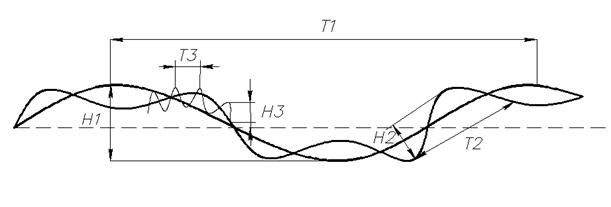
Рис. 3.1. Схема неровности поверхности
Макронеровности – это единичные, не повторяющиеся регулярно отклонения
от номинальной формы. Например овальность, эллипсность, конусность,
бочкообразность, вогнутость. Они характеризуются отношением Т1 / Н1≈1000.
Причина их возникновения – погрешность обработки заготовок.
Волнистость характеризуется совокупностью периодически
повторяющихся и близких по размерам чередующихся выступов и впадин. Возникает
волнистость вследствие вибрации станка, приспособления, инструмента и
заготовки; неравномерности процесса обработки; различного характера
пластических деформаций и т.д. Для волнистости характерно отношение Т2 /
Н2 ≈ 30 – 1000.
Шероховатостью называют микронеровности поверхности. Они
характеризуются чередованием выступов
и впадин с параметрами
Т3 / Н3 ≈ 0 – 30.
Шероховатость возникает из-за вибрации заготовки и инструмента, налипания
частиц металла на обрабатывающий инструмент, от состояния и формы инструментов
и др.
Требования к шероховатости поверхности и параметры
шероховатости устанавливает ГОСТ 2789–73 «Шероховатость поверхности. Параметры
и характеристики».
Шероховатость поверхности в соответствии с ГОСТ
2789–73 измеряется на участках базовой длины l и определяется следующими основными параметрами :
Ra – среднее арифметическое отклонение профиля;
Rz – высота неровностей профиля по десяти точкам;
Rmax – наибольшая высота неровностей профиля;
Sm – средний шаг неровностей профиля по средней линии;
S – средний шаг неровности профиля по вершинам.
Среднее арифметическое отклонение профиля Ra определяется как средняя арифметическая высота
неровностей на базовой длине l:
(3.1)
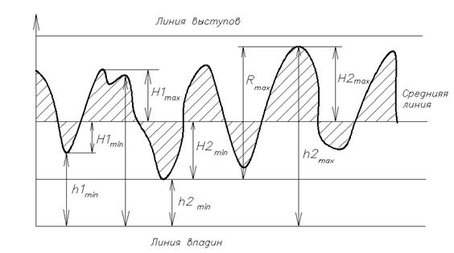
Рис.2.2 Профиль шероховатости
С определенной степенью точности Ra
можно найти делением суммы высот от точек профиля до средней линии m на число
взятых высот без учета знаков:
. (3.2)
Высота неровности профиля по десяти точкам Rz
определяется как среднее расстояние между пятью высшими точками выступов и
пятью низшими точками впадин, отсчитанных от средней линии без учета знака:
. (3.3)
Средняя линия m профиля есть базовая линия, имеющая форму
номинального профиля и проведенная так, что в пределах базовой длины среднее
квадратическое отклонение профиля до этой линии минимальное.
Средняя линия имеет форму геометрического профиля: для
плоскости–прямая, для шара – окружность и т.д.
Параметр Rz можно определять также от произвольной линии P, проведенной параллельно средней линии:
. (3.4)
Параметр Rmax представляет собой максимальную высоту неровностей
профиля и равен расстоянию от линии выступов до линии впадин.
Ra, Rz, Rmax
являются высотными параметрами.
Шаговые параметры S и Sm
характеризуют геометрическую форму профиля и определяются как среднее значение:
, (3.5)
. (3.6)
Величина, форма и шаг микронеровностей зависят от
методов изготовления, режимов техпроцесса и других факторов.
Физико-механические характеристики поверхностного слоя
в общем случае отличаются от аналогичных характеристик основного материала. К
примеру, в литых заготовках это проявляется в различии кристаллического
строения поверхностных и внутренних слоев. В механически обработанных деталях –
в различной прочности, твердости и других характеристиках, обусловленных
воздействием сил резания на материал поверхностного слоя.
Качество поверхностей деталей имеет важное значение в
решении общей проблемы повышения качества и надежности изделий в целом. Это
обусловлено тем, что в процессе эксплуатации именно поверхностный слой в первую
очередь подвергается внешним воздействиям: в нем начинаются механическое и
коррозионное разрушения, зарождаются усталостные трещины, происходит износ
трущихся поверхностей.
Характеристики поверхности во многом определяют
качество и долговечность контактов, электрическую прочность межэлектродных
промежутков, надежность герметизации и др.
Следовательно, обеспечение и надежный контроль
выполнения технических требований к качеству поверхностей деталей, также как и
к их точности, должны являться основными исходными пунктами при разработке
любого варианта технологического процесса.
4. Технологическая подготовка
производства
Технологическая подготовка производства – это
совокупность организационно-технических мероприятий и инженерно-технических
работ, обеспечивающих технологическую готовность предприятия к выпуску изделий
заданного уровня качества при установленных сроках, объемах выпуска и затратах.
Объем и содержание технологической подготовки
производства включает в себя:
1. проведение всего комплекса работ по проектированию
технологических процессов;
2. конструирование
и изготовление технологического оснащения (нестандартного технологического
оборудования, приспособления, инструмента, средств механизации и
автоматизации);
3. разработку технологического контроля и средств для
его осуществления;
4. установку
и освоение нового оборудования;
5. расчет норм
расхода материала, рабочей силы, необходимых производственных площадей;
6. проектирование внутрицехового и межцехового
транспорта;
7. разработку
системы планирования производства.
Технологическая подготовка производства базируется и
осуществляется в соответствии с правилами, установленными Государственными
стандартами Единой системы технологической подготовки производства (ЕСТПП).
Главная задача ЕСТПП, основанной на принципе
стандартизации, заключается в обеспечении необходимой мобильности
промышленности, которая при высоких производственно-технических показателях
может быть оперативно переключена на выпуск требуемой номенклатуры новых
изделий.
ЕСТПП предусматривает широкое
применение прогрессивных типовых технологических процессов, стандартизованных
технологической оснастки и оборудования, средств механизации и автоматизации не
только технических процессов, но и инженерно-технических
и управленческих работ. Она включает в себя решение следующих функциональных
задач:
1. обеспечение технологичности конструкции изделия;
2. разработку технологических процессов;
3. проектирование и изготовление средств технологического
оснащения;
4. организацию и управление процессом технологической
подготовки производства.
При решении конкретных задач ТПП для специфических
условий отрасли и различных типов производства предусматривается возможность на
базе основных положений ЕСТПП разрабатывать отраслевые стандарты (ОСТ) и
стандарты предприятий (СТП). Документацию на конкеретные методы и средства ТПП
разрабатывают на основе следующих документов и стандартов ЕСТПП:
1. Единой системы конструкторской документации (ЕСКД);
2. Единой системы технологической документации (ЕСТД);
3. Единой системы классификации и кодирования
технико-экономической информации (в том числе чертежей изделий, технологических
процессов, технологических операций и т.п.);
4. Единой системы аттестации качества продукции;
5. Государственной системы обеспечения единства
измерений.
6. Документации по механизации и автоматизации обработки информации,
используемой при ТПП и управлению ею.
7. Нормативно-технической документацией на: типовые и
другие прогрессивные технологические процессы и методы их типизации и
стандартизации, средства технологического оснащения и методы их унификации,
агрегатирования и стандратизации, средства механизации и автоматизации
инженерно-технических работ; методы нормирования и нормативно-справочные данные
и др.
Основные этапы работ по ТПП производятся параллельно с
этапами конструкторской подготовки производства. Стадии (этапы) конструкторской
и технологической подготовки производства.
|
КПП |
ТПП |
|
Техническое задание Техническое преложение |
– – |
|
Эскизный проект Технический проект |
Предварительный проект |
|
Разработка рабочей документации Изготовление и испытание опытного образца |
Изготовление и испытание опытного образца |
|
Изготовление и испытание опытной серии |
Изготовление и испытание опытной серии |
|
Серийное (или массовое) производство |
Серийное (или массовое) производство |
На стадиях разработки конструкторской документации «Техническое
задание» и «Техническое предложение» технологическую документацию допускает не
разрабатывать.
Разработка на стадии «Предварительный проект»
технологической документации приводится с присвоением литеры «П». Этот этап
соответствует стадиям разработки конструкторской документации «Эскизный проект»
и «Технический проект».
Предварительный проект содержит перечни специальных и
типовых технологических процессов, технических заданий на разработку
специального технологического оснащения.
На стадии разработки рабочей документации опытного
образца производится проектирование технологической документации для
изготовления и испытания опытного образца. По результатам его испытания
корректируется конструкторская документация и вносятся необходимые изменения в технологическую
документацию, после чего е й
присваивается литера «О».
При изготовлении и испытании опытной (установочной)
серии производится корректировка технологических документов с присвоением им
литеры «А».
При серийном или массовом производстве осуществляется
дальнейшая корректировка и уточнение конструкторских и технологических
документов. Технологическим документам, окончательно отработанным и проверенным
в производстве, присваивается литера «Б».
5. Проектирование технологических
процессов изготовления деталей
Классификация технологических процессов
Классификация технологических процессов ведется по
следующим признакам:
1. по методу разработки и применения – на единичные,
типовые и групповые;
2. по назначению – рабочие и перспективные;
3. по степени детализации содержания технологических
документов – маршрутные, операционные и маршрутно-операционные;
4. по используемому методу обработки материалов –
процессы литья, обработки давлением, электрохимической обработки и т.д.
Технологический процесс, обеспечивающий изготовление
изделии, имеющих одно наименование, типоразмер и исполнение, не зависимо от
типа производства называется единичным.
Технологический процесс, для которого характерно
единство содержания и последовательности технологических операций и переходов
для совокупности конструктивно подобных деталей, отличающихся только
габаритами, называется типовым.
Типовой технологический процесс разрабатывается для
изготовления в конкретных производственных условиях типового представителя
группы изделия, обладающих общими конструктивно-технологическими признаками. К
типовому представителю группы изделий относят изделие, обработка которого
требует небольшого количества основных и вспомогательных технологических
операций, характерных для изделий, входящих в эту группу.
Например:
1. Цилиндрические детали типа валов (валы и оси
гладкие, валы и оси ступенчатые, пальцы, цапфы, штифты);
2. Цилиндрические детали типа втулок (гладкие и
ступенчатые втулки, стаканы, гильзы);
3. Корпусные детали (станины, столы, плиты, шасси);
4. Стойки – держатели (кронштейны, серьги, стойки).
Для каждого из систематизированного класса деталей
разрабатывается единый типовой технологический процесс.
Метод групповой
обработки основан на классификации технологически
сходных деталей, требующих для своей обработки однотипного оборудования,
общего технологического оснащения и настройки станка. Группа характеризует
применение одного типа станка, единой технологической оснастки и общей
настройки.
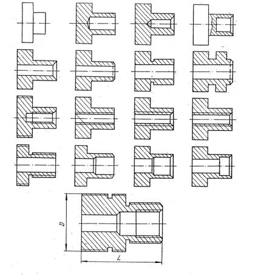
Рис.5.1 Детали, изготовленные по методу
групповой обработки
При группировании деталей исходят из представления о
так называемое комплексной детали, под которой понимается реальная или
абстрагированная деталь, содержащая все поверхности, характерные для данной
группы. Все другие детали, входящие в состав данной группы, должны иметь полный
комплект или часть поверхностей комплексной детали. Составленный на комплексную
деталь технологический процесс с небольшой подналадкой оборудования и оснастки
применим для изготовления любой детали данной группы.
Групповые технологические процессы реализуются в
конкретных условиях конкретного предприятия преимущественно серийного
производства.
По признаку основного назначения каждый вид
технологического процесса может быть охарактеризован как рабочий или перспективный.
Рабочий технологический процесс
применяется для изготовления конкретного изделия в соответствии с требованиями
рабочей технологической документации.
Перспективный
технологический процесс используется
как информационная основа для разработки рабочих технологических процессов при
техническом и организационном перевооружении производства (ГОСТ 14.302–73).
Исходные данные для проектирования
технологических процессов
Исходными данными для проектирования технологических
процессов служат:
1. Рабочий чертеж детали;
2. Технические условия;
3. Программа выпуска;
4. Руководящие технические материалы.
Рабочий
чертеж детали должен быть выполнен в
соответствии с ЕСКД, т.е. иметь необходимое количество проекций, необходимые
размеры при правильной их расстановке, обозначения шероховатости поверхности,
допуски и посадки, допуски на погрешности формы и расположения поверхностей,
указания о марке материала из которого изготавливается деталь, дополнительные
требования к детали (термообработка, покрытие).
Технические условия (ТУ) на наиболее ответственные
детали и изделия составляют на стадиях конструкторской подготовки производства
в тех случаях, когда не возможно по ряду причин изложить в рабочем чертеже
полностью требования к детали или замечания по их выполнению. В технических
условиях указывают: назначение детали, требования к детали; методы контроля;
общие указания о хранении, таре, транспортировке, клеймении и др.
От программы
выпуска изделий, типа производства (единичный, серийный, массовый) зависит
степень детализации при разработке технологических процессов: выбор заготовки,
выбор средств технологического оснащения и др.
К числу основных руководящих технических материалов
относят: каталожные данные о техническом оборудовании (его габариты, точность,
мощность, быстроходность, оснащенность); нормали на обрабатывающий и
измерительный инструмент и приспособления; нормативы на припуски и операционные
допуски; нормативы для технико-экономических расчетов; нормативы по
техническому нормированию. Могут быть использованы и другие руководящие
материалы.
Содержание работ по проектированию
технологических процессов
Проектирование технологических процессов изготовления
деталей начинают с изучения рабочих чертежей, технических условий, программы
выпуска изделий, руководящих технических материалов. Затем намечают и проводят
комплекс работ, который включает в себя:
1. Выбор вида технологического процесса, и по
возможности, подбор унифицированного технологического процесса;
2. Выбор вида исходной заготовки или состояния исходного
материала для обработки или переработки изделия;
3. Определение предварительного содержания
технологических операций, схем установки заготовок, разработка маршрутной
технологии;
4. Назначение (выбор или заказ) технологического
оснащения. Уточнение содержания технологических операций.
5. Назначение и расчет режимов обработки, нормирование
технологических операций и переходов, определение профессий и квалификаций
исполнителей;
6. Расчет и проектирование производственных участков,
составление планировок размещения технологического оборудования и разработка
операций перемещения изделий и отходов;
7. выбор и назначение внутрицеховых
подъмно-транспортных средств;
8. Оформление рабочей технологической документации на
разработанный технологический процесс.
Разработанный тезнологический процесс оформляется на
специальных документах, обуславливающих его правильное планирование и
выполнение. Весь состав технологических документов (ТД) и правила их заполнения
определяются ЕСТД, в соответствии с которой основными ТД являются карты
технологического процесса (маршрутные, комплектовочные, операционные и др.) и
технологические инструкции.
Проектирование технологических процессов ведется с
соблюдением технологических и экономических принципов.
Технологический принцип – это надежное обеспечение требований чертежа за счет
рационального построения технологического процесса (маршрута, оборудования,
инструментов, режимов и норм времени).
Экономический
принцип – обеспечение себестоимости
продукции, не большей, чем при любом другом варианте изготовления детали.
6. Оформление технологической документации на технологические процессы изготовления деталей
Комплекс работ и мероприятий, обеспечивающих освоение новых и совершенствование ранее освоенных конструкций РЭА, называется технической подготовкой производства(ТП). В технической подготовке производства различают конструкторскую и технологическую часть. Технологическая подготовка производства регламентируется комплексом государственных стандартов ЕСТПП. Эта система предназначена для ре-шения следующих задач: обеспечение технологичности конструкции изделия, разработку ТП, проектирование средств оснащения, отладку и внедрение ТП и средств оснащения, организацию ТПП, управление ТПП. Среди перечисленных задач разработка ТП является важнейшей функцией ТПП. Стандарты ЕСТПП обязывают вести разработку ТП только на детали, конструкция которых удовлетворяет требованиям технологичности.
Разработка ТП включает в себя в общем случае:
1. Выбор вида ТП и подбор ранее разработанного унифицированного ТП, если такая возможность имеется.
2. Выбор вида исходной заготовки или состояния исходного материала для обработки или переработки в изделие.
3. Определение предварительного содержания операций, схем установки заготовок и последовательности выполнения операций (маршрута операций).
4. Назначение (выбор или заказ) технологического оборудования, оснастки и средств механизации и автоматизации производственного процесса. Уточнение содержания операций.
5. Назначение и расчет режимов обработки, нормирование переходов и операций ТП, определение профессий и квалификаций исполнителей.
6. Расчет и проектирование производственных участков, составление планировок размещения оборудования и разработка операций перемещения изделия и отходов.
7. Выбор и назначение внутрицеховых подъемно-транспортных средств.
8. Оформление рабочей технологической документации на ТП.
При разработке ТП используются три вида исходной информации: базовая, содержащаяся в конструкторской документации на деталь (рабочий чертеж и технические условия) и годовая программа выпуска деталей; руководящая, к которой относятся данные, помещенные в стандартах ЕСТПП и технологических инструкциях предприятия; справочная, находящаяся в справочниках, каталогах, описаниях действующих унифицированных ТП.
Применение унифицированных ТП позволяет вместо разработки новых подобрать действующие технологические процессы, оснастку и использовать с незначительной доработкой применительно к данной детали, что значительно сокращает трудоемкость выполнения пунктов 1—4. Выбор вида исходной заготовки и метода ее получения определяется способностью материала детали подвергаться определенным методам формообразующей обработки, конструктивными формами и размерами детали, требуемой точностью формирования физических параметров детали, размеров и свойств поверхностных слоев. Выбранный метод получения заготовки должен обеспечить не столько минимальные издержки на изготовление заготовки, сколько минимизировать суммарную стоимость выполнения всего ТП. Например, при повышении точности выполнения и возрастании стоимости заготовки, подвергаемой последующей обработке резанием, снижается стоимость выполнения ста-ночных операций, что снижает стоимость изготовления детали в целом. Но при малой программе выпуска большие расходы на оснастку в заготовительных цехах могут оказаться неоправданными.
При формировании операций возможны два направления: концентрация (укрупнение), т. е. соединение нескольких простых операций в одну сложную, и дифференциация, т. е. расчленение операций на несколько простых.
Концентрация операций используется в единичном и мелкосерийном производстве на базе роботизированного универсального оборудования с числовым программным управлением, а в условиях массового производства — на базе полностью автоматизированного специального оборудования.
Дифференциация операций преимущественно используется в крупносерийном и массовом производстве. Достоинством дифференциации операций является возможность использования упрощенной конструкции оборудования, а недостатком трудность переналадки оборудования при переходе к изготовлению нового изделия.
Существенной особенностью разработки ТП является то, что окончательное решение всех задач находят параллельно, методом постепенных приближений, уточнения решения одних задач после решения других. Например, может оказаться, что разработать технологическую оснастку при выбранной ранее схеме базирования невозможно или нерационально, поэтому необходимо вернуться к определению содержания операции и изменить структуру у последней. Это может потребовать также изменение состава и последовательности выполнения операций ТП в целом. Другой пример: при назначении режимов резания оказалось неудачным совмещение простых переходов в сложные и часть переходов необходимо перенести в следующую станочную операцию. Следовательно, нужно вернуться в предыдущую стадию разработки ТП и провести корректировку структуры ТП.
Виды технологических документов, фиксирующие результаты разработки ТП и используемые при реализации ТП, установлены государственными стандартами единой системы технологической документации — ЕСТД, входящими как составная часть в комплекс стандартов ЕСТПП. Назначение стандартов ЕСТД — установление во всех организациях единых правил выполнения документации, что дает возможность обмена технологическими документами между организациями без их переоформления и использование средств вычислительной техники в технологическом проектировании. ГОСТ 3.1102—74 предусматривает использование следующих основных технологических документов: маршрутных карт, операционных карт, карт эскизов и схем; спецификаций технологических документов, технологических инструкций, материальных ведомостей, ведомостей оснастки.
Маршрутная карта предназначена для описания технологического процесса изготовления и контроля изделий по всем операциям в технологической последовательности с указанием соответствующих данных по оборудованию, оснастке, материальным, трудовым затратам и другим параметрам.
Операционная карта содержит описание операций технологического процесса изготовления изделий с расчленением операций по переходам и с указанием режимов работы, расчетных норм времени на выполнение операции.
Карта эскизов и схем предназначена для графической иллюстрации технологического процесса изготовления изделия или отдельных его элементов и содержит эскизы и схемы, дополняющие или поясняющие содержание операций.
Спецификация технологических документов представляет собой перечень всех технологических документов, выпущенных на изделие и его составные части.
Технологическая инструкция содержит описание специфических приемов работ и описание методики контроля технологического процесса, правил пользования оборудованием и приборами, а также описание физико-химических явлений, происходящих при отдельных операциях ТП.
Материальная ведомость предназначена для подготовки производства и является подетальной и сводной ведомостью норм расхода материала.
Ведомость оснастки содержит перечень специальных и стандартных приспособлений и инструментов, необходимых для оснащения ТП. Она составляется на основании карт ТП.
7. Общая характеристика методов изготовления и обработки деталей РЭС. Изготовление деталей литьем.
Для снижения
метала и трудоемкости изготовления таких деталей как корпуса приборов,
радиаторы, волноводы, магниты и др. производят из литых заготовок-отливок.
Литьем можно получать фасонные отливки различной конфигурации из сплавов на
основе меди, алюминия, титана, и др. черных и цветных металлов, которые другими
методами изготовить сложно. Применение литейных процессов для изготовления
заготовок рациональной формы дает не только экономию металла, но и в десятки
раз снижает трудоемкость последующих операций обработки деталей.
Основными
операциями технологического процесса литья являются: плавка металла; его
заливка в форму; извлечение отливки из формы после затвердевания, отрезка
литников и др.
В зависимости
от технологического оборудования и конструкции литейных форм различают: литье в
песчаные (земляные) формы, литье в металлические формы; литье под давлением,,
центробежное литье, литье по выплавленным моделям; литье намораживанием, литье
в оболочечные формы и др.
Типовым
технологическим оборудованием литейных цехов являются плавильные агрегаты,
машины для литья под давлением, машины для центробежного литья, формовочные
машины, агрегаты для сушки форм, станки для отрезки литников и др.
К СТО
литейных операций относятся литейные формы, модели кокили, пресс-формы, и др. Важнейшими
технологическими свойствами литейных сплавов являются: температура заливки
(определяет стойкость металлических форм); жидкотекучесть (возможность
получения тонкостенных отливок) и коэффициент усадки (характеризует
относительное изменение размеров после охлаждения).
Конструкция
отливки должна обеспечивать ее легкое извлечение из формы, для этого
поверхности перпендикулярной плоскости разъема придают уклоны или конусности.
Толщина стенок должна быть малой и одинаковой для равномерности охлаждения. Формы
отливок должны быть простыми без резких переходов от толстых сечений к тонким,
нескругленных поворотов, тонких перемычек и т.п. Сопряжения стенок должны быть
плавными с большим радиусом переходов при этом не создаются дополнительные
сопряжения, не снижается скорость потока металла и его остывание. Следует
исключать большие местные скопления металла, возникающие в пересечении стенок,
приливах, бобышках и т.д. Это приводит к неравномерному остыванию и образованию
усадочных раковин.
Литье в
песчаные формы (в землю)
Производится
в разовые формы, которые служат для изготовления одной отливки и при ее
извлечении разрушаются. Формы изготавливаются из песчано-глинистой,
песчано-смольной и др. смесей. Различают:
1.
Сырые формы
(формировка по сырому);
2.
Сухие формы
(формировка по сухому);
3.
Поверхностно
подсушиваемые;
4.
Химически-твердеющие
формы.
Наибольшее
применение имеет формировка по сырому из песчано-глинистых смесей.
Литье в землю
применяется для получения больших отливок сложной конфигурации из чугуна, силумина
и бронзы. Точность литья невысокая, шероховатость большая (Rz=300–600) поэтому отливки требуют
механической обработки.
Применяют для
получения заготовок массой ≤16 кг из легкоплавких цветных сплавов. Самый
производительный способ литья (60–150 отливок в час в одногнездной форме,
>2500 в многогнездной). Используется для массового и серийного производства
из-за высокой стоимости СТО и оборудования.
В поршневых
машинах (с горизонтальной или вертикальной камерой сжатия) расплавленный металл
(кроме алюминиевых сплавов) под высоким (до 500 МПа) давлением и с большой
скоростью (до 80м/с) подается в рабочую полость стальной формы через подводящий
канал поршнем.
Алюминиевые
сплавы отливаются в компрессорных машинах, где давление на металл создается
сжатым воздухом (расплавленный алюминий разрушает поверхность поршня и камеры
давления). Поршневые машины дают более точные и качественные отливки (меньше
газовых включений, более плотные металл), но обладают меньшей
производительностью из-за ручной подачи порции жидкого металла.
Оптимальной
является температура жидкого металла на 20–30º выше Тпл. При
повышенных температурах перегревается и быстро выходит из строя форма,
увеличивается пористость и число раковин, при заниженной – литейная форма плохо
заполняется. Качество литья определяется конструкцией и качеством изготовления
форм. Из-за высокой стоимости используются формы для групповой отливки, системы
вкладышей, для изменения конфигурации отливок, а также нормализованные
конструкции форм для различных заготовок.
Достоинства
метода: большая (8–12 квалитет) точность размеров, шероховатость Rz40–6,3, толщина стенок до 0,6 мм,
малые припуски на обработку, возможность армирования.
Недостатки:
высокая стоимость и сложность изготовления форм, пористость отливок, трудность
получения толстостенных заготовок (из-за высокой скорости заливки образуются
раковины).
Получают:
заготовки станин, кронштейнов, радиаторов, экранов, корпусных деталей и т.д.
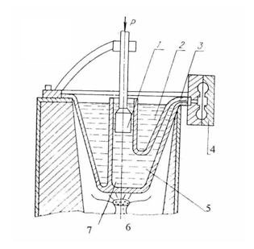
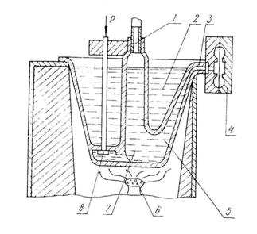
Рис. 7.1.
Установки литья под давлением
Модель,
изготовленная из легкоплавкого металла (парафин, стеарин, терезин) выплавляется
из формы. Поскольку форма не разнимается, точность литья высокая. Модели
изготавливаются в разъемных металлических пресс-формах. Такое литье применяется
для получения деталей сложной конфигурации из сталей, цветных сплавов и
труднообрабатываемых материалов массой до нескольких кг.
Достоинства
метода: высокая производительность и возможность автоматизации; точность
размеров (10–12 квалитет) и шероховатость
Rz=40–10;
сокращение на 40–80 % объема механической обработки за счет уменьшения
припусков и толщины стенок; возможность армирования отливок и получения деталей
сложной конфигурации из труднообрабатываемых материалов массой до нескольких
кг.
Достоинства
метода: высокая производительность и возможность автоматизации; точность
размеров (10–12 квалитет) и шероховатость
Rz40–10;
сокращение на 40–80% объема механической обработки за счет уменьшенных
припусков и толщины стенок; возможность армирования отливок и получения деталей
сложной конфигурации их труднообрабатываемых материалов не требующих
дополнительной обработки.
Основной
недостаток – высокая стоимость литья. Массовове и серийное производство.
Операции ТП:
получение модели с литниковой системой и сборка их в блоки; нанесение
огнеупорного покрытия (окунание в суспензию, обсыпка огнеупором, сушка 3–8
раз), выплавка модели; ее заформовывание в опоку и прокаливание, заливка
металла.
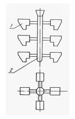
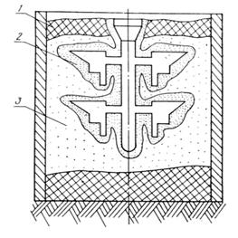
Рис. 7.2.
Литниковые модели
Основано на
использовании центробежных сил, прижимающих жидкий металл к стенкам
формы-изложницы и уплотняющих заготовку. Используются литейные машины с
горизонтальной (длинномерной отливки) и вертикальной осями вращения. Последние
наиболее широко используются в серийном и массовом производстве таких деталей
РЭС и ВС как маховики, шкивы и др. детали типа тел вращения, а также фасонных
отливок сложной формы, массой до сотен кг из сплавов меди. Изложницы могут быть
в виде форм, получаемых по выплавленным моделям.
Достоинства:
точность 0,66–0,1 мм, хорошее заполнение формы, высокая плотность и качество
отливки (газы, шлаки и легкие включения вытесняются в литник).
Недостатки:
разделение компонентов по плотности, повышенные припуски на механическую
обработку внутренних размеров.
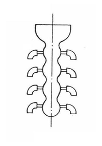
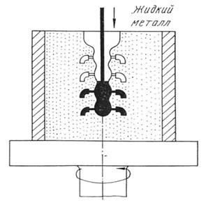
Рис. 7.3.
Центробежное литье
Кокиль –
разъемная металлическая форма. Метод используется в массовом и серийном
производстве небольших отливок в основном из цветных сплавов.
Операции ТП:
смазка частей и сборка кокиля (для лучшего заполнения и предотвращения
образования трещин при быстром охлаждении отливок) – простые отливки
150–200ºС, сложные – 300–450ºС; заливка металла, охлаждение до
300–350ºС; разборка кокиля и извлечение отливки.
Температура и
скорость заливки должны обеспечивать заполнение всего объема кокиля металлом до
его затвердевания и выход газов.
Конструкция
кокиля должна обеспечивать его быструю сборку, разборку и извлечение заготовки.
Материал – жаропрочные стали.
Достоинства:
высокая производительность, возможность многократного использования формы,
большая точность размеров (12–14 квалитет), шероховатость Rz=80–20; возможность получения
тонкостенных (1,5–2 мм) и армированных заготовок; высокая механическая
прочность отливок (мелкозернистая структура из-за высокой скорости остывания).
Производительность за смену при изготовлении заготовок средних размеров: из
чугуна – 1500–5000; медных сплавов – 3000–10000; алюминиевых сплавов –
50000–70000.
Недостатки:
высокая стоимость и сложность изготовления кокилей, их малая стойкость,
трудность получения отливок из тугоплавких сплавов и разностенных отливок
(большие внутренние напряжения при переходе к другому сечению).
На зеркало
жидкого металла помещают поплавок, форма внутреннего отверстия которого
соответствует наружному профилю поперечного сечения отливки. В отверстие вводят
затравку из того же металла, что и расплав. Поперечное сечение затравки
соответствует профилю детали. Происходит сцепление затравки с расплавом и
затравке придается поступательное движение вверх. Под действием атмосферного
давления, сил сцепления и поверхностного натяжения жидкий металл поднимается за
затравкой, охлаждается в кристаллизаторе и образуется отливка.
Этим методом
получают сложные длинномерные профили с толщиной стенок до 0,2 мм для
радиаторов, ленты, трубы. Способ не требует сложной оснастки и может быть
применен для всех типов производства. Недостаток – низкая скорость литья.
Механические свойства таких заготовок значительно выше свойств аналогичных отливок, полученных
литьем в кокиль и центробежным литьем.
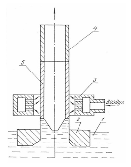
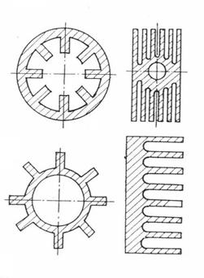
Рис. 7.4.
Литье намораживанием
Оболочковая
форма, состоящая их двух полуформ, изготавливается из формовочной смеси, в
состав которой входят кварцевый и цирконовый песок
и термореактивный связующий материал, с использованием
специальной поддельной оснастки. В промышленности внедрены автоматические линии
для изготовления оболочных форм.
С помощью
этого метода изготавливают отливки массой от 0,2 до 50 кг и толщиной
стенок от 0,3 до 15 мм из всех литейных
сплавов для приборов, автомобилей, станков и т.д.
Достоинства:
1. высокая производительность; 2. высокая точность; 3. малая шероховатость поверхности; 4.
снижение расхода формовочных материалов и объема механической обработки.
Недостатки:
высокая стоимость литья. Применяется в массовом и крупносерийном производстве.
8. Обработка металлов давлением
Под “обработкой металлов давлением” в технологии
понимают различные технологические процессы получения заготовок, полуфабрикатов
и готовых изделий из черных и цветных металлов путем деформирования в холодном
или горячем состоянии.
Понятие об упругой и пластической деформации
металлов
Деформация – изменение формы и размеров твердого тела под
воздействием приложенных к нему нагрузок. Различают деформацию упругую
(обратимую) и пластическую (необратимую)
Упругой
деформацией называют такую, которая
исчезает после снятия нагрузок, т.е. тело восстанавливает свою первоначальную
форму. Пластическая деформация
остается после снятия внешней нагрузке, (тело не восстанавливает первоначальную
форму и размеры).
Пластическая деформация сопровождается смещением одной
части кристалла относительно другой на расстояние, значительно превышающие
расстояния между атомами в кристаллической решетке металлов и сплавов.
Способность металлов и сплавов к пластической
деформации имеет важное практическое значение, т.к. все процессы обработки
металлов давлением основаны на пластическом деформировании заготовок.
Величина
пластической деформации не безгранична, при определенных ее значениях может
начинаться разрушение металла.
При пластической деформации изменяется не только
форма, но и свойства деформируемого металла. В реальном поликристаллическом
металле происходит изменение форм зерен (кристаллитов) дробление отдельных
зерен, а также ориентация их определенных кристаллографических осей в
направлении течения металла. Преимущественная ориентация зерен называется текстурой. Текстура металлов
обусловливает анизотропию их механических, магнитных и электрических свойств. В
общем случае анизотропия свойств металла отрицательно сказывается при
дальнейшей его обработки и эксплуатации изделий.
В некоторых случаях специально стремятся создать
максимально текстурованный в определенных направлениях для повышения
механической прочности или магнитно-электрических свойств.
Сущность холодной и горячей обработки металлов давлением
Холодная деформация
характеризуется изменением формы зерен, которые вытягиваются в направлении
наиболее интенсивного течения металла. При холодной деформации формоизменение
сопровождается изменением механических и физико-химических свойств металла. Это
явление называют упрочнением
(наклепом). Изменение механических свойств состоит в том, что при холодной
пластической деформации по мере ее увеличения возрастают характеристики
прочности, а характеристики снижаются. Металл становится более твердым, но мене
пластичным. Упрочнение возникает вследствие поворота плоскостей скольжения,
увеличение искажений кристаллической решетки в процессе холодного
деформирования(накопление дислокаций у границы зерен).
Способы обработки металлов
давлением
К примеру: при обработке
резанием за один час работы револьверного станка можно получить 20 болтов (без
резьбы) диаметром 12 мм и длиной 25 мм, на
четырехшпиндельном автомате можно получить 80 таких же станков. Болтовысадочная
ковочная машина за час дает 4200 штук таких же болтов.
Рис. 8.1. Прокатка
Практика гладкими волоками
дает листы и ленты, а ручьевыми волоками – различные прокатные профили.
Рис. 8.2. Волочение
В результате волочения поперечное сечение заготовки
уменьшается, а длина увеличивается.
Технологический процесс волочения состоит из 3 основных
стадий:
1. подготовка металла
(очистка от окалины, смазывания, заделка концов);
2. волочение по
определенному режиму;
Рис. 8.3. Примеры
профилей, получаемых волочением и т. д.
Прессование – это
процесс выдавливания металла, заключенного в замкнутой плоскости контейнера,
через отверстие матрицы, сечение которого меньше площади сечения контейнера, а
форма соответствует форме готового изделия.
Рис. 8.4. Схема прессования полого профиля.
1 – пуансон; 2 – металл заготовки; 3 –
матрица; 4 – игла; 5 – пресс- шайба;
Ковкой получают заготовки
для последующей механической обработки. Их называют поковками.
К основным формообразующим
операциям относятся: осадка, высадка, протяжка, прошивка, отрубка, гибка.
Осадка – операция уменьшения высоты заготовки при увеличении
площади ее поперечного сечения.
Рис. 8.5. Осадка
Высадка – металл осаживается лишь на части длины заготовки.
Рис. 8.6. Высадка
Протяжка – операция удлинения заготовки или ее части за счет
уменьшения площади поперечного сечения.
Рис. 8.7. Протяжка
Прошивка – операция получения полостей в заготовке за счет
вытеснения металла.
Рис. 8.8. Прошивка
Отрубка – операция отделения части заготовки по незамкнутому
контуру путем внедрения в заготовку деформируемого инструмента.
Гибка – операция придания заготовке прогнутой формы по заданному
контуру.
Горячая объемная штамповка – способ
обработки метолов давлением, при котором изделию придается необходимая форма
при помощи специального инструмента – штампа.
Образуемая в результате
объемной штамповки деталь называемая поковкой.
По сравнению с ковкой
штамповка имеет ряд преимуществ.
1. Имеет более высокую производительность;
2. Обеспечивает меньший расход материала;
1. Для объемной штамповки
паковок требуется гораздо большее усилие деформирования;
2. Штамп дорогостоящий
инструмент и пригоден только для изготовления одной, конкретной паковки.
Штампы – это массивные стальные формы, состоящие из двух
частей в которых имеются полости. Эти полости называются ручьями. Верхняя часть
штампа закрепляется на подвижной части кузнечной машины, нижняя – на
неподвижной. При смыкании обеих частей штампов образуется ручей, формы и
размеры которого соответствуют изготавливаемому изделию. В зависимости от
степени сложности изделия используют штампы одноручьевые или многоручьевые.
Штамповка паковок сложной конфигурации производится в многоручьевых штампах,
ручьи которого подразделяются на заготовительные и штамповочные (чистовые и
черновые).
Различают штамповку в
открытых и закрытых штампах.
Заготовка, имеющая форму
круга, прижимается упором к вращающейся форме.
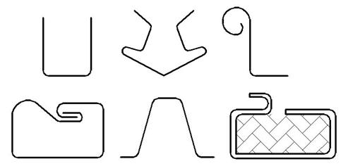
Рис. 8.9. Примеры гнутых профилей
Накатывание резьбы и мелкомодульных зубчатых
колес
Рис. 8.10. Накатывание резьбы плоскими плашками
Рис. 8.11. Накатывание резьбы роликами
Диаметр заготовки для
накатывания резьбы определяется по формуле :
где – наружный диаметр
резьбы, мм; – внутренний диаметр
резьбы, мм.
Рис. 8.12. Накатывание
цилиндрических и конических микромодульных колес
Процесс можно
осуществлять на токарных станках накатниками 1 и 3, которые закреплены на
суппорте и перемещаются с подачей Sпр. Каждый
накатник имеет заборную часть для постепенного образования накатываемых зубьев
на заготовке 2.
Рис. 8.13. Прямое выдавливание
Рис. 8.14. Обратное выдавливание
Рис. 8.15. Боковое выдавливание
Комбинированное выдавливание
характеризуется одновременным течением металла по нескольким из рассматриваемых
схем холодного выдавливания.
где F0 – площадь
поперечного сечения исходной заготовки; F1 – площадь поперечного сечения
выдавленной части детали;
Рис. 8.16. Холодная высадка
Высадка головки детали за
один удар пуансона обеспечивается при l ≤ (2,5 – 2,8) d. При l ≤ (3,5 – 5,5) d – за два
удара, и при l > (6 – 8) d – за три
удара.
На холодновысадочных
автоматах штампуют заготовки диаметром 0.5 – 40 мм из
черных и цветных металлов. Получают такие детали как болты, винты, заклепки,
гвозди, шарики, ролики и т.д. Штамповка на холодновысадочных автоматах
характеризуется высоким коэффициентом использования металла ~ 95% (только 5%
металла идет в отход).
Каждый последующий переход
осуществляют в специальном штампе.
Применяются в
крупносерийном и массовом производстве.
9. Холодная листовая штамповка
Листовая штамповка – это процесс
получения изделий или заготовок из листового материала путем деформирования его
на прессах с помощью штампов. Листовой штамповкой можно получать изделия не
только из металла, но и из кожи, картона, пластмасс.
1. Операции с разделением (резкой) материала;
2. Операции с пластической деформацией материала.
– гибка – превращение
плоской заготовки в изогнутую деталь;
– вытяжка – превращение
плоской заготовки в полую деталь любой формы;
– формовка – изменение
формы детали или заготовки путем местных деформаций различного характера.
Резка объединяет большую
группу различных операций, в которую входят:
– и некоторые другие
операции.
Отрезка заготовок от листового материала производится, в
основном, на специальных станках-ножницах различных типов – гильотинных,
параллельных, дисковых. Отрезка применяется в большинстве случаев для получения
полос материала, необходимых в качестве заготовок для проведения различных
операций холодной штамповки.
Рис. 9.1. Вырубка
Вырубка – это операция полного отделения материала по
замкнутому контуру, когда отделенная часть является изделием или готовой
заготовкой. Эту операцию осуществляют в штампе, пуансон которого вдавливает
отделяемую часть в отверстие матрицы.
Пробивка – операция полного отделения материала, по замкнутому
контуру, когда отделяемая часть является отходом, т.е. операция получения
отверстия в заготовке. Пробивка ничем не отличается от вырубки по схеме
деформации.
Рис. 9.2. Пробивка
1. Минимальный диаметр
пробиваемого отверстия берется обычно не менее толщины материала:
d≥S.
2.
Расстояние между двумя отверстиями и радиусы
закругления:
а≥S; r≥S.
3. Расстояние между краем отверстия и краем детали
(заготовки):
b≥S.
Рис. 9.3. Пример пробивки
d≥0,3S.
где К –
коэффициент, учитывающий влияние конструктивно-технологических факторов; L – длина
линии реза; S – толщина металла; σср – сопротивление металла срезу (м.б. σв – предел прочности
материала).
Прорезка – операция отделения по краю контура с удалением
отделенной части.
Рис. 9.4. Прорезка
Надрезка – операция отделения материала по незамкнутому
контуру без удаления отделенной части.
Рис. 9.5. Надрезка
Обрезка – операция полного отделения излишков материала по
контуру заготовки, полученной путем вытяжки или объемной штамповки.
Зачистка – операция отделения срезанием небольшого (0,2–0,3
мм) припуска от детали. Зачистная штамповка применяется для чистовой обрезки по
контуру предварительно вырубленных или пробитых деталей с целью удаления
шероховатой поверхности среза.
Гибка
Гибка – образование или изменение углов между частями
заготовки или придание ей криволинейной формы.
Рис. 9.6. Гибка
где В – ширина заготовки; S – толщина листового материала; σв –
предел прочности материала; R – радиус закругления угла.
Вытяжка – это процесс образования полой заготовки или детали
из плоской или полой листовой заготовки.
Рис. 9.7. Вытяжка
Вытяжка
производится за счет пластической деформации, сопровождаемой смещением
значительного объема металла. При изготовлении сравнительно неглубоких деталей
с отношением высоты к диаметры h / d ≤ 0,5 вытяжка может быть произведена за одну
операцию. При отношении h / d = 3 – 10 требуется уже несколько последовательных
операций вытяжки.
При изготовлении
деталей вытяжкой ограничивающие условия более существенны, чем при других
операциях штамповки. Детали должны иметь радиусы закругления: в месте
сопряжения дна со стенками r ≥ 2S; в местах сопряжения стенок между собой, стенок с
фланцами – r ≥ 3–4S.
– отбортовка
отверстий и наружного контура;
Рельефная формовка представляет
собой изменение формы заготовки, заключается в образовании мелких углублений и
выпуклостей за счет растяжения материала. Наиболее часто рельефная формовка
применяется для штамповки ребер жесткости и выдавок.
Рис. 9.8.
Рельефная формовка
Отбортовка наружного контура применяется
при изготовлении детали типа крышек и др. Применение отбортовки также
увеличивает жесткость детали.
Отбортовка отверстий –
образование борта по краю отверстия. В основном выполняется для нарезания
резьбы в штампованных деталях. Отбортовка под резьбу возможна лишь для мелких
резьб (до М5). Шаг резьбы при этом должен быть меньше половины толщины
материала.
Рис. 9.9. Отбортовка
За одну операцию
можно получить высоту бота h,
определяемую соотношением h = (0,1–0,4)D.
Обжатие – операция образования в полых заготовках местных
суженных участков без преднамеренного изменения толщины стенок.
Рис. 9.10. Обжатие
Листовая штамповка пластмасс
– для круглых
отверстий d ≥ 0,5 S;
– для квадратных
– d ≥ 0,45
S;
– для
прямоугольных d ≥ 0,35
S;
где S – толщина материала.
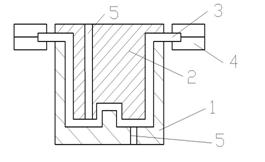 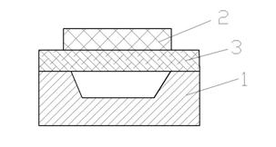
Рис. 9.11. Способы
штамповки пластмасс: а – заготовка между матрицей (1) и
пуансоном (2); б – Штампование в матрицу (2) материала эластичным
пуансоном;
в – Формирование материала толкателем. 1– матрица; 2 – пуансон; 3 – листовая заготовка; 4 –
зажимная рама; 5 – воздушный канал; 6 – поддон; 7– толкатель;
I – первый способ применяется для более сложных
деталей; II – второй
способ применяется при штамповке простых деталей на малую длину. Пуансон
эластичный, обычно из губчатой резины. III – третий
способ для получения деталей виде усеченного конуса, пирамиды и т.д.
Оборудование и специальная технологическая
оснастка для листовой штамповки
Штампы для листовой
штамповки могут быть простыми последовательными и совмещенными.
Простые (однооперационные) штампы предназначены для
выполнения одной операции (гибочные, вырубные, пробивные, вытяжные и т.д.).
Последовательные штампы производят несколько
операций последовательно (надрезка→гибка).
Совмещенные – за одни рабочий ход выполняется одновременно
несколько операций(вырубка контура детали и пробивка в ней отверстий).
Независимо от вида штампа
его элементы разделяют на рабочие,
установочные и монтажные.
Рабочими элементами штампа являются пуансоны (объемные детали)
и матрицы (объемлющие детали).
Установочные элементы обеспечивают центровку
пуансонов относительно матрицы, правильное размещение заготовки внутри штампа,
ее фиксацию во время выполнения операции, извлечение детали и удаление отходов.
Монтажные детали предназначены для размещения и
крепления рабочих и установочных деталей, а также для связи штампа с прессом.
10. Основы процесса обработки резанием. Токарная обработка
Общая характеристика обработки материалов резанием
Формообразование деталей резанием
производится на металлорежущих станках режущим инструментом, механическая
прочность и твердость которого значительно больше, чем у обрабатываемого
материала.
К финишным операциям относятся тонкое шлифование, притирка,
полирование и другие.
Способы обработки металлов резанием и элементы
режима резания
Движение резания – это движение заготовки или
режущего инструмента, происходящее с наибольшей скоростью v в процессе
резания.
Движение подачи – это движение заготовки или
режущего инструмента, скорость которого vs меньше
скорости движения резания, предназначенное для того, чтобы распространить
отделение слоя материала на всю обрабатываемую поверхность.
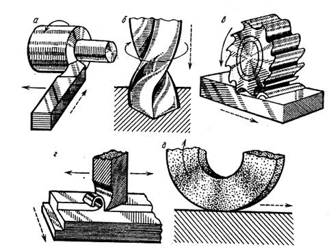
Рис. 10.1. Способы обработки металлов
резанием
При точении (а) заготовке сообщается главное движение резания, а
инструменты – движение подачи.
При сверлении оба движения, как правило, сообщаются сверлу.
При фрезеровании главное движение резания осуществляет фреза, а
движение подачи заготовка и т.д.
Глубиной резания t называют
расстояние между обрабатываемой и обработанной поверхностями, измеренное по
нормали к обработанной поверхности.
При точении это толщина
слоя металла, срезаемого за один проход резца.
. (10.1)
Подачей S называют величину
элемент главного движения перемещения инструмента или детали. М.б. подача на
оборот S0 , на зуб Sz,
на ход и т.д.
Скорость резания – скорость рассматриваемой точки
режущей кромки или заготовки в главном движении резания.
, (10.2)
где D – диаметр обрабатываемой заготовки; n – частота
вращения заготовки.
Площадь
резания – произведение глубины резания на подачу
Время, затраченное
непосредственно на процесс отделения стружки, называют основным технологическим:
, (10.3)
где L – путь проходимый резцом в направлении подачи; i – число
проходов резца на данной операции; h – припуск на
обработку; S0 – подача на оборот; n – частота вращения заготовки.
По основному технологическому времени рассчитывают
норму выработки на данном виде оборудования.
Физические основы процесса обработки
резанием
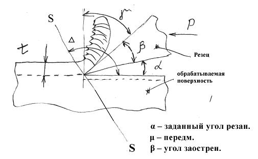
Рис. 10.2. Обработка резанием
Под действием силы резания
резец, выполненный в виде клина, вдавливается передней плоскостью в верхний
слой металла заготовки, подвергая его упругой и пластической деформации. Резец
преодолевает внутренние силы связи материала и отрывает от его мысы частицы
путем сдвига по плоскости SS. Процесс
сдвига совершается непрерывно, поэтому с обрабатываемой поверхности удаляется
слой металла t в виде
стружки.
Рациональная форма режущей
части резца определяются в основном его углами α и γ.
Угол γ – определят условия отвода
стружки и уменьшения потерь не трение стружки о плоскость резца (может быть как
(+) так и (–)) (-10;+30)°.
Угол α – определяет потери на трение
между задней плоскостью резца и обрабатываемой поверхностью.
Угол β – называется углом заострения.
1. Обтачивание – обработка
наружных поверхностей;
2. Растачивание – обработка
внутренних поверхностей;
3. Подрезание – обработка
плоских торцовых поверхностей;
4. Отрезка – разделение
заготовки на части или отрезка готовой детали от заготовки.
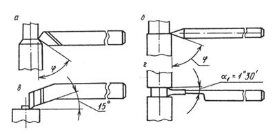
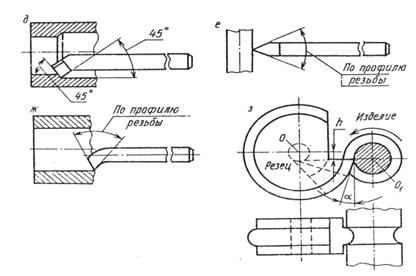
Рис. 10.3. Виды токарных резцов
Проходные резцы разделяют на обдирочные и
чистовые. Обдирочные проходные резцы применяются для черновой обработки
заготовок и использованием продольной подачи. Чистовые резцы используются для
окончательной обработки заготовок. Такие резцы имеют большой радиус закругления
при вершине.
Подрезные резцы служат для подрезания торцевых
поверхностей заготовок и уступов с использованием поперечной подачи.
Отрезные резцы используются для отрезания
заготовок и проточки кольцевых канавок.
Расточные резцы – для увеличения внутреннего
диаметра отверстий (растачивания).
Резьбовые резцы служат для нарезания наружной и
внутренней резьбы.
Фасонные резцы предназначены для выполнения
проточек специальной (отличной от прямоугольной) формы.
Операции точения
выполняются на станах токарной группы. Наиболее распространенными являются:
– токарно-револьверные
станки;
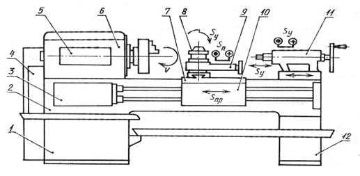
Рис. 10.4. Схема токарно-винторезного станка
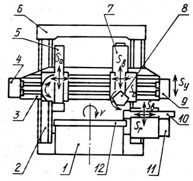
Рис. 10.5. Схема токарно-карусельного станка
Заготовка вращается вокруг
вертикальной оси.
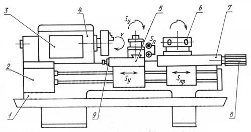
Рис. 10.6. Схема токарно-револьверного
станка
11. Обработка деталей резанием. Фрезерование
По сравнению с процессом
точения процесс фрезерования имеет следующие особенности:
Различают два способа
фрезерования:
– встречное – направления
вращения и движения подачи противоположны;
– попутное –направление
вращения и движения подачи совпадают.
Рис. 11.1. Встречное и попутное
фрезерование
Для процессов фрезерования
плоскостей применяют горизонтальные и вертикально-фрезерные станки.
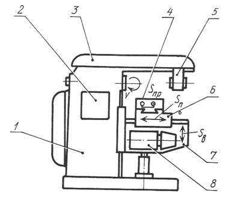
Рис. 11.2. Горизонтально-фрезерный станок:
Рис.11.3.
Вертикально-фрезерный станок:
1 – станина; 2 –
коробка скорости; 3 – поворотная шпиндельная головка;
4 –
шпиндель; 5 – стол; 6 – салазки; 7 – консоль; 8 – коробка подач.
12. Отделочные методы обработки деталей резанием
поверхности
Отделочная обработка со снятием стружки
Отделка поверхностей чистовыми резцами и
шлифовальными кругами
К этой группе методов
относятся:
Тонкое обтачивание
осуществляется при высоких скоростях резания, малых глубинах и подачах. Часто
используются токарные резцы с широкими режущими лезвиями, которые располагают
строго параллельно оси обрабатываемой заготовки. Подача на оборот заготовки
составляет 0,8 ширины лезвия, а глубина резания – не более 0,5 мм. Это приводит
к уменьшению шероховатости обрабатываемой поверхности.
Тонкое обтачивание
обеспечивает получение поверхностей правильной геометрической формы, с точным пространственным
расположением осей и параметрами шероховатости Ra=063–0,063 мкм; вместе с тем этот
метод высокопроизводителен.
При обтачивании деталей из
медных сплавов резцами, армированными алмазами или композиционными материалами,
с использованием шпиндельных головок с высокоточными подшипниками можно
получить параметр шероховатости Ra=0,032–0,02
мкм, при обработке деталей из алюминиевых сплавов и тех же условиях можно
обеспечить параметр шероховатости поверхности Ra=0,5–0,16 мкм.
Тонкое растачивание используется
в тех случаях, когда заготовки из вязких цветных сплавов либо стали, выполнены
тонкостенными. Тонкое растачивание целесообразно при точной обработке глухих
отверстий и тогда, когда по условиям работы детали не допускается внедрение
абразивных зерен в пары обработанной поверхности.
Тонкое шлифование производят
мягким мелкозернисты кругом при больших скоростях резания (vк>40 м/с) и
малой глубине резания. Шлифование сопровождается обильной подачей охлаждающей
жидкости. Особую роль играет жесткость станков, способных обеспечить
безвибрационную работу.
Рис. 12.1. Виды шлифовальных кругов
При этом широко используют
два основных метода круглого шлифования: в центрах и бесцентровое.
Рис. 12.2. Шлифование в центрах
Рис.
12.3. Бесцентровое шлифование
При
бесцентровом шлифовании используют два круга: шлифовальный (1) и ведущий (4).
Шлифовальный круг вращается со скоростью 30–40 м/с, а ведущий – со скоростью
примерно в 100 раз меньшей. Обрабатываемая деталь (2) опирается на нож (3) и
вращается ведущим кругом.
Смазочный материал состоит из смеси воска, парафина и керосина.
Полировальные круги
изготавливают из войлока, фетра, кожи,
капрона, спрессованной ткани и других материалов.
Процесс полирования
проводят на больших скоростях (до 50 м/с).
Рис. 12.4. Полирование кругами
Заготовка прижимается к
кругу усилием Р и совершает движения подачи Sпр и Sкр в соответствии с профилем обрабатываемой поверхности.
Рис. 12.5. Полирование лентами
Рис. 12.6. Абразивно-жидкостная отделка
Притирка (доводка) поверхностей
Поверхности деталей, обработанных на металлорежущих
станках, всегда имеют отклонения от правильных геометрических форм и заданных
размеров. Этим методом достигается наивысшая точность (1–2 квалитеты) и
наименьшая шероховатость поверхности (Rz=0,05–0,01 мкм).
Процесс осуществляется с помощью притиров
соответствующей геометрической формы.
Рис. 12.7. Различные виды притиров
На притир наносят притирочную пасту или мелкий
абразивный порошок со связующей жидкостью.
В процессе обработки притир или заготовка должна
совершать разнообразные движения. Наилучшие результаты дает процесс, в ходе
которого траектория движения каждого зерна абразивного порошка не повторяются.
Микронеровности сглаживаются за счет совокупного химико-механического
воздействия на поверхность заготовки.
Толщина жидкостного слоя между притиром и заготовкой
должна быть меньше высоты режущих абразивных зерен и определяется вязкостью
связующей жидкости. Если эта толщина оказывается больше высоты выступающих
зерен, то процесс притирки прекращается, т.к. зерна не будут соприкасаться с
обрабатываемой поверхностью.
В качестве абразива для притирочной смеси используют порошок электрокорунда, карбидов кремния и
бора, оксиды хрома и железа и др. Притирочные пасты состоят из абразивных
порошков и химически активных веществ, например олеиновой и стеариновой кислот,
играющих одновременно роль связующего материала.
Материалами притиров являются серый
чугун, бронза, красная медь. В качестве связующей жидкости используют машинное масло, керосин, стеарин, вазели.
Хонингование снижает отклонения формы и повышает
размерную точность, уменьшает параметр шероховатости поверхности, сохранят
микротвердость и структуру поверхностного слоя, создает специфический
микропрофиль обработанной поверхности в виде сетки.
Хонингованием обрабатывают детали из стали, чугуна и
цветных метало, преимущественно отверстия диаметром 6–1500 мм, длинной от 10 мм
до 20 м.
Отверстия могут быть сквозные, глухие, с гладкой и
прерывистой поверхностью, цилиндрические, конические и т.д.
Рис. 12.8. Хонингование
Поверхность неподвижной заготовки обрабатывают
мелкозернистыми абразивными брусками, которые закрепляются в хонинговальной
головке (хоне). Бруски вращаются и одновременно перемещаются
возвратно-поступательно вдоль оси обрабатываемого отверстия. Соотношение
скоростей v1:v2 указанных движений составляет 1,5–10 и определяет
условия резания.
Схема обработки по сравнению с внутренним шлифованием
имеет преимущества: отсутствует упругий отжим инструмента, реже наблюдается
вибрация, резание происходит более плавно.
При сочетании движений на обрабатываемой поверхности
появляется сетка микроскопических винтовых царапин – следов перемещения
абразивных зерен. Угол θ пересечения этих следов зависит от соотношения
скоростей.
Рис. 12.9. Следы перемещения зерен абразива
на детали
Абразивные бруски всегда контактируют с обрабатываемой
поверхностью, т.к. могут раздвигаться в радиальных направлениях механическими,
гидравлическими или пневматическими устройствами.
Хонингованием исправляют погрешности формы от
предыдущей обработки в виде отклонений от округлости, цилиндричности, конусности
и т.п. если общая толщина снимаемого слоя не превышает 0,01–0,2 мм. Погрешности
расположения оси отверстия (например отклонение от прямолинейности) этим
методом не исправляется, т.к. режущий инструмент самоустанавливается по
отверстию.
Хонингование производят при обильном охлаждении зоны
резная смазочно-охлаждающими жидкостями – керосином, смесью керосина и
веретенного масла.
Суперфиниширование – отделочный метод обработки
абразивными брусками.
Рис. 12.10. Отделка абразивными брусками
Для него характерны колебательные (осциллирующие)
движения и продольные подачи абразивных брусков или детали, постоянная сила
прижатия бруска к детали и малое давление в зоне обработки. Обработка
происходит без существенного изменения размеров и макрогеометрии поверхности.
Рис. 12.11. Отделка абразивными брусками: 1 –
абразивный брусок;
2 – смазочный материал; 3 – обрабатываемая
поверхность
По мере снятия вершин гребешков увеличивается
контактная поверхность, уменьшается давление брусков, стружка заполняет поры
брусков, режущая способность брусков снижается, процесс обработки прекращается.
Суперфинишированием можно обрабатывать цилиндрические,
конические, плоские и сферические поверхности деталей из закаленной стали, раже
из цветных металлов и сплавов. При этом шероховатость поверхности снижается до Ra=0,012–0,1 мкм, опорная поверхность увеличивается с
20–30 до 80–90%, удаляется дефектный слой.
Суперфиниширование не устраняет погрешности формы,
полученные на предшествующей обработке (волнистость, конусность, овальность).
Отделочно-зачистная обработка деталей
Отделочно-зачистную обработку деталей применяют для
снятия заусенцев, очистки, размерной и декоративной отделки поверхностей.
Заусенцы всегда сопутствуют процессу резания и представляют
собой излишки материала, располагающиеся на кромках и углах деталей. Они имеют
вид гребенок малой толщины. Как правило заусенцы образуются в результате сдвига
металла при выходе режущего инструмента из контакта с заготовкой.
Удаляют также шаржированные
частицы – внедренные в поверхность деталей абразивных или алмазных осколков
зерен в результате шлифования.
На многих деталях подлежат удалению масляные и жировые пленки, образующиеся после обработки резанием с применением
смазочно-охлаждающих жидкостей.
Полное удаление этих дефектов возможно только при
обработке электроискровым, лучевым, ультразвуковым и некоторыми другими
методами.
Различные методы удаления заусенцев применяют и в
конце технологического процесса:
– проточка фасок на деталях типа тел вращения на
станках токарной группы;
– удаление заусенцев, получение фасок на деталях в
виде корпусов, плат, планок (на фрезерных станках)4
– удаление заусенцев и нарушенных слоев металла после
штамповочных операций зачисткой на специальных зачистных штампах;
– снятие фасок на выходе отверстий зенковками или
сверлами и т.д.
Существуют еще два метода механической очистки и
зачистки поверхностей:
– дробеструйная обработка;
– галтовка.
Дробеструйная
обработка заключается в том, что
деталь помещают в камеру и подают на нее из сопла с помощью сжатого воздуха
металлический песок, дробь, металлические или пластмассовые шарики.
При галтовке
детали загружаются в барабан навалом. Барабаны вращаются вокруг оси. Режущим
инструментом служит абразивный бой, гранулированный абразив. В процессе
галтовки абразив и детали взаимодействуют, происходят многочисленные
соударения, скольжения и микрорезание поверхности.
Для операции полирования в галтовочные барабаны
загружают абразивные зерна, абразивные порошки, деревянные шары, обрезки кожи,
войлока, мелкие стальные полированные шарики.
Рис. 12.12. Галтовочный барабан
Обработка поверхности детали без снятия стружки
Методами обработки без снятия стружки получают только
те поверхности, которые будут сопрягаться с поверхностями других деталей.
Методы обработки основаны на использовании
пластических свойств металлов, т.е. способности металлических заготовок
принимать остаточные деформации без нарушения целостности металла. Отделочная
обработка методами пластического деформирования сопровождается упрочнением
поверхностного слоя, что повышает надежность работы деталей.
Поверхность заготовки принимает требуемые форму и
размеры в результате перераспределения элементарных объемов под воздействием
инструмента. Исходный объем заготовки остается постоянным.
К методам чистовой обработки пластическим
деформированием относятся:
– обкатывание и раскатывание поверхностей;
– алмазное выглаживание;
– калибровка отверстий;
– обкатывание зубчатых колес;
– вибронакатывание;
– дробеструйная упрочняющая обработка.
Суть этих методов сводится к обработке поверхностей
деталей специальными приспособлениями, рабочими инструментами которых являются
ролики, шарики, алмазные выглаживатели и т.д., которые с определенной скоростью
и под большим усилием перемещается по поверхности детали.
Твердость инструмента значительно выше твердости
материала детали.
Рис. 12.13. Обкатывание и раскатывание
поверхности
Рис. 12.14. Калибровка отверстий
Рис. 12.15. Вибронакатывание
13. Изготовление деталей РЭС из пластмасс
Технические свойства пластмасс
Пластмассами называются материалы, полученные на
основе естественных и синтетических высокомолекулярных соединений (полимеров),
способные вследствие своей пластичности принимать необходимую форму под воздействием
тепла и давления.
По технологической классификации пластмассы
подразделяются на термореактивные пластмассы и термопластичные пластмассы.
Термореактивные пластмассы под действием тепла и
давления размягчаются, заполняют пресс-форму и переходят в неплавкое и
нерастворимое состояние. Материал изделия становится необратимым, т.е. при
повторном нагреве он в пластическое состояние не возвращается. Допускают
разгрузки пресс-форм в нагретом состоянии. К ним относятся: фенолформальдегид,
селиконопласты, и т.д.
Термопластичные пластмассы под действием тепла и
давления приобретают текучесть, заполняя пресс-форму, после охлаждения
отвердевают, но не переходят в неплавкое и нерастворимое состояние. При
повторном нагреве они возвращаются в пластическое состояние (полистирол,
полиэтилен, полиуретан и т.д.) разгрузка пресс-форм может производиться только
после охлаждения.
По способу переработки пластмассы могут быть разделены
на следующие группы:
1.
Термореактивные
пресс-порошки и пресс-материалы горячего прессования;
2.
Термораеактивные
пресс-порошки и пресс-материалы холодного прессования;
3.
Термопластические
порошки;
4.
Жидкие литьевые
термореактивные смолы;
5.
Листовые и
фасонные слоистые материалы;
6.
Пленочные
материалы – стирофлекс, эфироцеллюлозные пленки и др.
Для выбора рационально способа изготовления изделий из
пластмасс, необходимо знание их технологических свойств. Такими свойствами
пластмасс являются: удельный объем, текучесть, скорость отвердевания,
летучесть, усадка.
Удельный объем пресс-материала рассчитывается в см3/г
или м3/кг. Знание удельного объема необходимо для определения объема
пресс-формы.
Текучесть пресс-материала – способность материала
заполнять пресс-форму под давлением при определенной температуре: определяется
в мг/с. Чем меньше текучесть пресс-материала, тем больше должно быть давление
прессования и наоборот.
Скорость отвердевания – характеризует
продолжительность перехода пластмассы из пластического состояния в твердое. Она
выражается в секундах или минутах на 1 мм толщины образца (с/мм).
Летучесть – (содержание летучих веществ и влаги) –
определяется по разнице в весе до и после высушивания пресс-материала в
термостате при температуре (103–105)ºС в течении 30мин; определяется в % и
колеблется в различных материалах 1,5–5%. Содержание летучих веществ вредно,
увеличивает усадку, вызывает коробление, трещины и вздутия, снижает
электроизоляционные и радиотехнические свойства пластмасс.
Усадка – характеризует уменьшение размеров детали с
момента излечении ее из нагретой пресс-формы до полного остывания. Исчисляется
в процентах по формуле:
Y= (a–b)/b∙100%, (13.1)
где
а – размер гнезда пресс-формы при температуре прессования; b – размер изделия при температуре равной 20ºС.
Технологические процессы изготовления деталей из
пластмасс
В настоящее время известно значительно число способов
формирования пластмассовых изделий, которые применяют в зависимости от их
конструкций, типа и размеров, технически требований, предъявляемых к
использованию изделий. Наиболее распространенными являются:
– прессование, применяемое для переработки
термореактивных пластмасс (реактопластов);
– литье под давлением – для обработки термопластичных
материалов (термопластов);
– формование – предание необходимой формы листовым
термопластичным материалам.
Сущность всех этих способов обработки заключается в
том, что исходное сырье подвергается обработке в специальных формах, которые
называются пресс-формами, под давлением при соответствующем нагреве в процессе
формирования формообразования или после него.
Построение типового технологического процесса зависит
от конструкций и назначения детали. При выборе операций и переходов решаются
следующий вопросы:
1. Подбор и дозировка компонентов: полимер,
стабилизатор, пластификатор, краситель, инициатор, парообразователь и др.;
2. Образование исходного материала (пластмассы):
смешение; гранулирование; растворение и т.д.;
3. Изготовление изделия (переработка материала):
прессование, литье под давлением, выдувание, напыление, окунание и т.д.;
4. Доработка изделия: декоративная отделка, термообработка,
механическая обработка и т.д.
Приемы и методы подбора, дозировки компонентов и
образования исходного материала пластмассы рассматриваться не будут. Рассмотрим
основные способы переработки пластмасс в изделия.
Технологически процесс прессования заключается в том,
что под влиянием нагрева и давления пресс-материал заполняет рабочее
пространство пресс-формы и полимеризуется в твердое состояние.
Прессование подразделяется на горячее, холодное и
литьевое.
Горячее прессование термореактивных пластмасс
применяется для изготовления деталей простой формы с ограниченным количеством
арматуры или без нее.
Рис. 13.1. Прессование пластмасс
Пресс-материал в виде таблеток или порошка загружается
непосредственно в формообразующую полость горячей пресс-формы, после чего
подвергается давлению пресса. Нагретый пресс-материал размягчается, заполняет
гнезда пресс-формы и остается в ней определенное время до полного
затвердевания. После этого пресс-форму открывают и извлекают отформованную
деталь. Скорость отвердевания термореактивного материала зависит от его марки и
температуры прессования. Для большинства термореактивных пластмасс температура
прессования изменяется от 130 до 180º С. Время выдержки для отвердевания
для разных пластмасс устанавливается в пределах 0,5–2,5 мин на 1 мм наибольшей
толщины изделия.
Удельные давление для различных пластмасс изменяются в
пределах от 10 до 40 МН/м2 (МПа).
Холодное прессование состоит в том, что пресс-порошок
загружают в холодную пресс-форму, подвергают сжатию при высоких удельных
давлениях 60–120МН/м2 и выдерживают под таким давлением в
течении 5–15 с.
Затем заготовки извлекаются из пресс-формы и
запекаются в термостате при температуре 150–170º С для полимеризации
связующего вещества. При холодном прессовании значительно увеличивается
производительность труда, но качество изделий хуже, поверхность – матовая. Этот
метод не применим для изделий сложной формы.
Литьевое прессование применяется для изготовления
изделий сложной конфигурации из термореактивных пластмасс. Отличием литьевого
прессования является наличие в конструкции пресс-формы дополнительной
загрузочной камеры, которая соединяется с матрицей тонким литниковым каналом.
Рис. 13.2. Литьевое прессование
Пластмассу (1) помещают в загрузочную камеру (2). Там
она нагревается от стенок загрузочной камеры, переходит в вязко-текучее
состояние и под воздействием усилия пуансона (3) через литниковую систему (4)
поступает в оформляющую разъемную полость матрицы (5). Сечение литниковых
каналов мало и материал поступает в плоскость и с большой скоростью в
полужидком состоянии. Температура нагрева материала находится в пределах от
140º С до 170º С. Давление в загрузочной камере – 50–200 МН/м2
(МПа). Особенностями литьевого прессования является возможность получения в
деталях глубоких отверстий малого диаметра, высокая точность деталей и
возможность заформовывать в изделия тонкую арматуру.
Недостатки: сложная и дорогостоящая пресс-форма и
большой расход материала (на литники).
Применяется для изготовления сложных деталей из
термопластических масс с большим количеством арматуры и сложной конфигурации.
Оно производится на специальных машинах, которые называются инжекционными.
Рис. 13.3. Литье пластмасс под давлением
В бункер (1) загружают гранулированную пластмассу,
откуда через дозирующее устройство (2) гранулы в требуемом объеме для одного
впрыска поступают в цилиндр (4) с нагревательным устройством (5). Температура
пластмассы в цилиндре повышается от начальной на входе до заданной
технологическим режимом (185–280º С) на выходе. Пуансон (3) впрыскивает
расплавленную пресс-массу в охлаждаемую водой пресс-форму (6) t=30–40ºC при
давлении 20 МПа. Из-за того, что температура пресс-формы ниже температуры
впрыснутой в нее пресс-массы отливка быстро охлаждается, и затвердевает,
уменьшаясь в объеме.
В полости пресс-формы образуется незанятый объем,
поэтому для заполнения всего объема, а также для сохранения впрыснутой
пластмассы плунжером (3) поддерживается давление с учетом времени, определяющим
отвердение отливки в пресс-форме. После такой выдержки плунжер (3) отходит
вправо и из загрузочного бункера (1) в цилиндр (4) поступает новая порция
пресс-материала. Цикл повторяется.
После требуемой выдержки для охлаждения отлитой детали
половинки формы раскрываются и деталь удаляется.
Весь цикл обработки производится автоматически.
Поэтому данный способ изготовления пластмассовых изделий является одним из
самых производительных. Удельное давление при литье термопластов в зависимости
от марки материала применяется в пределах от 50 до 300 МН/м2.
Изделие извлекается из формы после охлаждения до 40–60º С.
Выдержка изделия в форме не превышает 40–50 с.
Этим способом изготавливают детали из листовых
термопластических материалов. Сущность процесса состоит в том, что разогретый
лист материала приобретает форму матрицы под действием избыточного давления или
под влиянием вакуума.
Вакуумный способ применяется для глубокой вытяжки
защитных колпачков, кожухов и др. деталей.
Рис. 13.4. Пневматическое формование
Литьевая заготовка (4) закрепляется на отбортовке
верхнего фланца (2) прижимным кольцом (6).
При включении вакуумного насоса через штуцер (7) в
цилиндре (2) создается разряжение и листовая заготовка, нагреваемая горячим
воздухом из рассеивателей (5) под действием атмосферного давления вытягивается.
Процесс вытягивания продолжается до момента
соприкосновения стенки изготавливаемого изделия с электрическим контактным
выключателем (8). При срабатывании выключателя отключается вакуумный насос и
давление в цилиндре повышается до атмосферного.
Помещая в цилиндр формы различного профиля, можно
изготавливать изделия со сложной кривизной поверхности.
Основные требования к конструкциям деталей из
пластмасс
Конструкции деталей из пластмасс требуют тщательного
согласования с методом их изготовления. Не выполнение требований
технологичности приводит к изготовлению сложных и дорогих пресс-форм, качество
детали снижается, а расход материала увеличивается. Наиболее общие требования к
конструкции пластмассовых деталей, получаемых прессованием и литьем под
давлением можно сформулировать следующим образом:
1. Кромки и углы детали должны быть закреплены, это
улучшает стойкость деталей пресс-формы облегчает оформление этих элементов;
2. Толщина стенок деталей должна быть равномерной без
резких переходов для исключения коробления и трещин;
3. По линиям съема детали должны иметь уклоны для
облегчения выемки из пресс-формы;
4. Отверстия, выступы и впадины должны совпадать с
направлением разъема пресс-формы;
5. Различные знаки на деталях следует делать
выпуклыми;
6. Арматура должна иметь геометрию, исключающую ее
смещение во всех направлениях. Толщина слоя пластмассы, покрывающей арматуру,
должна быть достаточной, чтобы не появлялись трещины при остывании.
14. Технология изготовления деталей из керамики
Основными
этапами изготовления деталей из керамики являются:
–
химический анализ и подготовка исходного керамического сырья;
–
тонкий помол и смешивание компонентов;
–
формование заготовки изделия;
–
механическая обработка необожженных заготовок;
–
сушка заготовок;
–
обжиг (предварительный и окончательный);
–
глазурование;
После обжига в ряде случаев приходится применять
механическую обработку. При изготовлении ряда керамических деталей некоторый из
этих этапов могут отсутствовать или находиться в другой последовательности.
Химический анализ и подготовка керамического
сырья
От качества исходных компонентов существенно зависят
свойства керамики и их воспроизводимость. Поэтому необходимо тщательно
контролировать и регулировать физико-химические свойства используемых
материалов. Однородные по составу сырьевые материалы получить трудно. Поэтому в
процессе контроля устанавливается содержание различных примесей, которые не
должны превышать установленного предела. После этого следует очистка сырья от
различных загрязнение, железистых включений и других примесей. Органические
примеси удаляются с помощью предварительного обжига.
В качестве основных сырьевых материалов для
изготовления дешевых керамических изделий электронной техники, к
электрофизическим параметрам которых предъявляются не высокие требования,
используются традиционные материалы
(глина, каолин и др.). К ним применяют упрощенные способы очистки для
удаления загрязнений, попадающих в массу при технологической переработке
(промывка раствором соляной кислоты, электромагнитная сепарация, водная
промывка, гидравлическая сепарация тяжелыми жидкостями, флотационное
обогащение).
Основные исходные компоненты, предназначенные для изготовления
ответственных изделий ЭТ, представляют собой химические реактивы высокой
чистоты (окись циркония, кварцу, окись титана, различные карбиды металлов IV и VI групп и
т.д.). Основное требование к ним – стабильность химического состава и
стабильность физико-химического состояния. В большинстве случаев поставляемые
материалы не соответствуют требованиям керамического производства. Поэтому в
технологии керамического производства в этих случаях включают процессы
предварительной термообработки исходных материалов (прокаливание до
определенных температур, иногда плавление) и эффективны методы точного
измельчения.
Затем сырье подвергают грубому дроблению вначале на
гинековых или валковых дробилках, а затем на бегунах с подвижным поддоном. При
этом производится обработка каждого отдельного компонента (каолин, кварц,
тальк, окись циркония, глина, мрамор и т.д.).
Рис. 14.1. Бегуны для грубого дробления керамического сырья
Далее следует просеивание материала через сито и
очистка фракций от металлических частиц.
Рис. 14.2. Установка для магнитной сепарации сухого керамического порошка: 1 – бункер; 2 – вращающийся цилиндр из железа; 3 – бункер для очищенного порошка; 4 – наконечник для электромагнита; 5 – бункер для ферромагнитных примесей
Тонкий помол и смешивание компонентов
Измельчение и одновременное смешивание материалов, в
заданных пропорциях производится на вибрационных мельницах. Длительность цикла
составляет 30–90 мин. Помол производится с добавкой воды. В бак загружаются
материалы и фарфоровые шары диаметром от 20 до 70 мм.
При вибрации шары перемещаются, перетирая массу,
которая при этом перемешивается.
Величина частиц материала после такого помола не
превышает 1 мкм.
После помола образовавшаяся жидкая масса – называемая
шликер – пропускается через магнитный сепаратор для удаления железистых
включений и через сито (900–1600 отв/см2) для удаления прочих
механических примесей.
Очищенный шликер подвергается уплотнению с целью
удаления излишков воды и пузырьков воздуха. Влажность массы шликера доводиться
до 22–25%.
Осуществляется одним из следующих способов: сухим
прессованием, пластичным прессованием (штамповкой), выдавливанием через
мундштук, горячим литьем под давлением.
Сухое прессование применяется для изготовления изделий,
относительно большой толщины с незначительными выступами и впадинами (заготовки
керамических конденсаторов). Заготовки из влажного шликера высушивают в
сушильных шкафах или токами высокой частоты до влажности 4–5%. Затем
производится их размельчение и просеивание через сито (64–81 отв/см2).
В полученный порошок вводится пластификатор – парафин или водный раствор
поливинилового спирта. Массу формуют в металлических пресс-формах на
гидравлических или пневматических прессах.
Пластическое прессование (штамповка) применяется,
главным образом для изготовления установочных деталей малых размеров, сложной
конфигурации и небольшой толщины. Подготовка массы производится также, как и
при сухом прессовании. В качестве связки применяется древесная смола или керосин.
Влажность порошка доводится до такой степени, при которой давление при
штамповке может вызвать некоторую его текучесть. При этом используются
высокопроизводительные эксцентриковые прессы. Однако детали после обжига
получают большую усадку и пористость.
Выдавливание через мундштук применяется для получения
керамических деталей удельной формы – трубок, стержней, колодок. Керамическая
масса в этом случае должна содержать от 20 до 25% влаги. Для повышения
пластичности в неё добавляют декстрин и тунговое масло. Все это многократно
пропускается через мешалку для получения однородной массы. Затем масса
загружается в мундштучный пресс.
Рис. 14.3. Выдавливание через мундштук: 1 – поршень; 2 – стенка
цилиндра;
3 – керамическая масса; 4 – мундштук; 5 – стержень, выдавливаемый из
мундштука
В пустотелый цилиндр загружается керамическая масса.
Под действием приложенной силы поршень выжимает массу через мундштук. При этом
получается сплошной стержень. Если же будет установлена рамка с сердечником, то
получиться трубка.
Горячее литье под давлением позволяет изготавливать
детали повышенной точности и сложной формы (например каркасы катушек). По этому
способу суспензия керамического материала со связкой (воск+парафин+олеиновая
кислота) разогреваются до 60–100º С и под давлением подается в
металлическую форму, из которой после охлаждения извлекается готовая заготовка.
Механическая обработка необожженных заготовок
Керамические изделия после формовки могут не
соответствовать чертежам детали по форме и размерам. Для придания
соответствующей формы заготовкам используется механическая доработка. Она
выполняется на токарных, фрезерных, сверлильных и других станках. При этом
применяется режущий инструмент с наконечниками из сверхтвердых сплавов, так как
необожженная керамическая масса обладает абразивными свойствами.
Сушка заготовок из керамической массы производиться
для удаления влаги и понижения содержания пластификатора и связки.
Применяют следующие виду сушки: естественная воздушная
сушка, горячая сушка в сушильных шкафах, сушка токами высокой и промышленной
частоты.
При воздушной сушке заготовки выдерживаются в
сушильных шкафах при t=18–22º С
в течении 10–25 суток.
При горячей сушке в сушильном шкафу или камере
заготовка постепенно нагревается до 70º С и выдерживается там необходимое
время (10–15 часов).
Сушка токами промышленной частоты состоит в
пропускании электрического тока по заготовке. В результате выделяющегося тепла
производится нагрев и обезвоживание материала.
Сушка токами высокой частоты применяется для заготовок
любой формы. Суть процесса состоит в следующем: заготовки размещаются между
обкладками контурного конденсатора генератора высокой частоты (5–10 МГц) и
нагревают электрическим полем тем сильнее, чем выше влажность его участков.
После сушки заготовки пропитывают горячим парафином
(90–110º С) и подвергают дополнительной механической обработке.
Один из самых ответственных этапов изготовления
керамических изделий, который определяет в основном качество деталей.
Обжиг производится в два этапа: предварительный и
окончательный.
Предварительный обжиг производится при t=800–1000º C в
электрических печах непрерывного действия. В процессе предварительного обжига
из керамической массы удаляется связка и изделия приобретают необходимую
механическую прочность.
Затем осуществляется окончательный обжиг при t=1250–1450º C. Окончательный обжиг обеспечивает спекание
керамической массы – часть компонентов расплавляется, пропитывая всю массу
изделия, при этом в ее среде происходят реакции растворения и образования новых
соединений.
В процессе охлаждения обожженных деталей масса
затвердевает. Режим охлаждения должен быть равномерным для устранения
возможного растрескивания изделия.
Для каждой керамической массы температурные режимы и
выдержка подбираются экспериментально. Правильно обожженные изделия имеют
ровный бледно-желтый оттенок. Недожженные изделия имеют белый цвет.
Если к изделию предъявляются повышенные требования в
отношении точности, то оно подвергается после обжига окончательной механической
обработке – шлифованию, сверлению, резанию. Точность обработки составляет ±0,01
мм.
Глазурование или покрытие керамических деталей
глазурями позволяет защитить их поверхность от загрязнения, повысить
электрическое поверхностное сопротивление и придать деталям красивый внешний
вид. Глазури изготавливаются из материалов, близких по составу к керамическим
массам, с добавкой стеклообразующих веществ. Глазури бывают тугоплавкие и
легкоплавкие. Тугоплавкие глазури имеют температуру плавления в интервале
1200–1450º С. Они наносятся на керамические изделия непосредственно после
формирования изделия и сушки, если в керамической массе отсутствует связка или
после предварительного или окончательного обжига, когда удалены все виды органических
связок. Легкоплавкие глазури имеют температуру плавления в интервале от 600 до
1000º С и наносятся только после обжига изделия.
Глазури наносятся на изделия погружением или
пульверизацией с использованием механической смеси тонкодисперсного порошка и
воды.
Температурный коэффициент линейного расширения глазури подбирается близким по величине к коэффициенту линейного расширения керамики, благодаря чему предотвращается появление трещин на глазурованной поверхности.
15. Изготовление деталей из металлокерамических порошков
Технологические методы получения изделий из порошковых материалов
Эти методы обозначают общим термином — «порошковая металлургия». Методами порошковой металлургии получают изделия из металлических и неметаллических порошковых материалов. Это сравнительно новый и перспективный способ изготовления изделий. Наряду с высокой точностью изделий и малыми отходами материалов порошковая металлургия позволяет получать изделия с особыми физикохимическими свойствами, изготовление которых другими способами невозможно.
Технология производства изделий из порошков включает в себя процесс получения порошковых материалов, составление и дозирование композиций из порошков, формование изделий, спекание и отделочные операции.
Порошки получают размолом, дроблением твёрдых материалов, распылением расплавленных веществ газом, распылением плазменной струёй и др. Применяют также физико-химические способы производства порошков: электролиз солей, восстановление из оксидов газообразными и твёрдыми восстановителями.
Смешанные композиции порошковых материалов дозируют по массе и формуют в пресс-формах (рис. 4.38) на гидравлических прессах. Под действием усилия объём порошкового материала уменьшается, а плотность возрастает за счёт уменьшения пустот между частицами. Прочность отформованного изделия невелика, так как определяется силами механического сцепления. Кроме формования на прессах, применяют вибрационное, гидростатическое уплотнение, а также прокатку.
Рис. 15.1. Схема формовки изделий из порошковых материалов:
1 — формуемый материал; 2 — матрица; 3 — пуансон; 4 — выталкиватель
С целью повышения прочности отформованные изделия подвергают спеканию при высокой температуре в вакууме или защитной атмосфере для предотвращения окисления. В процессе спекания происходит взаимная диффузия атомов соседних твёрдых частиц, и материал приобретает достаточно высокую механическую прочность. После формования и спекания изделия иногда подвергают отделочной обработке: калибровке, повторному спеканию, термической обработке.
Кроме заготовок малонагруженных деталей машин из порошков получают изделия с особыми свойствами:
• твёрдые инструментальные сплавы, то есть отформованные и спечённые смеси карбидов вольфрама, титана, тантала с кобальтом как связующим компонентом;
• изделия антифрикционного назначения из меднографитовых, железографитовых и других композиций, имеющие малый коэффициент трения и способные работать даже без смазки;
• фрикционные накладки и другие детали, в состав которых, кроме металлов, могут входить асбест, кварцевый песок, тугоплавкие оксидыи т. п.;
• фильтры с заданной пористостью и различной степенью очистки, в том числе для агрессивных жидкостей;
• магнитные металлокерамические материалы.
Методы порошковой металлургии находят широкое применение при получении композиционных материалов. Композиционный материал обычно имеет металлическую основу с дополнительными армирующими компонентами в виде оксидов, волокон карбида кремния, бора, углерода и др. Композиционные материалы обладают высокой прочностью при малой массе, успешно работают в несущих конструкциях летательных аппаратов, используются при изготовлении протезов, средств защиты человека и находят всё большее применение в технике.
Дальнейшее развитие порошковой металлургии позволит получать материалы с разнообразными свойствами для изделий широкого назначения.
Производство деталей из металлокерамических порошков
Для удовлетворения требований развивающейся техники необходимы материалы, обладающие очень высокой твердостью, износостойкостью, жаропрочностью, жаростойкостью и другими исключительными свойствами. Создать такие материалы можно только на основе сплавов, так как у отдельных материалов сочетание таких свойств, как правило, не встречается. Например, химическое соединение вольфрама с углеродом — карбид вольфрама WC имеет высочайшие твердость, износостойкость и жаропрочность, но повышенную хрупкость. Хорошей вязкостью обладает кобальт Со. Температура плавления карбида вольфрама 2870 °С, а кобальта 1400 °С. Обычными методами создать сплав WC—Со нельзя. Такие сплавы получают методом порошковой металлургии. Образующиеся сплавы называют металлокерамическими, подчеркивая, что технология их изготовления аналогична производству изделий из керамики. Так были получены твердые металлокерамические материалы для обработки металлов резанием, для бурения горных пород, которые произвели существенные изменения в этих областях.
Порошковая металлургия позволяет создавать сплавы любого состава из металлических или смеси металлических и неметаллических порошков, которые практически взаимно не растворяются при плавлении или могут разлагаться при высоких температурах. Например, железо и свинец, алюминий и никель, медь и графит, металлы и оксиды, металлы и бориды и др. Методом порошковой металлургии можно получить сплавы с заранее заданными свойствами. Использование этого метода обеспечивает значительное снижение потерь металла.
Производство изделий из вольфрама и тантала, которые обладают высокой температурой плавления, осуществляется преимущественно методами порошковой металлургии. Порошковая металлургия позволяет изготовить некоторые конструкционные детали (кулачки, втулки и др.) без последующей механической обработки.
Изделия из металлокерамических сплавов нашли применение для металлорежущего инструмента, для волок и фильер при производстве проволоки, для подшипников скольжения и тормозных устройств, для металлических фильтров, для постоянных магнитов, электрощеток, электроконтактов, нагревателей электропечей и др.
К недостаткам порошковой металлургии следует отнести высокую стоимость металлических порошков, значительные расходы на изготовление пресс-форм и другой оснастки, низкие показатели вязкости и пластичности.
Способы производства металлических порошков
Существуют следующие основные способы получения металлических порошков: восстановление металлов из их оксидов или солей; электролитическое осаждение; распыление струи расплавленного металла; термическая диссоциация; механическое дробление.
Способ восстановления металлов наиболее распространен. Процесс восстановления может быть представлен следующим уравнением:
где MeO— оксид металла; X — восстановитель; п и т — стехиометрические коэффициенты.
Оксиды или соли металлов получаются при переработке рудных ископаемых. Восстановителями служат газы (водород, природный газ и др.) и твердые вещества (сажа, кокс, щелочные металлы и др.). Для получения чистых металлических порошков используют водород. При восстановлении металлов газом или твердым веществом, содержащим углерод, одновременно с восстановлением происходит науглероживание, и порошок получается загрязненный карбидами. Для получения дешевого железного порошка технической чистоты с содержанием железа до 98,5% используют следующий метод. В тигли последовательно слоями загружают измельченную железную руду и термоштыб (отходы при добыче каменного угля). Закрытые тигли поступают в туннельную печь, где поддерживается температура 1150—1200 °С. При прохождении через печь происходит восстановление железа, которое затем очищается от остатков восстановителя, пустой породы и подвергается механическому дроблению.
Способом восстановления получают порошки из любых металлов, в том числе и тугоплавких (железо, вольфрам, тантал, молибден, ниобий, кобальт, медь, никель, титан, цирконий, бериллий, ванадий и др.).
Способом электролитического осаждения можно получить порошки почти всех металлов. При электролизе из раствора на катоде получается осадок в виде плотного или рыхлого слоя, чешуек, кристаллов. Качество осадка зависит от плотности тока, температуры и концентрации электролита. Осадок счищается с катода и измельчается в порошок механическим путем. Рыхлые осадки в процессе электролиза осыпаются с катода на дно ванны и последующего дробления не требуют. Получающиеся порошки характеризуются высокой чистотой и сравнительно большой стоимостью. В процессе электролиза порошок адсорбирует водород, в результате чего повышается хрупкость металла, для устранения которой производят отжиг порошка в нейтральной среде или вакууме.
Рис. 15.2.Схема получения порошка распылением струи расплавленного металла:
1 — жидкий металл; 2 — трубопровод для подачи сжатого воздуха; 3 — охлаждающая вода; 4 — порошок
Способ получения порошков путем распыления струи расплавленного металла (рис. 15.2) используют главным образом для легкоплавких металлов (олово, свинец, цинк, алюминий, медь), а также для получения порошков железа, никеля и других металлов с температурой плавления около 1500 °С. Этот способ достаточно производителен. Недостаток способа — возможность окисления частиц порошка. Во избежание этого рекомендуется восстановительная или инертная среда.
При термической диссоциации используют летучие химические соединения — карбонилы, иодиды, галоиды и др. Для получения порошков железа применяют карбонилы, которые образуются при воздействии на железо оксида углерода при давлении 18—20 МПа и температуре около 200 °С:
Карбонил выводят из реакции и нагревают до температуры 350—500 °С при атмосферном давлении; в этих условиях соединение разлагается с образованием мелкодисперсного железного порошка. Затем порошок подвергают отжигу для удаления примесей. Этим способом получают порошки большой чистоты. Такие порошки имеют высокую стоимость в результате больших материальных и энергетических затрат.
При механическом дроблении металлов в порошки используют шаровые, вибрационные и вихревые мельницы. Шаровая мельница представляет собой барабан, внутри которого помещены шары из закаленной стали или твердых сплавов. Металл в виде мелких кусков, стружки засыпают в барабан, который приводится во вращение (30—120 об/мин), при этом происходит дробление материала за счет соударения шаров и ударов последних о барабан.
В вибрационной мельнице барабану и шарам сообщаются колебания с амплитудой 2—3 мм при частоте, равной частоте вращения барабана (1500—3000 об/мин). Колебания осуществляются с помощью вибратора в виде эксцентрикового вала, соединенного с электродвигателем через упругую муфту.
Вихревая мельница состоит из закрытого корпуса, внутри которого с большой скоростью вращаются в противоположных направлениях два пропеллера. Кусочки проволоки, подаваемые в рабочую камеру, увлекаются вихревыми потоками, которые создаются пропеллерами, и при ударе друг о друга измельчаются. Так как частички при этом нагреваются, в рабочей камере во избежание окисления должна быть инертная или восстановительная атмосфера. Вихревые мельницы можно использовать для измельчения любых металлов и сплавов.
Ввиду невысокой производительности способа механического дробления получаемые порошки имеют более высокую стоимость по сравнению с порошками, изготовленными другими способами. Наиболее дешевые порошки, изготовленные методом распыления расплавленного металла.
Технологический процесс изготовления изделий из металлических порошков
В порошковой металлургии используют порошки, имеющие размеры частиц в пределах 0,1 мкм — 0,5 мм. Гранулометрический состав определяют с помощью набора сит, имеющих различное число отверстий на единице площади.
Порошки характеризуются не только размером частиц, но и их формой. Различают осколочную, плоскую, тарельчатую, дендритную и сферическую формы. Форма частиц определяется способом и условиями изготовления порошка. При методах восстановления и механическом дроблении получаются частицы осколочной формы, при распылении и термической диссоциации — сферической и т. д.
С формой и размерами частиц тесно связана удельная поверхность — отношение площади поверхности частиц к их массе. Удельная поверхность имеет особое значении для оценки взаимодействия различных порошков.
Для процесса изготовления изделий важное значении имеют такие свойства, как текучесть и прессуемостьпорошков. Текучесть определяется как количество порошка, протекающего в единицу времени через установленное отверстие. Этот показатель особенно важен для автоматизированного производства. Прессуемость определяется экспериментально и показывает способность порошка к уплотнению и сцеплению частиц.
Технологический процесс изготовления изделий из металлических порошков состоит из следующих операций: подготовка смеси для формования, формование заготовок или изделий, спекание заготовок или изделий.
Подготовка смеси заключается в перемешивании порошков металлов, химических соединений и введении в ряде случаев пластификаторов. Пластификаторы в виде растворов различных органических соединений (парафин, стеарин, каучук и др.) вводят для улучшения прессу- емости порошков. Для растворов используют летучие растворители, которые удаляются из смеси при сушке.
В результате операции подготовки исходные компоненты должны быть равномерно распределены по всему объему смеси. Смешивание происходит во вращающихся барабанах, в корпусных смесителях или в смесителях типа «пьяной бочки».
Формование заготовок или изделий из металлических порошков осуществляется путем холодного прессования в металлических формах, мундштучного или гидростатического прессования, холодной прокаткой и шликерным литьем.
Схема прессования в металлической форме приведена на рис. 15.3. Холодное прессование порошков осуществляется под большим давлением (30—1000 МПа). Нижний предел давления используется для мягких металлов и сплавов. Плотность отпрессованного изделия зависит главным образом от давления, свойств металлического порошка и отношения высоты изделия к диаметру. Но даже при очень высоких давлениях за счет пористости не удается получить компактного металла. Одним из недостатков прессования в металлических формах является неравномерная плотность изделий по высоте и сечению, что объясняется влиянием сил трения зерен порошка о стенки пресс-формы. Для уменьшения неоднородности свойств используют двустороннее прессование (рис. 15.3, б), а для деталей сложной формы — прессование с несколькими пуансонами с независимым перемещением. Прессованием получают небольшие изделия с массой не более 1,5 кг.
Для получения изделий с большим отношением длины к диаметру применяют мундштучное прессование или прессование выдавливанием (рис. 15.3). При этом виде прессования в смесь добавляют пластификатор в количестве 10 %, получая пластичную массу.
Рис. 15.3. Схема прессования в металлической форме:
а — одностороннее; б — двустороннее; 1 — пуансон; 2 — матрица; 3 — порошок; 4 — вкладыш; 5 — второй пуансон
Рис. 15.4. Схема мундштучного прессования:
1 — пуансон; 2 — контейнер; 3 — порошок: 4 — матрица
Пластичная масса выдавливается через матрицу, которая может быть любой сложности. С применением иглы можно получить полые профили. Изделия, получаемые мундштучным прессованием, имеют равномерную плотность, их длина может достигать 300 мм.
Гидростатическое прессование используют для изготовления заготовок с большой массой (рис. 15.5). Металлический порошок засыпают в герметичную эластичную (обычно резиновую) оболочку, которую помещают в цилиндр высокого давления, где подвергают всестороннему сжатию жидкостью. Для получения заготовок с массой до 0,5 т и длиной до 1 м резиновую оболочку помещают в перфорированную металлическую гильзу. Давление жидкости при этом способе составляет 80—3000 МПа.
При гидростатическом прессовании не требуются дорогостоящие пресс-формы, достигается равномерное и всестороннее сжатие порошка, что обеспечивает однородную плотность заготовок или изделий. Для достижения точных размеров заготовки должны подвергаться дополнительной обработке.
Холодной прокаткой из порошков получают лепту, листы, различные профильные и многослойные материалы. Схема прокатки ленты приведена на рис. 15.5. Из бункера 1 порошок 2 под действием силы тяжести поступает в пространство между валиками и обжимается ими, при этом объем порошка уменьшается в несколько раз. Обычно толщина прокатываемой ленты составляет 1 % диаметра валка. Прокатка порошков осуществляется при небольшой скорости вращения валков в пределах 0,5—50 об/мин. Валки обычно располагаются в горизонтальной плоскости; при расположении последних в вертикальной плоскости требуется приспособление для подачи порошка в виде наклонного желоба или шнека. Прокаткой можно получать двух- и трехслойные ленты из различных материалов. Процесс прокатки поддается полной автоматизации и поэтому находит применение для переработки порошков радиоактивных материалов.
Рис. 15.5. Схема гидростатического прессования:
1 — цилиндр высокого давления; 2 — эластичная оболочка; 3 — порошок; 4 — жидкость; 5 — трубопровод к насосу высокого давления
Рис. 15.6. Схема прокатки порошка:
1 — бункер; 2 — порошок; 3 — валки; 4 — направляющая; 5 ролики; 6 прокатанная лента
Шликерное литье используют для изготовления изделий небольших размеров сложной формы. Шликер представляет собой смесь металлического порошка с жидкостью (вода, расплавленный парафин и др.). Основная часть жидкости легко удаляется после литья в форму под давлением. Для полного удаления жидкости проводят нагрев изделия в вакууме.
Спекание — весьма ответственная операция технологического процесса. В результате спекания отформованные заготовки и изделия приобретают требуемые физикомеханические свойства.
При спекании происходят сложные физические и физико-химические процессы — раскристаллизация, диффузия, самодиффузия, восстановление поверхностных оксидов и др. Механическая связь между частицами, образовавшаяся в процессе формования, заменяется межатомной, за счет чего изделие приобретает необходимую прочность. В процессе спекания происходит усадка, уменьшается пористость и возрастает плотность материала.
Спекание изделий из однородных металлических порошков происходит при температуре, составляющей 70— 90 % температуры плавления металла. Например, температура спекания изделий из медного порошка 840— 890 С.
Спекание изделий из смеси нескольких металлических порошков можно производить в твердой фазе или при наличии твердой и жидкой фаз. В первом случае температура спекания несколько ниже температуры наиболее легкоплавкого металла, во втором — выше температуры наиболее легкоплавкого металла, но ниже температуры плавления основного компонента.
Второй случай на практике применим наиболее часто. Во избежание окисления спекание проводят в восстановительной атмосфере (водород, оксид углерода), в атмосфере нейтральных газов (азот, аргон) или в вакууме. С повышением температуры и продолжительности спекания увеличиваются усадка, плотность и улучшаются контакты между зернами. Для каждого металла или сплава характерна определенная, наиболее благоприятная температура, при которой происходит резкое увеличение плотности и прочности изделий, дальнейшее повышение температуры приводит к ухудшению их свойств.
Для получения необходимых размеров металлокерамические изделия подвергают калибровке, обработке резанием, химико-термической обработке (азотирование, хромирование, цианирование и др.), повторному прессованию.
Прессование и прокатку можно производить в горячем состоянии. При этом операции формования и спекания совмещают. Во избежание окисления эти операции следует выполнять в защитной атмосфере или вакууме. Недостатками горячего прессования и прокатки являются их сложность и малая производительность.
К металлокерамическим материалам относятся твердые инструментальные сплавы, антифрикционные, фрикционные сплавы, пористые сплавы для фильтров и деталей охлаждения, сплавы для конструкционных деталей, магнитные сплавы, электротехнические сплавы, сплавы для работы в условиях высоких температур.
Твердые инструментальные металлокерамические сплавы типа ВК, ТК и ТТК рассмотрены в курсах, посвященных обработке металлов резанием.
Антифрикционные металлокерамические сплавы изготовляют на железной, медной (бронзовой) или алюминиевой основе с добавлением небольшого количества графита в дисперсном состоянии. Графит снижает коэффициент трения, уменьшает износ, предохраняет детали от заедания.
Сплавы характеризуются наличием пористости в пределах 10—30 %. Поры заполняются смазочными материалами (минеральное масло, сульфид молибдена и др.), что позволяет получать самосмазывающиеся подшипники, у которых самосмазывание при разогреве подшипника обеспечивается за счет выдавливания масла из пор. Подшипники могут работать при большой частоте вращения вала (до 3000 об/мин) в течение длительного времени без смазки. Сплавы на железной основе содержат 1—4 % графита.
В качестве примера можно привести сплав ЖГ-1, содержащий 1 % графита. Коэффициент трения сплава без смазки 0,06, допустимые температуры и давление: 180—200 °С, 15—20 МПа соответственно.
При спекании порошкового сплава на основе меди легкоплавкое олово диффундирует в медь, образуя твердый раствор. Допустимые температура и давление для подшипников на медной основе примерно в 2 раза ниже, чем для сплавов на железной основе. Антифрикционные металлокерамические сплавы обладают хорошей теплопроводностью, но пониженными показателями прочности. Поэтому целесообразно применение тонких антифрикционных покрытий, наносимых на поверхность стальной детали. С этой точки зрения большой интерес представляет металлофторопластовый материал. В этом случае на стальную ленту с тонким медным покрытием наносят слой бронзового порошка, который после спекания образует пористый слой, прочно соединенный с подложкой; затем поры заполняются фторопластом. В дальнейшем из ленты вырубают заготовку, которую свертывают в подшипник. Такие подшипники могут работать в широком диапазоне температур, при больших давлениях, высокой частоте вращения вала и при отсутствии дополнительной смазки.
Фрикционные сплавы обладают высоким коэффициентом трения и одновременно износостойки. Их используют для дисков, лент, колодок в различных тормозных устройствах. Сплавы имеют сложный состав. Например, сплав на основе железа содержит, помимо основного компонента, медь, свинец, графит, кремнезем, асбест, сернокислый барий. Асбест и кремнезем обеспечивают высокий коэффициент трения, графит предохраняет от истирания и износа, медь придает хорошую теплопроводность, свинец предохраняет от чрезмерного перегрева и способствует плавному торможению, сернокислый барий устраняет прилипаемость трущихся поверхностей. Коэффициент сухого трения сплава на железной основе по чугуну составляет 0,3—0,45, допустимая температура 550 °С. Прочность сплавов невелика, поэтому их используют в виде слоев толщиной 0,2—10 мм на стальной подложке.
Высокопористые сплавы нашли применение для фильтров. Металлические фильтры изготовляют из порошков и сплавов, стойких против окисления (бронза, латунь, коррозионностойкая сталь, нихром, никель, титан и др.). Пористость металлических фильтров составляет 40—60 % и выше. Прессование в этом случае, как правило, не производят, спеканию подвергается порошок, свободно засыпанный в форму. Для сохранения пор при спекании и для их увеличения в порошок вводят добавки, которые не сплавляются с основным материалом или улетучиваются под воздействием высоких температур.
Металлические фильтры применяют для очистки от твердых частиц жидкого горючего, смазочных материалов, газов и воздуха. Фильтры удобны в эксплуатации, имеют небольшие размеры. Для очистки их достаточно промыть, прокалить и продуть воздухом в направлении, обратном фильтрации.
Порошковые сплавы с большой пористостью используют для деталей, требующих интенсивного охлаждения. При пропускании жидкости через поры происходит ее испарение, при этом отбирается большое количество теплоты и осуществляется охлаждение детали. Этот метод в 8 10 раз эффективнее принятых способов охлаждения.
Пористые детали нашли применение для охлаждения в газовых турбинах, реактивных двигателях.
При серийном изготовлении (50—100 тыс. шт.) слабо нагруженных деталей машиностроения (втулки, кулачки, крышки, фланцы, корпуса подшипников, рычаги и т. д.) целесообразно применение порошковой металлургии. После прессования детали не подвергают дополнительной механической обработке.
Магнитные металлические материалы на основе А1, Ni, Со, Сu, изготовляемые методом порошковой металлургии, имеют прочность в 3 раза выше, чем литые сплавы. Это достигается за счет мелкозернистой структуры металлокерамических материалов.
Высококачественным магнитным материалом является чистый железный порошок, получаемый электролитическим способом, железный порошок высокой чистоты, изготовляемый способом термической диссоциации карбонильного железа.
Металлокерамические сплавы хорошо зарекомендовали себя для деталей электротехнического назначения типа щеток электрических машин и различных контактов. Щетки электромашин должны обладать высокими электропроводимостью и износостойкостью. Медь имеет хорошую электропроводимость, но плохо сопротивляется истиранию. Введение в порошковую медь мелкодисперсного порошка графита позволило создать высококачественные щетки.
Материалы для электрических контактов должны обладать хорошими электропроводимостью, теплопроводностью, твердостью и износостойкостью при высоких температурах. Эти свойства удается получить в сплаве на основе вольфрама и меди, молибдена и серебра.
Для работы в условиях высоких температур созданы металлокерамические сплавы на основе различных тугоплавких химических соединений металлов, — карбиды титана, ниобия и тантала, борид титана, оксид алюминия и др.
Материалы характеризуются высокими жаропрочностью и жаростойкостью. Например, сплав из карбида титана, никеля, кобальта, хрома и молибдена имеет длительную прочность 85 МПа в течение 100 ч при температуре 1000 °С. После 300 ч работы при той же температуре толщина оксидной пленки не превышает 0,05 мм. К недостаткам сплавов следует отнести большую хрупкость, высокую чувствительность к надрезам.
Детали из таких сплавов успешно работают при высоких температурах без приложения динамических нагрузок или при одноразовом применении при резком нагреве и охлаждении.
Порошковая металлургия позволила создать магнитные материалы — ферриты, состав которых выражается формулой MeO*Fe203, где Me— символ двухвалентного металла.
Большое электрическое сопротивление, достигаемое за счет введения оксидов металла и превышающее сопротивление железа в миллионы и миллиарды раз, а следовательно, и малые потери энергии при высоких частотах электрического тока, наряду с хорошими магнитными свойствами, обеспечили ферритам широкое применение в электронной технике.
Ферриты используют для сердечников различных трансформаторов, запоминающих устройств счетно-вычислительной техники, постоянных магнитов и др. Изделия из ферритов технологичны при изготовлении, характеризуются небольшими размерами и массой, малой стоимостью. Из недостатков следует отметить низкую механическую прочность.
16. Электрофизикохимические процессы обработки
Общая характеристика электрофизикохимических
технологических процессов
К электрофизическим и электрохимическим методам
обработки материалов относят методы изготовления формы, размеров, шероховатости
и свойств обрабатываемых поверхностей заготовок, происходящие под воздействием
электрического тока и его разрядов, электромагнитного поля, электронного или оптического излучения, плазменной струи,
а также высокоэнергетических импульсов и магнитострикционного эффекта.
Отличительной особенностью этих методов является
использование электрической энергии непосредственно для технологических целей
без промежуточного преобразования ее в другие виды энергии. Причем
использование, электрической энергии осуществляется непосредственно в рабочей
зоне через химические, тепловые и механические воздействия.
К этим методам относят также и различные сочетания
(совмещения) в одном процессе нескольких из указанных способов воздействия
между собой или с традиционными методами обработки резанием или давлением.
Такие методы называют комбинированными.
Большинство процессов электрофизикохимической
обработки сопровождается удалением с обрабатываемой поверхности заготовок
припусков. Такие процессы и операции относят к размерной обработке (размерное
формообразование).
Некоторые процессы осуществляются без снятия припуска
с обрабатываемых поверхностей – их относят к безразмерной (отделочной)
обработке.
Основные, технологические особенности и достоинства
ЭХМО по сравнению с традиционными технологиями, основанными преимущественно на
силовом контактном воздействии инструмента на заготовку следующее:
1. Возможность обработки широкого круга материалов с
разнообразными механическими, электрическими, оптическими и другими свойствами.
По меньшей мере для каждого материала можно подобрать наиболее эффективный
процесс.
2. Незначительное механическое воздействие на
заготовку благодаря тому, что либо вообще отсутствует инструмент, либо процесс
бесконечный.
3. Получение сложных конфигураций, широкие пределы
возможных размеров обрабатываемой поверхности от объектов так называемой
нанотехнологии до крупногабаритных деталей.
4. Незначительная технологическая наследственность
процессов, то есть возможность проведения обработки в режимах, не создающих
сеточного воздействия на свойства вещества детали.
5. Возможность интенсификации многих технологических
процессов механической обработки (резанием и давлением), нанесение покрытий,
сварки, пайки и др. выполняемых традиционными методами с большой трудоемкостью
и низким качеством обработки.
6. Возможность механизации и автоматизации основных
технологических и вспомогательных переходов вплоть до применения робототехнических
средств и комплексной автоматизации операций и процессов.
7. Возможность сокращения расходования остродефицитных
и других инструментальных сталей и сплавов, а также потерь обрабатываемых
материалов.
Однако методы электрофизикохимической обработки имеют
недостатки и ограничения, которые обусловлены их физической сущностью и
спецификой:
1. Повышенная энергоемкость процессов при равнозначных
с механической обработкой производительности и качественных показателях.
2. Относительная громоздкость применяемого
технологического оборудования и оснастки, а также необходимость применения во
многих случаях специальных источников питания электрическим током, устройств
для подачи, сбора, хранения и очистки рабочей жидкости.
3. Необходимость размещения технологического
оборудования в отдельных помещениях, связанная с учетом повышенной пожарной
опасности и выполнением специфических требований безопасности труда.
В настоящее время к электрофизическим и
электрохимическим методам обработки материалов относятся:
1. Электроэрозионная обработка.
2. Электрохимическая обработка.
3. Ультразвуковая обработка.
4. Плазменная обработка (все виды включая
ионно-плазменную, ионно-импульсную, высокотемпературной плазмой и т.д.).
5. Детонационная обработка.
6. Электронно-лучевая обработка.
7. Лазерная обработка.
8. Комбинированная обработка.
Эти методы применяются:
1. Для обработки материалов, имеющих плохую
обрабатываемость лезвийным и абразивным инструментами (высоколегированные
стали, твердые сплавы, ферриты, керамика, полупроводниковые материалы, рубин,
кварц и др.);
2. Обработки миниатюрных нежестких деталей;
3. Обработки деталей сложной формы с пазами и
отверстиями микронных размеров (выводные рамки корпусов микросхем, маски
фотошаблонов, трафареты и т.п.);
4. Изготовление гладких отверстий и пазов.
Подготовка деталей к обработке ЭФХМО заключается в
обезжиривании, промывке, травлении, повторной промывке и сушке. Небольшие
детали с плоскопараллельными поверхностями перед ультразвуковой,
электронно-лучевой и световой обработками приклеивают к стеклянной подложке и
крепят с ее помощью к столу.
Электроэрозионные методы обработки
Общая характеристика процессов ЭЭО
Электроэрозионные методы обработки основаны на законах
эрозии (разрушения) электродов из токопроводящих материалов при пропускании
между ними импульсного или постоянного электрического тока.
К этим методам относят: электроискровую,
электроимпульсную, высокочастотную и электроискровую и электроимпульсную,
электроконтактную обработку.
Рис. 16.1. Схема физических процессов в
межэлектродном промежутке при электроэрозионной обработке
По достижении импульсным напряжением определенного
значения между электродом-инструментом (4) и электродом-деталью (1) в
диэлектрической жидкости (2) происходит электрический пробой. При этом от
электрода, который в данный момент является катодом, отделяется стример (3) и
направляется к аноду, ионизируя на своем пути жидкость. В результате этой фазы
(её длительность 10-9–10-7 с) образуется канал сквозной
проводимости и сопротивление межэлектродного промежутка снижается от нескольких
МОм до долей Ом (а).
Через канал проводимости виде импульса выделяется
электрическая энергия, накопленная в источнике питания (б). при этом происходит
электрический разряд (5), длительность которого составляет 10-6–10-4
с, для которого характерно падающая вольт-амперная характеристика. Разряд
проходит искровую и дуговую стадию. Благодаря высокой концентрации энергии в
зоне разряда и приэлектродных областях развиваются высокие температуры. Под их
воздействием образуется паро-газовая полость (7). В приэлектродных областях (8)
происходит плавление и испарение микропорций металла на поверхности электрода.
В результате развивающегося давления капли жидкого металла (6) выбрасываются из
зоны разряда и застывают в окружающей электроды жидкой среде в виде мелких
сферических частиц (9) (в).
После пробоя электрическая прочность межэлектродного
промежутка восстанавливается. Следующий разряд возникает в другом месте между
другими неровностями поверхностей электродов. При этом электрод-инструмент
получает возможность внедряться в обрабатываемую деталь.
По технологическим признакам ГОСТ 25331–82
устанавливает следующие виды ЭЭО:
– отрезка;
– объемное копирование;
– вырезание;
– прошивание;
– шлифование;
– доводка;
– маркирование;
– электроэрозионное упрочнение.
Электроэрозионная обработка может осуществляться
профилированным или непрофилированным электродом-инструментом (ЭИ). В первом
случае его размеры и форма рабочих
поверхностей определяются в соответствии с заданной повторяемостью
изготавливаемой деталью. Во втором электрод-инструмент имеет простейшую
конструкцию (проволока, диск или стержень), а его размеры лишь частично связаны
с размерами электрода-детали.
Методы электроэрозионной обработки
При электроискровой обработке используют импульсные
искровые разряды между электродами, один из которых обрабатываемая заготовка
(анод), а другой – инструмент (катод).
Напряжение источника электрической энергии 100–200 В.
Продолжительность импульса составляет 20 – 200 мкс.
В зависимости от количества энергии, расходуемой в
импульсе, режим обработки делят на жесткий или средний – для предварительной
обработки и мягкий или особо мягкий – для отделочной обработки. Мягкий режим
обработки позволяет получать размеры с точностью до 0,002 мм при шероховатости
поверхности 0,63–0,16 мкм.
Производительность обработки составляет от 7,5 до 1900
мм3/мин.
Электроискровым методом обрабатывают практически все
токопроводящие материалы, но эффект эрозии при одних и тех же параметрах электрических
импульсов различен. Зависимость интенсивности эрозии от свойств металла
называют электроэрозионной обрабатываемостью. За единицу принята
электроэрозионная обрабатываемость стали (Сталь45), тогда для твердых сплавов
она будет – 0,5; титан – 0,6; никель – 0,8; медь – 1,1; латунь – 1,6; алюминий
– 4 и т.д.
Электроискровым методом целесообразно обрабатывать
твердые сплавы, трудно обрабатываемые металлы и сплавы, тантал, молибден и др.
материалы.
Схемы организации процессов электроискровой обработки.
Электроэрозионная отрезка
Рис. 16.2. Схема электроэрозионной отрезки
Электрод-инструмент (2) перемещается со скоростью vпэи по
отношению к заготовке. Заготовка не подвижна. Заготовка (1) перемещается со
скоростью Vпз.
Операцию выполняют с погружением в ванну с рабочей
жидкостью.
Рис. 16.3. Электроэрозионное объемное
копирование
Обработка производится прямым копированием
электрода-инструмента (2) на заготовку (1) в ванне с рабочей жидкостью с
прокачкой или без прокачки ее через каналы (3) в ЭИ. Для стабилизации обработки
используют вибрацию ЭИ (fэи), а для повышения точности обработки – осцилляцию
(θоэи) в процессе перемещения электрода в направлении заготовки
(θпэи).
Рис. 16.4. Электроэрозионное прошивание
Подача электрода-инструмента со скоростью vпэи
относительно заготовки и вибрация с частотой fэи
Обработка производится прямым копированием в ванне с
рабочей жидкостью с одновременной прокачкой ее через электрод-инструмент или
без прокачки и т.д.
При электроимпульсной обработке используют
электрические импульсы большой длительности (500–10000 мкс), в результате чего
происходит дуговой разряд.
Большие мощности импульсов получаемые от электронных
или машинных генераторов тока, обеспечивают высокую производительность процесса
обработки.
Электроимпульсная обработка производится при
напряжениях генератора импульсов U=18–36 В.
При электроимпульсной обработке съем металла в единицу
времени в 8–10 раз больше, чем при электроискровой обработке, однако точность
размеров и шероховатость обработанных поверхностей ниже.
Высокочастотная электроискровая обработка применяется
для повышения точности и уменьшения шероховатости поверхностей обработанных
электроимпульсным методом. Метод основан на использовании электрических
импульсов малой мощности при частоте 100-150 кГц.
Полярность включения электрода-инструмента и заготовки
– прямая. Точность выше, а шероховатость поверхности ниже, чем при
электроискровой обработке.
Электрохимические методы обработки
Общая характеристика электрохимических методов
обработки
Электрохимические методы обработки основаны на законах
анодного растворения при электролизе. При прохождении постоянного
электрического тока через электролит на поверхности заготовки, включенной в
электрическую цепь и являющуюся анодом, происходят химические реакции и
поверхностный слой металла превращается в химическое соединение.
Электрохимическое растворение металлов включает в себя две основные группы процессов:
принудительное растворение за счет внешнего тока (анодное растворение) и
самопроизвольное растворение в результате химического взаимодействия с
окружающей средой (коррозионное разрушение).
На аноде происходят следующие реакции:
здесь
n –
валентность металла.
Как видно из реакций, ионизация металла протекает в
присутствии иона гидроксила, которые каталитически ускоряют анодный процесс и
образуют растворимые в воде соединения.
Кроме водорастворимых веществ, при электрохимическом
разрушении образуются пленки нерастворимых слабопроводящих окислов металлов в
результате выделения на аноде атомарного кислорода. Образование окисной пленки
на поверхности металла ведет к замещению анодного растворения или к полному его
прекращению.
Продукты электролиза переходят в раствор или удаляются
механическим способом.
Производительность процессов электрохимической
обработки зависит в основном от электрохимических свойств электролита,
обрабатываемого токопроводящего материала и плотности тока.
Наиболее широко используются следующие виды обработки:
– электрохимическое полирование;
– электрохимическая размерная обработка;
– электроабразивная и электроалмазная обработка;
Электрохимическое полирование выполняют в ванне,
заполненной электролитом. В зависимости от обрабатываемого материала
электролитом служат растворы кислот или щелочей. Обрабатываемую заготовку
подключают к аноду. Электродом-катодом
служит металлическая пластина из свинца, меди или стали. Для большей
интенсивности процесса электролит подогревают до температуры 40–80º С.
Рис. 16.5. Электрохимическое полирование
При подаче напряжения на электроды начинается процесс
растворения материала заготовки-анода. Растворение происходит главным образом
на выступах микронеровностей поверхности в следствии более высокой плотности
тока на их вершинах. Кроме того, впадины между микронеровностями заполняются
продуктами растворения: оксидами или солями, имеющими пониженную проводимость.
В результате избирательного растворения, т.е. большей скорости растворения
выступов, микронеровности сглаживаются и обрабатываемая поверхность приобретает
металлический блеск. Электрополирование улучшает электрофизические
характеристики деталей, так как уменьшается глубина микротрещин, поверхностный
слой обрабатываемых поверхностей не деформируется, исключаются упрочнение и термические
изменения структуры, повышается коррозионная стойкость.
Электрополирование позволяет одновременно обрабатывать
партию заготовок по всей их поверхности. Этим методом получают поверхности
деталей под гальванические покрытия, доводят рабочие поверхности режущего
инструмента, изготавливают тонкие ленты и фольги, очищают и декоративно
отделывают детали.
Электрохимическая размерная обработка
Ее выполняют в струе электролита, прокачиваемого под
давлением через межэлектродный промежуток, образуемый обрабатываемой
заготовкой-анодом и инструментом-катодом.
Струя электролита непрерывно подается в межэлектродный
промежуток, растворяет образующийся на заготовке-аноде соли и удаляет их из
зоны обработки. Инструменту придают форму, обратную форме обрабатываемой
поверхности. Формообразование поверхности происходит по методу отражения
(копирования), при котором отсутствует износ инструмента, так как им является
струя электролита.
Рис. 16.6. Электрохимическая размерная
обработка
Этим способом обрабатывают заготовки из высокопрочных
сплавов, карбидных и труднообрабатываемых металлов.
Для размерной электрохимической обработки используют
нейтральные электролиты, такие как растворы солей NaCl, NaNO3, Na2SO4.
Электроабразивная и электроалмазная обработка
При электроабразивной и электроалмазной обработке
инструментом-электродом служит шлифовальный круг, выполненный из абразивного
материала на электропроводящей связке. Между анодом-заготовкой и катодоа –
шлифовальным кругом имеется межэлектродный зазор, образованный зернами,
выступающими из связки. В зазор подается электролит. Продукты анодного
растворения материала заготовки удаляются абразивными зернами. Шлифовальный
круг имеет вращательное движение, а заготовка – движение подачи.
Рис. 16.7. Электроабразивная обработка: 1 –
заготовка; 2 – абразивные зерна;
3 – связка шлифовального круга; 4 – электролит
При электроабразивной обработке 85–90% припуска
удаляется за счет анодного растворения и 10–15% за счет механического
воздействия.
Размерная ультразвуковая обработка материалов является
разновидностью механической обработки. Основана на разрушении обрабатываемого
материала абразивными зернами или изменении формы материала под ударами
инструмента, колеблющегося с ультразвуковой частотой. Источниками энергии
служат генераторы тока с частотой 16–30 кГц.
Инструмент получает колебания от ультразвукового
преобразователя с сердечника из магнитострикционного материала (никеля, феррита
и др.).
Амплитуда колебания сердечника составляет 2–10 мкм.
Для увеличения амплитуды колебания на сердечнике закрепляют резонансный
волновод, на выходе которого колебания уже имеют амплитуду 10–60 мкм.
На волноводе закрепляют рабочий инструмент – пуансон.
Под пуансоном устанавливают заготовку и в зону обработки поливом или под
давлением подают абразивную суспензию, состоящую из воды и абразивного
материала.
Разрушение материала происходит только за счет прямого
удара инструмента по зерну абразива, лежащему на поверхности материала.
Передача движения торцом инструмента свободной частице абразива и удар ее по
поверхности материала не вызывает разрушения. Кавитация также не разрушает
материал и не передает энергию абразиву. Размеры откалываемых частиц меньше
зерен абразива. Может также образовываться трещина в материале, после чего она
расширяется и выкрашивается. Инструмент при УЗО изнашивается за счет
вдавливания зерен абразива в его поверхность и выкрашивания его торцов.
Рис. 16.8. Ультразвуковая обработка: 1 – инструмент; 2 – деталь; 3 –
абразивная суспензия
В качестве абразива используется карбид бора
(бороуглерод), электрокорунд. Концентрация в суспензии 20–100 тысяч зерен/см3.
размер зерен 60–200 мкм, абразив является режущим инструментом, поэтому должен
обладать высокой твердостью. Весовое соотношение воды и абразива суспензии
примерно равное.
Материал заготовки должен быть твердым, но хрупким.
Лучше всего обрабатываются: стекло, керамика, полупроводниковые материалы,
ферриты, твердые минералы, кварц. Хуже обрабатываются твердые металлы. Не
поддаются обработке медь, свинец и др. пластичные металлы.
Оптимальная амплитуда колебаний инструмента связана со
средним размером зерна абразива соотношением:
Аузк:dабр=0,6…0,8
При этом достигается максимальная производительность.
Увеличение частоты приводит к увеличению производительности, так как
увеличивается скорость движения инструмента.
Для проведения процесса УЗО требуется постоянное
давление на инструмент с целью эффективной передачи импульсов силы абразивным
зернам. Увеличение давления увеличивает производительность до некоторого
экстремума, связанного с площадью обработки, амплитудой колебания, мощностью
станка, размером зерен. Порядок величин статического давления при УЗО – 20–250
Н.
Технологические возможности размерной УЗО
1. Формирование деталей по сквозному контуру из
листового материала с помощью полого инструмента.
2. Формообразование глухих полостей с помощью чистовой
и черновой обработки для получения высокой точности и чистоты поверхности.
3. Ультразвуковое шлифование на универсальных
шлифовальных станках с наложением УЗК на алмазный шлифовальный круг. Применение
УЗК улучшает качество поверхности, устраняет прижеги, нагортовку поверхности.
4. Точение обычным лезвийным инструментом на токарных
станках с наложением на резец продольных УЗ колебаний небольшой амплитуды. При
этом улучшаются условия резания, уменьшается сила резания, улучшается качество
поверхности. Можно увеличить подачу и глубину резания. Эти эффекты возникают благодаря уменьшению статического трения и
появлению знакопеременной нагрузки в зоне резания. Усилия резания снижаются на
30%.
5. удаление заусенцев, облом с мелких деталей
осуществляется за счет действия кавитации и ударов абразивом в среде суспензии
в присутствии УЗК. Процесс проводят в герметичных сосудах при создании
избыточного статического давления 4–6 кПа и подводя УЗК к дну или стенкам
сосуда. Эффективность процесса гораздо выше, чем применение вибраголтовки с
низкой частотой вибрации.
6. Разрезание тонких листовых хрупких материалов
непрофилированным инструментом (стальной проволокой). Выполняется при
непрерывном перематывании проволоки. Наиболее эффективная схема обработки
обеспечивает стабильный процесс при различных диаметрах проволоки
(«ультразвуковой лобзик»).
Рис. 16.9. Ультразвуковая размерная обработка: 1 – концентратор; 2 –
проволока;
3 – деталь; 4 суспензия; 5 –
наконечник; 6,7 – катушки проволоки
Применяют для вырезания деталей из очень тонких
стекол, керамики, полупроводниковых пластин, когда обычное УЗК раскалывает
материал. Обработка осуществляется за счет изгибных колебаний проволоки.
Ультразвуковая очистка деталей РЭС
Большое
распространение в производстве ЭВА получила ультразвуковая очистка изделий от
различного рода загрязнений.
Главными
преимуществами ультразвуковой очистки по сравнению с другими методами удаления
загрязнений являются:
1.Полная
замена ручного труда
2. Высокое
качество очистки
3.
Исключение пожароопасных токсичных моющих средств
4. Эффективность
очистки как крупно- и среднегабаритных деталей, так и микроминиатюрных изделий
электронной техники.
Разрушение
поверхностных загрязнений в жидкости, подвергается действию ультразвука,
происходит благодаря кавитации и акустическим течениям. В жидкости как среде,
обладающей упругостью, но не имеющей упругости формы, распространяются только
продольные колебания. Жидкость хорошо работает па сжатие, но на полупериоде
растяжения она разрывается в отдельных местах с образованием микроскопических
газовых полостей - кавитационных каверн. На полупериоде сжатия происходит
мгновенное захлопывание кавитационного пузырька, сопровождающееся процессом
микроудара. Таким образом, кавнтационные пузырьки при своем захлопывании за
счет микроударов по поверхности детали или изделия производят разрушение загрязнения.
Вызванные радиационным давлением, действующим от излучателя, акустические
монотоки быстро уносят от изделия разрушенные кавитацией частички загрязнений.
Интенсивность
кавитации, скорость и характер акустических течений, величина радиационного давления,
амплитуда колебаний самой детали зависят от чистоты и интенсивности
ультразвукового поля и физических свойств жидкости. Область наиболее развитой
кавитации находится в диапазоне частот 18—35 кГц. Однако для существования
устойчивого процесса кавитации и для фиксации местоположения изделий необходим
резонансный режим работы ультразвуковой моечной ванны со стоячей волной. Такой
режим возникает в ванне, столб жидкости в которой равен половине длины волны
ультразвука в данной жидкости.
Вследствие
невысокой механической прочности ряда миниатюрных изделий ЭВА режим
кавитационной очистки исключают, применяя докавитационные режимы (акустические
монотоки) или режимы с развитой кавитацией, но с обязательным размещением
очищаемых изделий вне зоны кавитации.
Для
очистки изделий ЭВА используются органические растворители (фреон 11З,
трихлорэтилен этиловый спирт и др.) и их смеси. Эти растворители можно легко
регенерировать они имеют высокое давление пара, что исключает возможность
повреждения изделий вследствие действия микроударов кавитации. Кроме того, при
очистке в органических растворителях не требуется защиты изделий от коррозии и
облегчается их сушка после очистки.
Для
удаления загрязнений, имеющих высокую кавитационную стойкость (окалина,
полимеризовавшиеся эмали и красители), рекомендуется использовать водные
щелочные или нейтральные растворы с добавкой поверхностно-активных веществ. В
этих растворах при одинаковой акустической энергии формируется кавитационная
область с более высокой эрозионной активностью, чем в органических
растворителях. Кроме того, механическое разрушение пленки загрязнений в водных
растворах протекает более эффективно.
Для
проведения ультразвуковой очистки серийно выпускаются ванны (УЗВ-4, УЗВ-15М,
УЗВ-16М и др.), которые снабжены магнитострикционными преобразователями.
Дополнительные устройства для охлаждения моечных растворов (часть ультразвуковой
энергии расходуется на нагрев) снижают пожароопасность при работе с токсичными
составами, а вращение деталей во время обработки повышает качество и
производительность процесса.
Продолжительность
ультразвуковой очистки колеблется от нескольких секунд до 15 мин и зависит от
химико-механических свойств загрязнений и их количества на единице площади
очищаемой поверхности.
Магнитоимпульсное формообразование
Магнитоимпульсная обработка метало (МИО) – это способ
пластической деформации металлов и их сплавов, осуществляемый при прямом
преобразовании электрической энергии в механическую непосредственно в самом
обрабатываемом изделии. Деформация токопроводящих материалов происходит в
результате взаимодействия импульсного магнитного поля, создаваемого внешним
источником, с током, индуктируемым этим полем в обрабатываемой детали.
Для возбуждения импульсного магнитного поля
используется токопроводящий элемент, который называется индуктором и может
иметь разнообразную форму.
Рис. 16.10. Магнитоимпульсная формообразование
Проходящий по витку ток создает вокруг него магнитное
поле. Если в это магнитное поле ввести проводящий контур (2), то в нем
возникнут вихревые токи, величина которых пропорциональна скорости изменения
магнитного потока. Взаимодействие вихревого тока в контуре с внешним магнитным
полем витка приводит к появлению механических давлений за счет пондермоторных
сил.
Для создания местной деформации между витком (1) и
заготовкой (2) вводится металлический концентратор (3).
Давление, которое оказывает электромагнитное поле на
заготовку, определяется соотношением:
, (16.1)
где
В – магнитная индукция поля в
воздушном зазоре; μ – абсолютная
магнитная проницаемость среды.
Давление на заготовку достигает значений 4∙109
Н/м2 (при В=1 МГс).
Формирование изделий электромагнитным полем
осуществляется на установках, имеющих принципиальную схему
Рис. 16.11. Принципиальная схема установки: 1 – высоковольтный
трансформатор;
2 – выпрямитель; 3 – зарядное сопротивление; 4 – конденсатор; 5 –
разрядник;
6 – индуктор
Одним из основных узлов установки является индуктор,
от надежности которого зависит эффективность процесса. Так как при деформациях
индуктор испытывает силовое воздействие, то его изготавливают из материала, с
высоким пределом текучести и высокой температурой плавления, например меди,
бериллиевой бронзы, стали, вольфрама. Динамическая прочность индуктора может
быть повышена за счет увеличения массивности и улучшения межвитковой
изоляции.
Режимы электромагнитной обработки выбирают исходя из
коэффициента формуемости различных материалов, который определяется по формуле:
, (16.2)
где
ρ – удельное электрическое
сопротивление металла; μ –
плотность металла.
К примеру для меди k=500000 Гс/м, для нержавеющих сталей k=3∙107 ГС/м.
При обработке деталей изготовленных из металлов с
большим сопротивлением, на них накладывают медную фольгу или наносят
гальваническим способом медь.
Достоинства электромагнитной импульсной формовки:
1. Большие скорости обработки, позволяющие формовать
детали из маловязких и твердых металлов, которые не поддаются пластической
деформации при обычных скоростях;
2. Отсутствие механического соприкосновения между
деталью и индуктором, что дает возможность штамповать металлы с нанесенными
защитными покрытиями;
3. Относительная несложность;
4. Технологическая гибкость;
5. Лучшие условия труда по сравнению с условиями труда
при других методах обработки деталей давлением и т.д.
Недостатки:
1. Сравнительно низкий КПД из-за потерь на нагрев и
рассеяние;
2. Сложность обработки деталей с отверстиями или
пазами, мешающими прохождению тока;
3. Невысокая долговечность индукторов при работе в
электрических полях высокой напряженности;
4. Сложность обработки заготовок больших толщин.
Метод магнитоимпульсной обработки используется для
операций развальцовки тонкостенных металлических заготовок любых форм;
опрессовки хрупких материалов; чеканки; соединения металлических деталей с
неметаллическими; штамповки из металлического листа и т.д.
Электрогидравлическая обработка
Электрогидравлическая обработка материалов – это
формообразование фасонных изделий из тонколистового материала с использованием
направленных ударных волн высокой интенсивности, возникающих в жидкости при
импульсном электрическом разряде.
Обработка заготовок происходит за счет возникновения
высокого давления в зоне обработки в результате высоковольтного электрического
разряда между погруженными в непроводящую жидкость электродами. За счет энергии
импульсной ударной волны, распространяющейся вокруг канала разряда в рабочей
среде, возникает давление до 300 Мн/м2. Основными факторами
формообразования методом электрогидравлического разряда являются:
– сверхвысокие ударные гидравлические давления;
– мощные кавитационные процессы;
– ультразвуковое излучение.
Электрогидравлическая обработка осуществляется по
следующей схеме:
Рис. 16.12. Принципиальная схема для электрогидравлической обработки
где
РП – разрядный промежуток.
Для возбуждения разряда требуемой траектории
используется различное расположение электродов, а также различные формы
проволочек, закорачивающих межэлектродный промежуток.
Рис. 16.13. Схема электрогидравлической
штамповки детали
В технологии приборостроения, радиоаппаратостроения и
металлообработки плазма применяется в виде узконаправленной горячей струи,
способной расплавить и испарить практически все материалы: как материалы так и
не материалы.
По конструкции плазматроны разделяются на сепараторы
прямого и косвенного действия.
Рис. 16.14. Устройство плазматрона: 1 – сопло; 2 – вольфрамовый электрод;
3 – ввод
плазменного газа; 4 – изделие; 5 – канал для подачи присадочного порошка.
Для получения плазмы используются электролитический
дуговой разряд, через который с помощью сопла продувается плазмообразующий газ
(аргон, азот, воздух или их смесь). Питание плазматрона осуществляется от
мощного электрического источника с напряжением 200–500 В и током 300–400 А.
Необходима стабилизация дуги, чтобы горячая струя не замкнулась на сопло и не
расплавила его, а также с целью некоторой фокусировки. Она осуществляется
аксиальным потоком газа, либо суженными стенками охлаждаемого сопла.
Плазменная обработка используется в процессах,
требующих высокотемпературного концентрированного нагрева: резка, прошивка
отверстий, микро- и макросварка, нанесение покрытий, восстановление изношенных
деталей, плавка.
Наплавка износостойких покрытий осуществляется с целью
повышения эксплуатационных свойств детали.
Применяют порошкообразные материалы со специальными
свойствами – высокой твердостью, повышенной износостойкостью, коррозионно- и
термостойкостью (оксиды или карбиды бора, вольфрама). Детали получаются с
дешевой сердцевиной из конструктивных материалов, а на ответственных участках
создаются необходимые свойства. Значительно снижаются расходы дорогостоящих
легирующих материалов. Толщина слоев может достигать нескольких мм. Технология:
наносимый материал используется в виде пасты; происходит расплавление и сварка
слоя наплавляемого материла с основным материалом. В этом случае применяются
плазменные горелки косвенного действия.
Напыление. Напыляемый материл нагревается в плазматроне.
Температура подложки в зависимости от цели напыления может быть различной.
Формируются слои небольшой толщины – от нескольких мкм до одного мм. Для
увеличения адгезии напыленного слоя стремятся повысить степень химического
воздействия покрытия с подложкой за счет
ее разогрева или введения промежуточных химически активных слоев.
Плазменная резка. Достоинства: обрабатываются любые
металлы толщиной до 100–150 мм, меньшая ширина реза чем при газовой резке,
лучшая поверхность, меньшая зона термических изменений. Скорость: 0,5–1,5 см/с
в зависимости от толщины.
Для плазменной резки используются плазматроны прямого
действия. Плазмообразующий газ – аргон, азот, водород или воздух. При
микроплазменной резке ток 50–100 А, толщина резки до 8 мм, ширина реза до 1-го мм.
Общая характеристика процессов взаимодействия
лазерного излучения с веществом
Лазерная обработка проводится с помощью
остросфокусированного светового луча, излучаемого оптическим квантовым
генератором (ОКГ). Излучение ОКГ является узконаправленным и монохроматичным.
Угловая расходимость луча для рубина составляет 30΄, для стекла с примесью
ниодима – 10΄.
Рис. 16.15. Схема технологической лазерной
установки
Минимальный размер пятна d0, до
которого может быть сфокусирован луч ОКГ, достигает значений 1 мкм.
Процесс взаимодействия лазерного излучения с
обрабатываемым материалом можно разделить на следующие стадии:
– поглощение света с последующей передачей энергии
тепловым колебаниям решетки твердого тела;
– нагрев материала без разрушения, включая и
плавление;
– разрушение материала путем испарения и выброса его
расплавленной части;
– остывание после окончания воздействия.
Процессы обработки материалов излучением ОКГ удобно
рассматривать пользуясь графиком зависимости удельного выноса вещества η
от плотности поглощенного светового потока q.
Под удельным выносом веществу η понимается масса
удельного вещества, приходящаяся на единицу падающей энергии.
Рис. 16.16. Зависимость выноса вещества от
падающей энергии
При малых плотностях светового потока материал лишь
нагревается излучением. Приближение значения q к q0 приводит к образованию расплавленной зоны в месте
локализации излучения на поверхности. Поэтому в области значений q=q0 целесообразно производить сварку материалов. По мере
дальнейшего роста плотности светового потока начинается процесс разрушения
материала сначала за счет испарения (при q0<q<q1), а в дальнейшем за счет испарения и выноса вещества
в жидкой фазе частицами пара (при q1<q<q2). При q>109 Вт/см2 «испарительный»
механизм разрушения сменяется «взрывным» и удельный вынос вещества уменьшается
примерно в 5 раз.
Рассмотренная выше зависимость позволяет обосновать
энергетические режимы лазерной обработки. В области потоков до q0
производится термическая обработка поверхности изделий, сопровождаемая
локальным нагревом и плавлением. В области потоков от q1 до q3, сопровождаемых разрушением и выбросом расплавленной
части материала, производится резка и сверление отверстий.
Для повышения точности и качества формируемых
отверстий используется многоимпульсная обработка материала.
Она заключается в том, что отверстия получаются в
результате воздействия серии коротких импульсов (0,1–0,2 мс), период следования
которых значительно больше времени остывания материала. Положительный эффект
при многоимпульсной обработке достигается за счет:
– повышении динамической прочности материала при
укорочении времени термоудара;
– более равномерным по отношению к непрерывной
обработке распределением остаточных напряжений по толщине материала.
При многоимпульсной обработке глубина отверстий
достигает 1–5 мм и может быть в 25 раз больше диаметра.
Электронно-лучевая
обработка основана на использовании энергии потока направленных электронов для
формирования поверхностей деталей путем нагрева, плавления и испарения
материала в зоне обработки. Для обработки материалов электронным лучом
используются специальные установки, в которых формируются мощные направленные
пучки электронов. Принципиальная схема такой установки приведена на рис. 8.3.
Основными ее элементами являются катодный узел и системы фокусировки и
перемещения луча (детали). Электронная пушка состоит из подогревного катода 1,
фокусирующего электрода 14 и ускоряющего анода 2. Пучок электронов
3, испускаемых поверхностью нагретого катода 1, собирается в узкий луч
фокусирующим электродом 14 и ускоряется разностью потенциалов между
анодом 2 и катодом 1. Для сужения электронного пучка до необходимых
размеров используются электростатические и электромагнитные линзы 4 и
диафрагма 5. Пройдя через них, луч попадает на обрабатываемую деталь 10,
укрепленную на рабочем столе 11. Обработка выполняется в камере 12,
в которой создается глубокий вакуум (133∙10-6 Па).
Наблюдение за процессом обработки проводится с помощью оптической системы 8,
окуляра 13, полупрозрачного зеркала 7 и подсветки 6.
В
настоящее время существуют две основные системы управления лучом. В первой
системе луч движется по поверхности обрабатываемой детали, и линия обработки
совпадает с траекторией движения луча. Движение луча задается либо ЭВМ,
которая управляет отклоняющей системой 9, либо светокопировальным
устройством, которое состоит из фотошаблона, осветительной системы и
фотоэлектронного усилителя (ФЭУ). Свет, проходя через фотошаблон, попадает на
ФЭУ, усиливается в нем и в качестве управляющего сигнала поступает на отклоняющую
систему. В некоторых случаях по заданной программе может двигаться рабочий
стол. Во второй системе луч последовательно проходит всю поверхность детали по
строчкам, а специальное устройство отпирает электронную пушку лишь в местах
обработки.
Рис.
16.17. Принципиальная схема установки формирования направленных пучков
электронов
При
воздействии электронного луча на материал электроны проникают на некоторую
глубину δ. Ее величина зависит от ускоряющего напряжения U и плотности материала ρ:
U2/ρ (16.3)
При
проникновении электронов в материал их энергия передается электронам и ядрам
атомов. Большая часть кинетической энергии электронов переходит в тепловую
энергию, оставшаяся часть превращается в электромагнитное излучение фотонов,
рентгеновское, излучение и эмиссию вторичных электронов.
Технологические
характеристики электронно-лучевой обработки (производительность, точность,
шероховатость поверхности и т. п.) во многом определяются возможностями
оборудования (табл. 7.1), энергетическими параметрами электронного пучка,
свойствами обрабатываемого материала.
Таблица 16.1
|
Установки |
U, кВ |
q, Вт/см2 |
Диаметр луча, мм |
Ток луча, мА |
Выходная мощность, кВт |
|
Низковольтная (сварка) |
15 - 30 |
103 - 106 |
0,05
– 1,0 |
30 - 1000 |
15 |
|
Средневольтные |
50 - 70 |
106 – 107 |
0,025 – 0,0125 |
10 - 500 |
1 |
|
Высоковольтные (размерная обработка) |
100 - 200 |
107 – 109 |
0,00025 |
0,5 - 50 |
3 |
Электронно-лучевая
обработка применяется при размерной микрообработке и сварке,
Остросфокусированным пучком электронов
можно получить минимальный диаметр отверстия 0,5 мкм, а максимальный с
одного прохода – 0,2 мм. Производительность процесса при разрезании, заготовок
достигает 1 мм3/мин, точность обработки – 2 – 3 мкм, шероховатость
поверхности соответствует 11-му классу. Размерная обработка используется при
резке и прошивании полупроводниковых материалов, изготовлении элементов
пленочных и полупроводниковых интегральных схем, обработке ферритовых элементов
памяти ЭВМ и т. д.
Достоинствами
электронно-лучевой сварки являются: высокая чистота сварного шва, возможность
получать сварные швы шириной 1 мм и менее, локальность температурного воздействия,
глубокий провар, возможность сварки диэлектрических материалов. При сварке
нетокопроводящих материалов, например, стекла, керамики, на образец накладывают
две металлические обоймы из вольфрама или молибдена, которые служат
дополнительным анодом.
Электронно-лучевая
сварка применяется при монтаже микросхем на печатные платы, при внутрисхемном
и внутримодульном монтаже.
К
недостаткам электронно-лучевой обработки следует отнести сложность
технологических установок, высокую их стоимость и необходимость проведения
работ в условиях глубокого вакуума.
Кроме
того, неизбежное появление жесткого рентгеновского излучения требует
специальных средств защиты и соблюдения
строгих мер предосторожности.
17. Покрытия и антикоррозионная защита деталей РЭС
Назначение и классификация покрытий
Покрытием называется дополнительный слой из другого
металла или нескольких слоев разных материалов, нанесенных на поверхность
детали для придания ее поверхности свойств, отличных от свойств основного
материала.
В зависимости от назначения различают покрытия
защитные, защитно-декоративные и специальные.
Защитные покрытия предназначаются для защиты изделия
от коррозии (кадмиевые, цинковые, оловянные и оксидные покрытия).
Защитно-декоративные покрытия на ряду с защитой
изделий от коррозии придают ему красивый внешний вид (медь-никель-хром,
никель-хром, никелевые, золотые, серебряные).
Специальные покрытия придают поверхностям изделий
специфические свойства, например повышают изоляционную способность, увеличивают
поверхностную электропроводность, повышают паяемость, отражают способность с
одновременной защитой от коррозии (серебро, золото, палладиевые, радиевые,
хромовые) и т.д.
Покрытия наносят на металлы, керамику, стекло и
пластмассы.
В качестве материала покрытий служат металлы, окислы,
соли металлов, пластмассы, лаки и краски.
Толщина покрытий лежит в интервале от десятых долей до
сотен микрометров.
Выбор вида и толщины покрытия определяется материалом
и назначением детали, особенностями технологии её изготовления и условиями
эксплуатации.
Для РЭС одно из главных назначений покрытий –
обеспечение работоспособности в различных условиях эксплуатации. Условия
эксплуатации классифицируются следующим образом:
– легкие (Л) – в закрытых отапливаемых помещениях;
– средние (С) – в закрытых неотапливаемых помещениях;
– жесткие (Ж) – на открытом воздухе под навесом (-50 –
+50º С), влажность до 90% при +40º С;
– особо жесткие (ОЖ) – на открытом воздухе в морском
климате.
При выборе материала металлических защитных покрытий
нужно стремиться не допускать образования гальванических пар, вызывающих
электрохимическую коррозию основного металла детали.
Исходя из конструктивных требований и требований к
технологичности и функционированию изделий при выборе покрытия деталей необходимо
придерживаться следующих требований:
1. Должна обеспечиваться сопрягаемость деталей с
учетом толщины покрытия;
2. На литые детали наносить только лакокрасочные
покрытия;
3. В покрываемых деталях должны отсутствовать узкие и
глубокие каналы и отверстия, необходимы закругления кромок или фаски 0,2 мм;
4. Детали с размерами по 6–7 квалитету точности
подвергать только химическим методам покрытий (оксидирование, фосфотирование)
практически не изменяющим размер.
5. Без покрытий применять золото, платину, палладий,
радий, серебро, сплавы вольфрама, бериллиевую бронзу, сплавы титана.
Классификации покрытий производится по материалу
пленки и способу ее нанесения.
По материалу пленки различают покрытия:
– металлические;
– неметаллические;
– лакокрасочные.
По способу нанесения различают:
– непосредственное;
– гальваническое;
– химическое.
Обозначение металлических и неметаллических покрытий
производится согласно ГОСТ 9.306-85, с использованием буквенно-цифровой
системы.
Для металлических покрытий – буквы указывают металл
покрытий, цифра после буквы – его толщину в мкм, буква в конце – характеристику
или характер дополнительной обработки.
Кд 15. хр. – кадмиевое толщиной 15 мкм, хромированное.
М 30. Н18. х.б. – медь 30 мкм, никель 18 мкм, хром 1
мкм, блестящее и т.д.
Для неметаллических покрытий указывают способ
нанесения и характер дополнительной обработки или свойства.
Например: Хим. Окс. лкп. – окисное покрытие,
нанесенное химическим способом с дополнительным лакокрасочным покрытием.
Ан. Окс. из. – окисное покрытие, нанесенное
электрохимическим способом, электроизоляционное.
Типовые технологические процессы нанесения
химических и металлических покрытий
Типовые технологические процессы нанесения химических
и металлических покрытий содержат этапы подготовки поверхностей деталей,
нанесения покрытий, окончательной очистки деталей.
Все виды подготовки поверхности можно разбить на две
группы:
1. Механические;
2. Химические и электрохимические.
К механическим способам подготовки поверхности
относят: гидроабразивная обработка, пескоструйная, галтование, вибрационная
обработка, шлифование, полирование, ультразвуковая очистка и др.
К химическим способам очистки относятся: химическое и
электрохимическое обезжиривание, травление химическое и электрохимическое,
декапирование, электрополирование.
II. Этап нанесения покрытий, кроме основных операций,
содержит большое количество операций промывки и сушки, очистки поверхностей от
остатков технологических составов, нанесение технологических межоперационных
покрытий и их удаление.
III. Этап очистки деталей от остатков технологических
сред содержит операции промывки и сушки.
Металлические покрытия представляют собой тонкий слой
металла, наносимого на защищаемую деталь. При выборе материала металлических
защитных покрытий нужно не допускать образования гальванических пар, вызывающих
коррозию основного металла детали.
Различают анодные и катодные покрытия.
Если основной металл детали в паре с металлом покрытий
является анодом, то есть имеет более высокий потенциал, то покрытие называется
анодным. В окружающей среде в этом случае металл покрытия является более
активным, так как имеет более отрицательный потенциал и разрушается раньше чем
материал детали.
Если основной металл имеет более низкий по отношению к
металлу покрытия электрохимический потенциал, то покрытие называется катодным.
Таблица электрохимических потенциалов:
Na = -2,75 В, Al = -1,3 В, Zn = -0,76 В,
Fe = -0,44 В, Ni = -0,25 В, Sn = -0,13 В, Cu = +0,134 В,
Ag = +0,8 В.
Способы нанесения металлических покрытий: окунание в
расплавленные металлы, гальваническое осаждение, катодное распыление, испарение
в вакууме, ионное осаждение, распыление расплавленного материала.
Путем окунания чаще всего производят лужение деталей.
Металлические покрытия на деталях средних размеров осуществляют в основном
электрохимическим путем, при котором металла покрытия осаждается на детали из
специально приготовленного электролита. Катодом при гальванических покрытиях является деталь,
анодом – пластина из металла покрытия. В микроэлектронике чаще применяют
катодное распыление, испарение в вакууме, ионное осаждение.
Защитные покрытия деталей из сталей. Типовые покрытия
– цинкование, кадмирование, хромирование. Никелевое покрытие не применяется,
так как не обеспечивает электрохимической защиты.
Цинкование используется для защиты деталей,
эксплуатируемых в условиях промышленной атмосферы.
Детали, предназначенные для эксплуатации в условиях морского
климата покрывают кадмием.
Покрытия хромом придают поверхности стальных деталей
повышенную твердость и устойчивость к испарению. Из-за пористости Сr покрытия наносят на подслой меди.
Покрытия деталей из медных сплавов. Детали из медных
сплавов обычно покрывают металлическими пленками не для защиты от атмосферной
коррозии, а для придания поверхности повышенной электропроводности, а при
необходимости – паяемости. Наиболее часто в этих целях используется серебро.
В декоративных целях обычно применяют никелевое
покрытие, обеспечивающее, кроме того, электрохимическую защиту. Детали из
бронзы используют, как правило, без покрытия.
18. Изготовление типовых точных деталей РЭС
Технология изготовления точных ходовых винтов
Винтовые передачи служат для преобразования вращательного движения в поступательное. Основными деталями винтовой передачи являются винт в виде цилиндра с наружной резьбой и гайка в виде кольца с внутренней резьбой.
В соответствии с ГОСТ II708-66 резьбой называют поверхность, образующуюся при винтовом движении плоского контура по цилиндрической или конической поверхности. По назначению резьбы можно разделить на несколько групп: резьбы для соединения деталей (крепежные резьбы), имеющих треугольный профиль так как этот профиль обеспечивает повышенное трение и гарантирует необходимую затяжку соединения; резьбы для получения герметичных соединений трубопроводов, которые имеют скругленный треугольный профиль небольшой высоты без радиальных зазоров; резьбы для передачи движения в целях получения наименьшего трения имеют симметричный или несимметричный трапецеидальный профиль ( а иногда и прямоугольный); резьбы для соединения тонкостенных деталей.
Н.Е.Жуковский и др. было найдено распределение нагрузки по виткам резьбового соединения. Наибольшая нагрузка приходится на первый виток, а затем она постепенно убывает. Например,при десяти витках на первый виток приходится около I/З всей нагрузки, на последний I/I00. При шести рабочих витках первый виток воспринимает свыше I/2 нагрузки, а последний I/50.
К резьбам для ходовых винтов (специальные резьбы) относятся прямоугольная, трапецеидальная и упорная.
Материалы для винтов и гаек выбирают в зависимости от их назначения и условий работы. Чаще всего используются конструкционные углеродистые и легированные стали. Мелкие винты изготавливают из латуни и дюралюминия. Чтобы защитить поверхность винта и гайки от коррозии, придать им нужный цвет, применяют цинкование, кадмирование, хромирование.
В периферийных устройствах винтовые механизмы передают незначительные моменты. Вследствие этого в винтовых передачах можно использовать и обычную крепежную резьбу. При сравнительно больших винтовых передачах используется трапецеидальная резьба. Последняя отличается от метрической углом профиля =30°. Из-за уменьшения угла профиля снижается трение,поэтому наилучшим является прямоугольный профиль ленточной резьбы. Высокоточные резьбы применяют в микрометрических винтовых механизмах периферийных устройств, в устройствах для точной регулировки,фиксаций и т. д.
Наружные резьбы нарезаются плашками различной конструкции, резцами, гребенками, групповыми фрезами и в инструментальных цехах методом шлифования.
Существуют плашки различных типов: круглые, квадратные, шестигранные и трубчатые. Наибольшее распространение получили круглые плашки и в некоторых случаях трубчатые. Но все они предназначены для нарезания резьб относительно невысокой точности до 3-го класса.
Основным недостатком в работе всеми видами плашек является необходимость вывертывания их по окончании нарезки, что ухудшает качество наружной поверхности и снижает производительность. Поэтому при работе на автоматах и специальных болторезных станках применяются самораскрывающиеся резьбонарезные головки. В корпус такой головки монтируют гребенки, которые в конце рабочего цикла выходят из зацепления с нарезаемой деталью и не требуют вывертывания, что значительно сокращает время нарезания резьб.
В зависимости от масштаба производства нарезание наружной резьбы производится призматическими и дисковыми резцами и гребенками на токарно-винторезных станках. При изготовлении точных микрометрических резьб, используют токарно-винторезные станками с коррекционными устройствами, компенсирующими ошибки шага ходового винта. Такое устройство в процессе нарезания резьбы автоматически вносит поправки в ошибке шага ходового винта за счет дополнительного поворота маточной гайки.
Такой метод нарезания резьбы однониточными резцами прост, но мало производителен, особенно при изготовлении резьбы с крупным шагом. Большее применение находит метод нарезания наружных резьб гребенками. Гребенки представляют собой несколько резьбовых резцов, соединенных в ряд (от 2 до 6). Они имеют заборный конус под углом 15,20,30 или 45° (обычно 2-3 зубца) и направляющую часть (остальные зубья). Наибольшее применение получили гребенки с заборным конусом в 15 и 20°, а при ограниченном выходе — с углами 30и 45°. При работе гребенки не требуется большого числа проходов, что обеспечивает высокую производительность. Однако для нарезания точных резьб гребенки не применяются, так как не обеспечивают высокой точности, и применяются для выполнения предварительных операций.
Нашел применение вихревой скоростной метод нарезания резьбы. Сущность метода заключается в том,что нарезаемая деталь закрепляется в патроне или центрах токарного станка и вращается со скоростью подачи на один оборот резца. Резцовая головка с закрепленными в ней резцами устанавливается на нижней каретке суппорта станка и вращается от отдельного электромотора мощностью 0,75- 1,5 кВт. Головка с резцами вращается со скоростью 120-480м/мин и вместе с суппортом перемещается по ходовому винту в соответствии с шагом нарезаемой детали.
Таким образом, главное движение осуществляется не вращением заготовки, что имеет место при обычном нарезании резьбы, а вращением резьбовой головки относительно обрабатываемой детали. Шлифование резьбы абразивными кругами применяется для получения точных резьб при изготовлении метчиков, резьбовых (групповых) фрез, точных винтов, резьбовых калибров и других деталей после термической обработки. Резьба шлифуется однониточными и многониточными кругами.
При шлифовании целиндрической резьбы ось однониточного круга наклоняется под углом подъема резьбы. Шлифование производится с осевой подачей заготовки. Данный метод применяется при щлифовании весьма точных резьб. Достигаемая точность по среднему диаметру -+0,005 мм, по шагу резьбы на длинне 20мм от -+0,002 до 0,003м. Однако при однониточном шлифовании круг находится в более тяжелых условиях, чем при многониточном, это приводит к его частым правкам.
Шлифование многониточным кругом высотой 20-70мм по методу врезания применяется для шлифования резьбы при продольном перемещении изделия на 3-4 нитки (на 2-4 оборота изделия). Длина шлифуемого участка резьбы в этом случае меньше,чем высота круга. Круг заправляют на требуемый профиль и шаг резьбы. Достигаемая точность по среднему диаметру -+0,003 мм, по шагу резьбы на длинне 25 мм от -+0,005 до 0,008мм.
Шлифование многониточным кругом высотой 20-70 мм по методу продольного перемещения изделия применяется для шлифования резьбовой части изделия, длинна которого больше высоты круга. Процесс шлифования осуществляется при продольном перемещении изделия относительно круга. Круг заправляют на требуемый профиль и шаг резьбы. Все витки резьбовой части детали последовательно шлифуется всеми нитками шлифовального круга. Достигаемая точность по среднему диаметру -+0,015мм, по шагу резьбы на длине 25 мм от -+0,005 до 0,008 мм.
Обычно резьбу с мелким шагом (до 1,5 мм) шлифуют без предварительного нарезания. Резьбы более крупные предварительно нарезают лезвийным инструментом, а затем подвергают термической обработке и шлифованию. Шлифование резьбы производят главным образом на специальных резьбошлифовальных станках. Однако в мелкосерийном производстве при отсутствии данных станков работа может выполняться на токарно-винторезных станках с применением специального приспособления, закрепляемого на суппорте станка.
Внутреннюю резьбу в основном нарезают метчиками. Однако в ряде случаев ей нарезают резцами, гребенками и групповыми фрезами. Метчиками бывают машинные и ручные (слесарные). При нарезании резьбы на станках машинными метчиками резьба наносится за один проход и одним метчиком. Машинными метчиками нарезают резьбу на сверлильных, револьверных станках, а также на специальных резьбонарезных полуавтоматах и автоматах.
Важным условием нарезания резьбы на станке является возможность быстрого переключения вращения шпинделя станка с рабочего хода на обратный при достижении конечного положения.
Это условие особенно необходимо при нарезании резьбы в глухих отверстиях. Поэтому при нарезании резьбы метчиками применяются самовыключающиеся при перегрузке крутящего момента патроны.
При на резании резьбы в отверстиях больших диаметров (до 200 мм)- применяются метчики со вставными ножами или головки с плашками. Для нарезки внутренней нестандартной резьбы применяют профильные резцы, которыми требуется сделать от 10 до 20 проходов, это снижает производительность труда. Гребенки для нарезания внутренней резьбы используют весьма редко, так как метчик является как бы соединением нескольких гребенок, а его проще изготовить.
Фрезерование наружной и внутренней резьб применяют при изготовлении резьб на деталях, пересеченных шпоночными пазами или лысками, при предварительной обработке крупных резьб и т. д. Существует два способа фрезерования резьб: дисковыми(однониточными) и групповыми (многониточными) резьбовыми фрезами. При нарезании дисковой резьбовой фрезой, фреза устанавливается под углом, равным углу подъема нитки нарезаемой резьбы. Данный способ применяется для предварительного нарезания крупных резьб. Кинематика движения заготовки и фрезы такова, что фреза вращается и перемещается вдоль оси детали из расчета за один оборот заготовки - один шаг резьбы. Обрабатываемая деталь вращается навстречу фрезе в соответствии с величиной подачи. Работа выполняется на специальных фрезерных станках.
Групповые резьбофрезы применяют преимущественно для нарезания коротких резьб с мелким шагом. Производительность и плавность резьбофрезерования возрастает с увеличением диаметра фрезы. Однако фрезерование резьбы групповыми фрезами приводит к искажению профиля резьбы и тем больше, чем больше диаметр фрезы. Длина фрезы берется 2-4 мм больше длины нарезаемой резьбы. При установке групповой фрезы её ось должна быть параллельной оси заготовки, а не под углом, как дисковая фреза. Полная нарезка резьбы происходит за 1-2 оборота заготовки (0,2 оборота детали приходится для врезания фрезы).
За один оборот детали групповая фреза перемещается на один шаг резьбы.
19. Изготовление деталей корпусов полупроводниковых приборов и интегральных схем конструкций РЭС
Изготовление деталей металлостеклянных корпусов
Металлостеклянными называют корпуса, имеющие металлические основания и внешние выводы, изолированные стеклом один относительно другого. На рис. 19.1 изображены две типовые конструкции металлостеклянных корпусов со штырьковыми и планарными выводами. Детали корпусов: 1 — основание; 2 — внешние выводы; 3 — крышка. Герметичность корпуса достигается посредством спая стекла 4 с основанием и выводами, а также путем закрепления крышки к основанию методом сварки, пайки или другими средствами, защищающими от натекания внешней среды внутрь корпуса. К основанию корпуса закрепляется посредством клея или пайки подложка 5 гибридной или полупроводниковой схемы.
Основными материалами для деталей металлостеклянных корпусов ИС являются сплав 29НК (ковар) и стекла С52-1, С52-2.
Ковар представляет собой сплав никеля (29%), кобальта (18%) и железа (53%) и применяется для изготовления металлических деталей корпусов в виде полосы, ленты и проволоки. Выбор ковара в качестве материала для деталей металлостеклянных корпусов обусловлен прежде всего довольно хорошим его согласованием по термическому коэффициенту линейного расширения ТКЛР с кремнием и стеклом, что является оченьважным при спае стекла с ним и при монтаже кремниевых кристаллов в корпус интегральных схем с помощью золото-кремниевой эвтектики. Ковар позволяет проводить механическую обработку и штамповку, обладает хорошей теплопроводностью, высоким удельным электрическим сопротивлением, необходимым для соединения коваровых деталей с помощью электросварки, имеет довольно высокие антикоррозионные свойства. Для этого материала пригодна пайка высоко- и низкотемпературными припоями. К поверхности ковара, применяемого в производстве корпусов, предъявляются жесткие требования: высокая чистота, отсутствие трещин, расслоений, окалины, ржавчины, глубоких рисок и т.д. Однако по возможности ковар заменяют более дешевыми и менее дефицитными железоникелевыми сплавами, например сплавом 42Н.
Рис. 19.1.
В качестве изолятора в металлостеклянных корпусах используют боросиликатные стекла С52-1 и С52-2, ТКЛР которых близок к ТКЛР ковара. Спаивание этих стекол с коваром осуществляется при 1273—1323 К. Стекла используют в виде гранулята, штабиков и капилляров. Широкое применение получили стеклокерамические композиции, представляющие собой смесь стекла С52-1 или С52-2 (80—90%) и кристаллических наполнителей (10—20%) в виде глинозема и форстерита, имеющие более высокую термостойкость и прочность, чем стекло и стеклокристаллические материалы (ситаллы). Основные и некоторые вспомогательные материалы, используемые в производстве металлостеклянных корпусов, подлежат входному контролю для проверки их соответствия ТУ и ГОСТам. При входном контроле проверяют те параметры и свойства материалов, отклонения которых от номинальных значений вызывают в производстве брак.
Важнейшими параметрами и свойствами, подлежащими входному контролю, являются: для ковара — качество поверхности, химический состав, коэффициент линейного термического расширения и температура Кюри, структура; для стекла-наличие ?- и ?-перехода, внешний вид (наличие включения и т. д.), химический состав, коэффициент линейного термического расширения и температура размягчения. При несоответствии данных проверки требованиям ТУ или ГОСТу материал бракуется.
Специфика производства металлических деталей корпусов заключается в необходимости получения миниатюрных деталей с высокой точностью размеров, формы и взаимного положения отдельных элементов. Технологический процесс изготовления оснований корпусов состоит из этапов: подготовки исходного листового материала для обработки; формообразования штамповкой; подготовки поверхности металлических заготовок для окисления; окисления; формирования металлостеклянных спаев; удаления окисных пленок с металлических деталей, свободных от контакта со стеклом; формирования покрытия.
Подготовка исходного листового материала включает в себя операции: резку на заготовки определенной ширины роликовыми или гильотинными ножницами, обезжиривание в горячих растворителях для удаления минеральных масел и смазок, отжиг в водороде, снимающий напряжение и повышающий пластичность.
Основными операциями этапа формообразования оснований холодной штамповкой являются вытяжка, пробивка отверстий и их разбортовка. Как правило, оборудование и инструмент обеспечивает автоматическую подачу металлической ленты и штамповку деталей. Заусенцы на деталях, возникающие при штамповке, удаляют сухой или мокрой галтовкой или травлением в смесях кислот.
Необходимость выполнения этапа подготовки поверхности заготовок для окисления обусловлена тем, что после штамповки на их поверхности остаются жиры, масла, металлическая пыль и другие загрязнения, которые могут привести к образованию пузырей в спаях, а также снизить прочность спаев. Для удаления загрязнений заготовки основания подвергают обезжириванию и травлению в кислотах. Обезжиривание про водится в горячих (333—353 К) растворителях — четыреххлористом углероде или трихлорэтилене. Очень эффективным является обезжиривание в тех же растворителях под действием ультразвука.
Обезжиренные заготовки травят в водном растворе серной и соляной кислот, в результате удаляются неорганические загрязнения и окисные пленки. После травления заготовки промывают в воде и сушат. Очищенные детали подвергаются высокотемпературному отжигу в среде влажного водорода (точка росы 288—292 К), предназначение которого состоит в обезгаживании деталей, снятии механических напряжений и удалении углерода из поверхностного слоя.
Отжиг обычно проводят в трубчатых или конвейерных печах при температуре 1223—1323 К в течение 15—30 мин. Отожженные коваровые детали должны быть чистыми и иметь светло-серый металлический цвет.
Этап окисления поверхности заготовки основания выполняется для получения окисной пленки оптимальной толщины, без которой невозможно получить качественный спай со стеклом. Окисление ведется при температуре 973—1023 К в течение 8—10 мин в конвейерных печах в воздушной среде. Повышать температуру для того, чтобы уменьшить время окисления, нецелесообразно, так как при более высоких температурах создаются высшие окислы железа, ухудшающие адгезию стекла к металлу. Окисная пленка получается плотной, не шелушится и имеет равномерно распределенный мышино-серый или темно-серый цвет. Окисление деталей проводится непосредственно перед спаиванием, но если это невозможно, то их хранят в вакуумных шкафах или эксикаторах.
Для формирования металлостеклянных спаев применяют два метода: метод шликерного литья под давлением для корпусов с планарными выводами и таблеточный метод для корпусов со штырьковыми выводами. При изготовлении металлостеклянного узла методом шликерного литья используется горячий (343—353 К) стеклянный шликер, представляющий собой смесь тонкоизмельченного стекла с 15—17% органической связкой (воск, парафин, олеиновая кислота). Формирование металлостеклянных узлов осуществляется путем заливки расплавленного шликера в специальную литьевую форму, в которой закреплены заготовка основания и внешние выводы с зазором относительно друг друга. Литье производят на машинах при давлении воздуха 0,3—0,5 МПа и температуре шликера 338—349 К- Перед литьем расплавленный шликер вакуумируют для удаления из него газовых пузырей. Шликер, попадая в холодную литьевую форму, заполняет ее и, охлаждаясь, затвердевает. В результате получается достаточно прочная заготовка основания корпуса, в которой места, где должно быть стекло, заполнены шликером.
При получении металлостеклянного спая присутствие органических веществ в стекле недопустимо, так как это приводит к вспучиванию стекла. Поэтому органическую связку из заготовок основания удаляют предварительным обжигом заготовок оснований корпусов в воздушной среде. Обжиг проводится, как правило, в конвейерных печах с принудительной вентиляцией. Для исключения деформации и растекания шликера, заготовки оснований корпусов засыпают обожженными минеральными порошками (магнезией, глиноземом). Минеральные порошки выполняют также роль адсорбента, отсасывая в себя расплавленную органическую связку, облегчая процесс ее удаления из заготовок оснований корпусов Скорость повышения температуры при предварительном обжиге должна быть достаточно малой, чтобы связка из заготовок оснований корпусов удалялась полностью. Максимальная температура выбирается такой, чтобы происходило частичное спекание гранул стекла друг с другом и с металлической арматурой, т. е. чтобы заготовки оснований корпусов были достаточно прочными и транспортабельными. После предварительного обжига заготовки оснований корпусов укладывают в кассеты, чаще всего графитовые, и направляют на операцию получения спая. Стекло в предварительно обожженных заготовках оснований корпусов очень пористое и может легко загрязняться пылью, а также адсорбировать влагу, поэтому время между операциями предварительного обжига и получения спая должно быть минимальным.
При формировании металлостеклянного узла таблеточным методом используют таблетки двух видов: из монолитного или порошкового стекла. Таблетки из монолитного стекла (бусы, штабики) получают резкой трубок алмазными дисками. Таблетки из порошкового стекла применяют в спаях сложной формы. Их изготавливают прессованием или литьем с использованием органической связки и последующим обжигом. Таблетки после изготовления промываются, обезжириваются, сушатся и поступают на сборку заготовок оснований корпусов.
Для удаления окисной пленки с поверхностей металлических деталей оснований корпусов их подвергают травлению в смеси кислот и после этого контролируют на отсутствие: трещин, сколов, сквозных отверстий в стекле; подъема стекла по металлическим деталям выше норм, установленных в документации; крупных пузырей в стекле; открытых пузырей на поверхности стекла; включений в стекле (графит, металлическая пыль и т. д.).
Изготовление внешних выводов. В большинстве конструкций корпусов выводы прямоугольного сечения производят групповым методом в виде рамки, объединяющей все выводы или часть в одну деталь (рис. 19.2, а). Рамки являются наиболее сложной из металлических деталей корпуса и изготавливаются двумя методами: штампованием и травлением. Штампы для рамок в связи со сложной их конфигурацией, высокими требованиями по точности и стойкости имеют большую стоимость, поэтому штампование применяют только в тех случаях, когда необходимо изготовить большое количество рамок. Методом штамповки также нельзя делать рамки при ширине выводов менее 100 мкм. При малых партиях и ширине выводов менее 100 мкм рамки целесообразнее изготовлять методом химического травления, сущность которого состоит в следующем: на ленту металла 1 (рис. 19.2, б, в) наносится слой фоторезиста 2, который через фотошаблон соответствующего рисунка засвечивается. Участки фоторезиста, на которые воздействует свет, задубливаются. При проявлении (промывке в воде) незадубленная часть смывается, а задубленная образует рисунок рамки. После этого металлическую ленту с рисунком помещают в травильный раствор, где участки металла, не защищенные фоторезистом, растворяются. Вследствие того, что верхние слои металла находятся более длительное время под воздействием травителя, протрав имеет наклонную поверхность (рис. 19.2, б), для сглаживания которой применяют двустороннее травление (рис. 19.2, в). Затем удаляется задубленная часть фоторезиста и вновь проводится промывка.
Рис. 19.2.
Как правило, в зависимости от конструкции корпуса, рамки в сборке или отдельно подвергаются одним из следующих видов покрытия: гальваническому покрытию золотом всей площади рамки или гальваническому локальному покрытию посадочной и контактной площадки и лужению концов выводов для обеспечения хорошей пайки микросхемы в печатную плату или алюминированию контактных площадок в зависимости от конструкции до или после получения стеклоспая или обжига керамических корпусов.
Современная линия изготовления выводных рамок травлением — это сложный высокоавтоматизированный комплекс с управлением от вычислительной машины, аналогичной применяемому в производстве масок для цветных кинескопов. Изготовление рамок в такой линии проводится из ленточного ковара, который, продвигаясь вдоль отдельных агрегатов линии, подвергается обезжириванию в трихлорэтилене, сушке, нанесению фоторезистов (с двух сторон) методом распыления через форсунки или специальными валиками, сушке фоторезиста, совмещению с шаблоном и проекционному экспонированию, проявлению, травлению, снятию задубленного слоя, промывке и ряду последовательных операций по гальваническому покрытию. Травильные растворы (как правило, хлорное железо) подвергаются регенерации. Процесс травления стабилизируется за счет поддержания активности травильного раствора, его температуры, времени травления и других параметров.
Изготовление крышек корпусов состоит из этапов: подготовки исходного материала для формообразования; формообразования штамповкой; нанесения покрытия. Содержание этапов такое же, как и для оснований корпусов, приведенное выше.
Изготовление деталей керамических корпусов микросхем
Конструктивные особенности керамических корпусов.
Керамическими называются корпуса, изготовленные из керамики с герметизацией выводов стеклом или спеканием самой керамики. Керамика для корпусов должна обладать хорошей теплопроводностью, электроизоляционными свойствами, прочностью и технологичностью. Как правило, этим основным требованиям удовлетворяет керамика на основе окиси алюминия. Чашечные стеклокерамические корпуса имеют простую и надежную конструкцию.
Материалы керамических корпусов. Все сырьевые материалы, обеспечивающие формообразование и химико-минералогическую структуру керамических деталей, а ташке металлизационных покрытий, используемых в производстве керамических корпусов, можно разделить на три основные группы: минеральные и металлические порошки, сплавы, припои; минеральные неорганические сырьевые материалы; органические материалы.
Для производства корпусов микросхем применяют высоко- глиноземную керамику марки ВК98-1 (см. 9.1) и специально разработанный глинозем марки ГКИС (глинозем корпусовИС с лимитированным содержанием вредных примесей), который имеет следующий фазовый и гранулометрический состав: содержание ? формы не менее 95%; содержание А!203 не менее 99,6%; примесей (окислов Si, Fe, Na, К и др.) не более 0,4%. Частицы при ситовом анализе распределены в следующем соотношении: 200 меш.—3,4%; 325 меш.— 55,68%; более 325 меш.— 40,92°/0; удельная масса 3,98 г/см3; насыпной вес 1,28 г/см3. Органические сырьевые материалы вводят в качестве связующего пластификатора, растворителя и поверхностно активного вещества при изготовлении технологической керамической массы (шликера, порошка, пластичной массы).
Этапы ТП изготовления многослойных керамических корпусов с внешними выводами: подготовительный; избирательной металлизации плоских сырых заготовок и формообразования корпуса; обжига; металлизации торцевых поверхностей корпуса под внешние выводы; пайки внешних выводов; нанесения гальванического покрытия на место установки кристалла и внутренние площадки корпуса.
Подготовительный этап состоит из трех независимых единичных ТП: подготовки исходной технологической керамической композиции, называемой шликером, из которой делают керамические детали; изготовления металлических крышек, внешних выводов и приготовления металлизационных паст. Подогретый литейный шликер для производства ленты представляет собой суспензию сметанообразной консистенции и состоит из следующих компонентов: минеральной части (глинозема и др.), из которой после обжига образуется керамическое вещество (тело); связки, удерживающей после изготовления ленты частицы минеральной части и форму изделия; растворителя, распределяющего частицы минерального порошка в объеме связки; пластификатора, повышающего эластичность ленты; поверхностно активных веществ, которые, адсорбируясь на поверхности минеральной части, ускоряют помол и увеличивают время нахождения частиц во взвешенном состоянии.
Для приготовления шликера используются сырьевые материалы, к которым предъявляются весьма высокие требования по химическому гранулометрическому и фазовому составу для обеспечения электрофизических параметров корпусов и точности их размеров. Используют сырьевые материалы одной партии, обеспечивающие работу производства в течение не менее одного года. При наличии запасов сырья из нескольких партий проводят их усреднение путем перемешивания. Это позволяет иметь стабильный ТП на длительное время. Минеральные сырьевые материалы — углекислый кальций, цирконкварц и тальк до внесения их в литьевой шликер подвергаются помолу (измельчению) и смешиванию. Степень измельчения отдельных компонентов керамического порошка устанавливается в зависимости от предъявляемых требований к диэлектрической и механической прочности, плотности и проценту усадки керамики. Свойства порошка обеспечивают постоянство усадки при обжиге и, следовательно, точность размеров получаемых деталей, что чрезвычайно важно в производстве корпусов.
Приготовление металлизационных паст ведется смешиванием металлических порошков с органическими и керамическими добавками. В качестве металлической составляющей применяют порошки вольфрама и молибдена, которые прочно сцепляются с керамикой после спекания. Органическая составляющая обеспечивает технологические свойства пасты при трафаретной печати и сцепление металлизационных порошков с керамической заготовкой до начала выгорания органической связки при спекании.
Этап формообразования и избирательной металлизации содержит следующие основные операции: получение керамической сырой ленты из шликера; вырубки из керамической ленты групповых заготовок слоев корпуса; нанесение на групповые заготовки слоев местной металлизации; замоноличивание слоев групповых заготовок; разделение групповых монолитных заготовок на отдельные сырые основания корпусов.
Отливка керамической ленты для получения деталей многослойных корпусов — наиболее рациональный и производительный метод, которым можно получать плоские детали значительных габаритов при толщине до десятых долей миллиметра. Современная машина — довольно сложное устройство длиной более 80 м, оборудованное автоматикой для поддержания и регулировки режимов работы (температуры, скорости, среды, обеспечения точности по толщине отливаемой ленты). Приготовленный шликер заливается в бункер , из которого через дозирующее устройство (щелевая фильера, валики) поступает на движущуюся ленту-носитель , изготовленную из материалов, обладающих плохой адгезией (фторопласт — специальная бумага, покрытая кремнийорганическими веществами). После вытекания шликера на носитель происходит интенсивное улетучивание растворителей и формование шликера в ленту, наматываемую на барабан. Процесс сушки и формования ленты производится в следующих зонах: I — зона интенсивного испарения, насыщенная парами трихлорэтилена и этилового спирта. В этой части установки испаряется большая часть растворителя с поверхности, одновременно удаляется воздух, попавший в шликер; II — зона сушки с применением инфракрасных нагревателей, в которой происходит удаление растворителей. Применение инфракрасных нагревателей обеспечивает нагревание ленты по всей глубине; III — зона окончательной сушки с подачей подогретого воздуха до температуры 313—323 К- Такие переходы от жесткого режима при наличии в ленте большого количества растворителей к более мягкому, когда в шликере осталось мало растворителей, обусловлены необходимостью предотвращения появления трещин в ленте. Из высушенной керамической ленты вырубают групповые заготовки слоев керамического корпуса.
Для унификации ТП и сокращения трудоемкости групповые плоские заготовки, вырубленные из необожженной (сырой) ленты, имеют технологические базовые отверстия и стандартный размер, что позволяет размещать несколько корпусов и обеспечивает выполнение до обжига всех технологических операций групповым методом. Для вырубки заготовок применяют эксцентриковые прессы.
Изготовление полимерных корпусов.
Полимерными называют корпуса, изготовленные из полимерных материалов с выводами, впрессованными в основание корпуса в процессе отливки или герметизации. Полимерный корпус выполняют из пластмассы в виде коробки, в стенки которой впрессованы выводы 2. Крышку для герметизации изготовляют также из пластмассы и приклеивают к поверхности 1 корпуса. Такие корпуса просты в исполнении, но мало надежны, поэтому их применение ограничено.
20. Изготовление упругих элементов и контактов конструкций РЭС
Технология изготовления контактных и упругих элементов
Общие положения
Контактами называют токоведущие детали устройств, обеспечива-ющие коммутацию электрических цепей. Контакты используются в переключателях, разъемах, потенциометрах и реле. По условиям работы контакты подразделяют на высокочастотные и низкочастотные, слаботочные и сильноточные. Контакты работают попарно, а их соприкасающиеся поверхности оформляют в виде цилиндров, плоскостей и сферы. На рис. 20.1 даны примеры простейших объемных заклепкообразных (а — г) и плоских (д и е) контактов: цельных (а и б) и с накладкой1 (в — г).
В РЭА широко используют слаботочные и ограниченно-сильноточ-ные контакты. Слаботочные контакты для токов от долей до единиц ампер изготавливают обычно из благородных и тугоплавких металлов, преимущественно серебра, платины, палладия, золота, вольфрама и сплавов на их основе типа твердых растворов, в том числе дисперсионно-твердеющих и диффузионно-окисленных. Например, контактный сплав СрМ960 состоит из 96% серебра и 4% меди и имеет удельное сопротивление 0,018 мкОм-м. Основными эксплуатационными параметрами контактов являются: переходное сопротивление (обычно 0,01–0,03 Ом), емкость между контактами (для высокочастотных узлов должна быть не более 1—2 пФ); срок службы, который оценивается числом переключении и составляет от нескольких тысяч до нескольких миллионов переключений.
Рис. 20.1.
Сильноточные контакты для токов от единиц до сотен ампер ис-пользуются в электромеханических и других устройствах РЭА. Их из-готовляют из спеченных псевдосплавов, состоящих из двух и более ком-понентов, из которых один обладает значительно большей тугоплавко-стью, — а другой большей электро- и теплопроводностью. Тугоплавкие компоненты из окиси кадмия, никеля, вольфрама повышают износостой-кость, термическую стойкость и препятствуют свариванию контактов друг с другом. В качестве электропроводного компонента используют серебро или медь. Например, контактный материал К-МК—А10м состоит из 85% серебра и 15% окиси кобальта и имеет удельное сопротивление 0,028 мкОм-м, а материал СВ50Н2 — из 40% серебра, 50% вольфрама и 2% никеля и имеет удельное сопротивление 0,041 мкОм-м.
Лепестки используют при электрическом монтаже устройств. Прос-тейшие конструкции лепестков изображены на рис. 20.2. Основные тре-бования к лепесткам: малое электрическое сопротивление, достаточная механическая прочность и хорошая паяемость контактных площадок лепестков. Исходными материалами лепестков служат медь и сплавы на ее основе.
Упругими элементами называют детали, значительно деформируе-мые под действием силовой нагрузки, а после снятия нагрузки, восста-навливающие свою первоначальную форму. В качестве упругих элементов используют винтовые цилиндрические (рис. 20.3, а — а), спиральные (рис. 20.3, д) и плоские (рис. 20.3, е — з) пружины. Их применяют в переключателях, потенциометрах и в других контактных устройствах, где обеспечивают замыкание контактов и необходимое контактное давление. Плоские пружины в ряде случаев используют в качестве контактов и замыкающих устройств одновременно. Эксплуатационные возможности пружин выявляются через упругую характеристику, представляющую зависимость линейной или угловой деформации от прикладываемой силы, циклическую прочность и коррозионную стойкость.
Рис. 20.2.
Рис. 20..
Технологические методы достижения заданных физических свойств, точности размеров и качества поверхности контактных и упругих элементов
В коммутационных устройствах РЭА надежный электрический контакт обеспечивается, если контактные детали имеют хорошую электропроводность, теплопроводность, изностойкость и коррозионную стойкость. Эти характеристики контактов обеспечиваются выбором материала и ТП их изготовления. При малых разрывных токах для изготовления контактов применяют серебро, так как контакты из серебра имеют малое переходное сопротивление, почти неизменяющеесяв процессе эксплуатации. При большой частоте разрыва цепей с малыми токами используют дугостойкие и износостойкие контакты из вольфрама, палладия,платины и их сплавов. Для условий эксплуатации применяют золото, платину, палладий, родий, иридий и их сплавы. Следует особо отметить, что при изготовлении контактов их поверхность, размыкающая электрическую цепь, должна обладать коррозионной и электроэрозионной стойкостью. При изготовлении контактов для экономии драгоценных и дефицитных материалов применяют накладки из этих материалов, а остальную часть контакта выполняют из более дешевого материала, например, из меди или латуни (см. рис. 20.1, в и г). С этой же целью используют биметаллические материалы, применение которых исключает операцию крепления (клепкой, пайкой и т. д.) контакта к контактодержателю. Биметаллические материалы должны удовлетворять условиям прочности сцепления слоев, исключающие их расслоение при изготовлении.
Таблица 11.1. Основные марки материалов
для изготовления пружин
|
Группа славов |
Основные марки материалов
|
Основные этапы ТП
|
|
1 |
Бр0Ф6,5—0,4; БрОФ4—0,25; |
1. Отжиг |
|
Л63; Л68; Л80; МНЦ-15—20
|
2. Формование |
|
|
2 |
У8А, У10А, 65Г
|
1. Отжиг
|
|
40X13, 51ХФА, 60С2А, 65С2ВА
|
2. Формование 3. Закалка |
|
|
4. Отпуск |
||
|
3 |
БрБ2; БрБ2,5; БрБНТ1,7; |
1. Закалка |
|
БрБНТ1,9; Н36Х11; |
2. Формование |
|
|
Н36ХТЮМ5; Н43ХТ; МНМц 20—20; 40КНХМ; Н14ХТ |
3. Дисперсионное твердение |
Пружины (винтовые цилиндрические, спиральные и плоские) должны иметь требуемую зависимость осевой силы от деформации, стабильную характеристику в рабочем диапазоне температур и во времени, быть коррозионностойкими и т.д. Эти характеристики обеспечиваются выбором материала и ТП изготовления пружины. Материалы для изготовления пружин разделяют на три основные группы (табл. 20.1): цикл термической обработки осуществляется до формования пружины (требуемые упругие свойства обеспечиваются нагартовкой ма-териала); требуемые упругие свойства обеспечиваются закалкой и отпуском после формования пружины; упругие свойства создаются за счет дисперсионного твердения, выполняемого после формования пружины.
Спиральные пружины, работающие при статической нагрузке в условиях длительного нагружения, изготавливают из высококачественной углеродистой стали, например, У8А, обладающей большой прочностью и стабильностью (табл. 20.1, группа 2). Исходным материалом служит нагартованная или термически обработанная лента. Бронзы и латуни применяют в тех случаях, когда нецелесообразно использовать сталь, на-пример в магнитных полях, в агрессивных средах и т. д. Часто для изготовления пружин применяют термически обработанные материалы, которые после формования подвергают только низкотемпературному отпуску для снятия внутренних напряжений.
Факторы, влияющие на точность изготовления витой ци-линдрической пружины. Характеристика витой цилиндрической пружины представляет собой зависимость осевой силы Р (в ньютонах) от деформации сжатия или растяжения (в миллиметрах):
. (20.1)
Из анализа формулы следует, что наибольшее влияние на отклонение осевой силы от номинального значения оказывает диаметр проволоки, средний диаметр пружины. Чем меньше диаметр проволоки, тем больше влияние допуска на осевую силу пружины. Чем меньше средний диаметр пружины, тем значительнее влияние отклонения по среднему диаметру пружины на осевую силу пружины. Чем меньше витков в пружине, тем больше изменение числа витков влияет на осевую силу. Пружины, работающие на сжатие (рис. 20.2, б), имеют поверхности опоры, перпендикулярные их оси. Это обеспечивается шлифованием концевых нерабочих витков пружины.
Факторы, влияющие на точность изготовления спиральных пружин. Характеристика спиральной пружины представляет собой зависимость угла поворота ? от момента ? (в ньютон-метрах);
. (20.2)
Из анализа формулы следует, что наибольшее влияние на точность характеристики оказывают отклонения длины пружины и ее толщины. Для лучшего использования упругих свойств исходного материала необходимо спиральные и плоские пружины длинной стороной располагать вдоль проката листа или ленты.
По технологическому признаку контакты можно подразделить на следующие группы: изготавливаемые высадкой из проволоки или прутка ; получаемые обработкой резанием ; штамповкой из листовых материалов. Последние получили широкое применение в РЭА.
Цилиндрические пружины сжатия (рис. 20.3, а и б), растяжения (рис. 20.3, в), кручения (рис. 20.3, г) получают навивкой проволоки на оправку или безоправочным способом. Спиральные пружины (рис. 20.3, д), изготавливают навивкой лент требуемой ширины на оправку. Плоские пружины (рис. 20.3, е — з), плоские контакты и лепестки делают из листового материала штамповкой в штампах последовательного или совмещенного действия. Последние используют для изготовления деталей с повышенными требованиями по точности.
Для защиты контактных и упругих элементов от коррозии применяют защитные покрытия. Выбор вида покрытия и его толщины определяется назначением и материалом контактного (или упругого) элемента, способом нанесения покрытия, экономической целесообразностью и условиями эксплуатации.
Рассмотрим некоторые покрытия. Для улучшения электро-проводности с одновременной защитой от коррозии контактных деталей из меди и ее сплавов для условий эксплуатации Л рекомендуется покрытие никелем (или серебром) толщиной 3 мкм, для условий эксплуатации С — никелем (или серебром) толщиной 6 мкм, для условий эксплуатации Ж — никелем толщиной 18 мкм или серебром 9 мкм. Для контактных деталей, подвергающихся трению, для всех условий эксплуатации рекомендуется покрытие серебром толщиной 12 мкм с хроматной пассивацией (Ср12.хр.).
Для защиты от коррозии скользящих контактов, работающих при контактных давлениях до 2—3 МПа, и температуре до 573 К, когда к поверхности предъявляют требования повышенной износостойкости, применяют палладиевые покрытия толщиной 3—5 мкм. Значительный эффект повышения микротвердости покрытий контактов дает использование электронно-лучевой технологии. Например, покрытие из палладия с вольфрамом (15% вольфрама) позволяет повысить микротвер-дость в 5 раз по сравнению с чистым палладием при возрастании удельного сопротивления с 0,1 до 0,5 мкОм-м. Для условий эксплуатации Ж и ОЖ, как правило, применяют многослойные покрытия Ср. 9. ПдЗ и Н15. ПдЗ.
Контактные пружинящие детали из бериллиевой бронзы обычно покрывают никелем с подслоем меди (например, МЗН6), сплавом олово — висмут (например, 0-Виб и 0-Ви9). При особых требованиях к их электропроводности такие детали покрывают серебром для защиты от коррозии стальных пружин применяют цинкование, для условий экс-плуатации Ж и ОЖ — кадмирование. Фосфатные и оксидные покрытия изменяют упругие свойства стальных пружин в меньшей степени, чем металлические; их применяют для условий эксплуатации Л. Для этих покрытий целесообразна последующая их гидрофобизация путем пропитки кремнийорга- нической жидкостью ГКЖ-94 (для фосфатных покрытий) или промасливание (для оксидных покрытий).
Защитные свойства покрытий зависят от шероховатости покрытия и покрываемых поверхностей: чем она меньше, тем выше коррозионная стойкость покрытой детали. Для контактных деталей рекомендуемая шероховатость покрываемой поверхности соответствует Ra 2,5—1,25 мкм.
Технологические маршруты изготовления упругих элементов, контактов и лепестков из различных материалов
Типовой ТП изготовления винтовых цилиндрических пружин из материалов первой группы (см. табл. 20.1) включает следующие основные операции: контроль проволоки на соответствие техническим условиям, отжиг, навивка заготовок (формование), разрезка длинных заготовок на отдельные заготовки пружин (при навивке на оправку), отпуск, обработка торцов (или прицепов) пружин, нанесение защитного покрытия, старение, контроль.
Отжиг проводится для улучшения пластических свойств материала.
Навивка заготовок пружин осуществляется на оправке и безоправочным способом. При изготовлении коротких пружин на оправку навивается длинная спираль-заготовка, которая затем разрезается на пружины нужной длины. Навивку пружин безоправочным способом производят на пружинно-навивальных автоматах. Проволока, поступающая из мотка через систему роликов, проходит через направляющую втулку, встречает на своем пути навивальный палец, сгибается им вокруг неподвижной опоры, образуя пружину, которая по мере навивки сходит с опоры.
Отпуск проводят после всех операций механической обработки пружин. Для отпуска пружины нагревают в электропечах до 523—593 К с выдержкой в течение 2—8 мин в зависимости от диаметра пружин. Охлаждение производят в масле.
Обработка торцов (или прицепов) пружин. Шлифование торцов пружины производят на заточных или плоскошлифовальных станках. При массовом изготовлении пружин применяют специальные шлифовальные станки, имеющие два шлифовальных круга, которые могут сближаться между собой с одновременным шлифованием обоих торцов пружин. Прицепы стандартной формы на пружинах, работающих на растяжение, получают на автоматах, а нестандартной формы — гибкой с использованием специальных приспособлений.
При обработке пружин в кислотах и в процессе нанесения гальванических покрытий происходит поверхностное насыщение слоя проволоки водородом, в результате повышается хрупкость пружин. Для удаления водорода с поверхностного слоя пружин применяют термообработку: сначала при температуре 383 К в течение 30 мин, а затем при температуре 423 К в течение 1,5—2 ч. При таком ступенчатом режиме водород постепенно удаляется из поверхностного слоя проволоки и от-слаивания покрытия не происходит.
Старение пружин происходит при циклическом нагружении и разгружении.
Контроль пружин включает внешний осмотр, измерение размеров и упругих характеристик. При внешнем осмотре выявляют поверхностные дефекты в виде заусенцев, вмятин и трещин. Измерением контролируют свободную длину, наружный диаметр, равномерность шага навивки, диаметр проволоки, перпендикулярность опорной поверхности пружины и упругую характеристику пружины (зависимость осевой силы от деформации).
Типовой ТП изготовления винтовых цилиндрических пружин из материалов второй группы (см. табл. 20.1) включает следующие основные операции: контроль проволоки на соответствие техническим условиям, отжиг, навивка заготовок, разрезка длинных, заготовок на отдельные пружины, обработка торцов (или прицепов) пружин, закалка и отпуск, нанесение защитного покрытия, старение, контроль. Ряд операций при этом выполняется так же, как и в предыдущем ТП, но вводятся закалка и отпуск.
Закалка и отпуск пружин, например, из стальной проволоки марки 51ХФА проводится по следующему режиму: закалка при 1113—1133 К, охлаждение в масле, отпуск при 743— —783 К в течение'30 мин с последующим охлаждением в масле или в горячей воде.
Типовой ТП изготовления винтовых цилиндрических пружин из материалов третьей группы (см. табл. 20.1) включает следующие основные операции: контроль проволоки на соответствие техническим условиям, закалка, навивка заготовок, разрезка длинных заготовок на отдельные пружины, обработка торцов (или прицепов) пружин, дисперсионное твердение, заневоливание, контроль.
Закалка проволоки, например, из бериллиевой бронзы, проводится по следующему режиму: нагрев до 1033—1053 К с выдержкой в среде диссоциированного аммиака в течение 8 мин.
Дисперсионное твердение производится для перевода бериллиевой бронзы из пластического (мягкого) состояния в упрочненное (твердое) состояние. Дисперсионное твердение проводят в обычных электрических печах или в электрических печах с защитной атмосферой или в вакуумных печах по следующему режиму: нагрев до температуры 533—673 К с выдержкой в течение 3—3,5 ч, охлаждение на воздухе. В результате такой термообработки повышается твердость, упругость, износостойкость и значительно повышается усталостная прочность материала пружин. Остальные операции выполняют так же, как в ТП изготовления пружин из материалов первой группы.
Типовой ТП изготовления спиральных пружин из материалов второй группы включает следующие основные операции: контроль материала на соответствие техническим условиям, резка материала на ленты требуемой ширины, правка лент, снятие заусенцев, отжиг, навивка пружины, закалка и отпуск, нанесение защитного покрытия, заневоливание, контроль. Ряд операций проводится так же, как и при изготовлении винтовых пружин этой группы материалов.
Заневоливание проводится с целью стабилизации формы спирали, для чего пружину закручивают до соприкосновения витков, помещают в обойму и выдерживают в течение 24 ч. После заневоливания пружина должна иметь форму, близкую в архимедовой спирали.
Типовой ТП изготовления плоских пружин из материалов третьей группы включает следующие основные операции: контроль материала на соответствие техническим условиям, резка материала на ленты требуемой ширины, правка лент, снятие заусенцев, закалка, штамповка пружин, дисперсионное твердение, нанесение защитного покрытия, контроль. Ряд операций проводится так же, как и при изготовлении винтовых цилиндрических пружин из этой группы материалов.
Штамповка пружин (вырубка по контуру, пробивка отверстий и гибка) проводится в штампах последовательного или совмещенного действия. Типовой ТП изготовления плоских контактов и лепестков из бериллиевой бронзы аналогичен ТП изготовления плоских пружин. Типовой ТП изготовления биметаллических плоских контактов включает следующие операции: контроль материала на соответствие техническим условиям, резка материала на полосы требуемой ширины, правка полос, штамповка контактов, контроль. Ряд операций выполняется так же, как и при изготовлении плоских контактов.
Контроль биметаллических контактов включает внешний осмотр, измерение размеров и проверку прочности контактов. При внешнем осмотре выявляют поверхностные дефекты в виде вмятин, трещин, расслоений, заусенцев и т. д. Измерением определяют соответствие геометрических размеров требованиям чертежа. Проверку прочности биметаллических контактов проводят изгибом образцов под углом 90° вокруг цилиндра определенного диаметра, при этом не должно быть расслаивания контакта. Этот метод дает качественную оценку адгезии биметаллических материалов.
Технологические требования. предъявляемые к конструкции контактных и упругих элементов
Конфигурация контактов и пружин из листовых материалов должна обеспечить наивыгоднейшее использование материала для получения безотходного и малоотходного раскроя. При этом не следует искусственно увеличивать размеры и площадь заготовки. На рис. 20.4 показано незначительное изменение конфигурации соединителя с целью получения малоотходного раскроя: а — старая конструкция; б — новая конструкция. В результате экономия материала достигла 35—40%, а производительность труда увеличена в 2 раза. Если же отход неизбежен, то желательно придать ему конфигурацию другой детали или использовать его повторно.
Рис. 20.4.
При проектировании плоских контактов и пружин необходимо избегать сложных конфигураций, с узкими и длинными вырезками контура или очень узкими прорезями. Рекомендуется ширину выступов и впадин делать больше толщины материала, в противном случае необходима дополнительная обработка всех этих элементов резанием. Минимальные радиусы гибки следует применять только при конструктивной необходимости. При гибке твердых и малопластичных металлов (бронза, нагартованная латунь, лента пружинной стали) линию изгиба следует располагать обязательно поперек волокон проката. Наименьший радиус гибки при этом составляет (2—4) S (5 — толщина листа). Наименьшая высота отгибаемой полки должна быть более 35. При гибке плоских контактов и пружин, имеющих широкую и узкую часть, радиус изгиба не должен захватывать широкую часть во избежание образования неровностей.
В случае многооперационной гибки плоских контактов и пружин необходимо предусмотреть технологические базы для фиксирования заготовки на операциях. Для снижения расхода благородных и дефицитных материалов при изготовлении контактов вполне оправдывает себя их локальная металлизация.
При навивке винтовых цилиндрических пружин на оправкуее диаметр следует выбирать равным 0,8—6,95 внутреннегодиаметра пружины, так как после снятия усилия натяжения диаметр пружины увеличивается вследствие упругих свойств материала проволоки.
21. Технология изготовления СВЧ элементов конструкций РЭС
Конструктивно-технологические особенности
изготовления антенных отражателей, волноводов и резонаторов
Для передачи энергии СВЧ колебаний миллиметрового,
сантиметрового и дециметрового диапазонов используются волноводные системы или
волноводные тракты, которые сокращенно называются волноводами. Обычно
волноводное звено состоит из отрезка трубы с соединенными фланцами на концах.
Рис. 21.1. Волновод
Все звенья должны иметь хорошо проводящие внутренние
поверхности. По форме поперечного сечения волноводные звенья из труб
разделяются на прямоугольные, эллиптические и круглые. По конструкции стенок
звенья подразделяются на жесткие и гибкие. Жесткие звенья делятся на прямые и
изогнутые.
Для генерирования СВЧ колебаний в качестве контуров
применяются полые резонаторы различной формы.
Рис. 21.2. Виды полых резонаторов:
цилиндрический, прямоугольный, тороидальный
Для излучения и приема СВЧ энергии в пространство
используются различные металлические и металлизированные поверхности. Идеальным
отражателем является гладкая металлическая поверхность. Однако в ряде случаев
для изменения веса и снижения ветровых нагрузок применяются решетчатые и
сетчатые конструкции.
Основная технологическая задача при изготовлении
элементов СВЧ –трактов передачи энергии – это: 1. высокая чистота внутренней
поверхности волноводов и резонаторов и наружной отражательной поверхности
антенных излучателей; 2. их высокая электропроводность; 3. защита поверхности
проводящего слоя от коррозии.
Методы изготовления волноводов
Изготовление прямых и изогнутых волноводных
звеньев из труб
Широко распространен способ изготовления волноводных
звеньев из стандартных труб прямоугольного или круглого сечения. В качестве
материала применяют латунь (марки ЛС–50, Л–62, Л–96), алюминий (марки А–00,
А–Л) и медь (марки М–1, М–3).
При одинаковых способах обработки чистота поверхности
латунных деталей получается выше, чем у других материалов. Латунь обладает
достаточной жесткостью, хорошо поддается пайке, отличается хорошей
проводимостью, дешевле меди и серебра. Медные звенья применяют в тех случаях, когда
специфические условия эксплуатации или обработки оправдывают повышение
стоимости материала.
Алюминиевые волноводы отличаются малой массой и более
простой технологией изготовления, чем латунные и медные.
Процесс изготовления волноводных звеньев складывается
из следующих этапов:
– нарезка заготовок;
– изгибание и скручивание (по мере надобности)
заготовок;
– изготовление фланцев;
– пайка фланцев к трубам;
– обработка проводящих поверхностей;
– сборка волноводных звеньев в волноводы.
Нарезка заготовок. Куски труб нарезают дисковой фрезой
с припуском на обработку на горизонтальном фрезерном станке, после чего торцы
их зачищают от заусенцев.
При необходимости выполнения отводов (ответвлений) в
стенках трубы фрезеруют отверстия, а в торцах соединяемых труб – уступы.
Изгибание заготовок должно осуществляться способами,
при которых не изменяется форма и внутренние размеры сечения заготовок и не
ухудшается чистота обработки внутренних поверхностей.
Наиболее производительным способом получения изогнутых
звеньев без заполнения заготовки является способ чеканки (насечки). Изгибание
труб прямоугольного сечения производится на гибочном станке в результате
возвратно-поступательного движения верхнего пуансона одновременно с движением
двух боковых пуансонов, находящихся в обжимной головке.
Рис. 21.3. Процесс изгиба
При этом заготовка через равные промежутки времени
перемещается в продольном направлении (шаг подачи), подвергаясь одновременно с
трех сторон ударам чеканов, вызывающих пластические деформации в металле стенок
трубы. В результате труба изгибается в сторону нижней стенки.
Изготовление
фланцев. Фланцы, укрепляемые на концах труб, по форме торцовой поверхности
могут быть прямоугольными или круглыми, причем те и другие изготавливают
плоскими и с уступами. Плоские фланцы выполняют на металлорежущих станках с
сверлением круглых крепежных отверстий, фрезерованием и калибровкой
прямоугольных отверстий.
Рис. 21.4. Фланец
Латунные и алюминиевые фланцы с уступами (объемные)
обычно изготавливают путем штамповки с последующей пробивкой и калибровкой
окон.
Пайка фланцев к трубам. Соединение труб с фланцами
производят посредством пайки. Латунные и медные звенья паяют серебренными
припоями. Алюминиевые трубы и фланцы наиболее надежно соединяются посредством
газовой сварки с последующей зачисткой сварного шва.
Обработка проводящих поверхностей. Перед полированием
внутренняя поверхность волноводного звена очищается механическим путем при
помощи щеток из тонкой медной проволоки. Полирование осуществляется на
пневматической установке.
Рис. 21.5. Обработка проводящей поверхности
Сжатый воздух поступает поочередно в правый и левый
фланец, в результате чего полирующий вкладыш из плотного фетра совершает с
большой быстротой прямолинейные возвратно-поступательные движения, полируя
внутреннюю поверхность трубы абразивным порошком или полировальными пастами.
Изогнутые звенья полируют вкладышами из мягкого фетра. После полирования звенья
счищают от абразивных частиц и обезжиривают. Для увеличения электропроводности
и повышения антикоррозионных свойств внутреннюю поверхность латунных волноводов
покрывают слоем электролитического серебра. Для защиты серебра от коррозии
осуществляют покрытие поверхности пленкой лака. В местах разъемных контактных
соединений для повышения стойкости серебряного покрытия наносят пленки палладия
и родия толщиной 0,1 мкм.
Волноводные звенья из алюминия не нуждаются в
серебрении. Для защиты от коррозии после полирования внутреннюю поверхность
алюминиевых труб подвергают пассивированию. Наружную поверхность волноводных
звеньев покрывают антикоррозионными лакокрасочными покрытиями, выбор которых
определяется эксплуатационными условиями.
Изготовление литых волноводных звеньев
По сравнению с методом изготовления волноводов из труб
метод литья является наиболее прогрессивным – требует меньшей затраты времени и
средств, использует недорогие и недефицитные материалы; обеспечивает более
высокую стабильность характеристик волноводов за счет их монолитности и
идентичности размеров.
Волноводные элементы изготавливаются литьем по
выплавляемым моделям и имеют внутренние каналы прямоугольного, эллиптического
или круглого сечения и сложной конфигурации. Для изготовления волноводов чаще
всего используют сплавы АЛ9 и ЛС59–1Л. Они имеют хорошие литейные и механические
свойства, коррозионную стойкость, легко обрабатываются резанием.
Изготовление наращенных волноводных звеньев
При изготовлении единичных образцов сложных по
конструкции волноводных звеньев применяется способ электролитического осаждения
металла на предварительно изготовленные модели. По технологическому признаку
эти модели разделяют на возвратимые и невозвратимые. Технологический процесс
изготовления деталей по возвратным моделям состоит в следующем: на поверхность
модели, выполненной из изоляционного материала, сначала наносят тонкий
электропроводящий слой (серебро или медь), после чего загружают в ванну с
цианистым электролитом, в котором осаждается слой серебра толщиной 20–40 мкм.
Затем медь переносят в ванну из комплексной медно-цианистой соли, где на нее
наносят слой меди 2–3 мм и более. Особенностью возвратимых моделей является
возможность изготовления по одной модели большого количества изделий.
Сущность применения невозвратимой модели заключается в
том, что после осаждения на ее поверхности металла медь разрушается и осаждает
все внутренние полости изделия.
Изготовление гибких волноводных звеньев
Наибольшее распространение получили волноводы в виде
металлического шланга. Их изготовляют из посеребренной листовой бронзы Бр
КМЦ3–1 толщиной 0,15–0,3 мм, а также латуни Л80, Л622М толщиной 0,1–0,15 мм.
Заготовки нарезают гильотинными ножницами в виде полос такой ширины, чтобы
после свертывания их на прямоугольной оправке один край заходил на другой 5–10
мм. Свертывание осуществляется намоткой по спирали с загибанием краев лент для
соединения витков между собой.
Рис. 21.6. Гибкие звенья
Выбором режима наматывания ленты достигается надежный
электрический контакт между витками и увеличивается срок службы волновода.
Волновод получается гибким в следствие скольжения всех его соединений
относительно друг друга без нарушения контакта.
Бесшовный гофрированный волновод получают прокаткой
тонкостенной медной трубы в специальном приспособлении. После прокатки труба
принимает вид «гармошки», которая обеспечивает его гибкость.
Методы изготовления полых резонаторов
Наиболее распространенными методами изготовления полых
резонаторов являются: точное литье, литье под давлением и электролитическое
осаждение метала. Внутренняя поверхность полых резонаторов должна достигать
высокой степени чистоты, поверхностный слой металла должен быть однородным, без
разрушений. Это достигается механическими видами обработки: чистовым точением,
обработкой алмазным резцом, полированием, суперфинишированием.
Чистовое точение осуществляется токарной обработкой с
применением резцов из сверхтвердых сплавов. Принципиальной особенностью
чистового точения являются большие скорости резания (30–50 м/с) при малой
глубине резания (0,05–0,1) мм и малой подачи (00,1–0,2 мм/об). чистовое точение
должно исключать необходимость шлифования, которое сопровождается засорением
пор латуни и бронзы зернами абразива, а также разрушением структуры
обрабатываемой поверхности.
Обработка алмазным резцом. Она следует после чистового
точения. Для этого режущие грани алмазного резца придается полукруглый профиль
с радиусом кривизны 100–120 мкм. Обточка внутренней поверхности резонатора
производится на токарном станке при подаче резца в осевом направлении порядка
0,8–1 мкм на один оборот, скорости резания 17–20 м/с и интенсивном охлаждении
струей азота. При таком режиме обработки средняя высота микронеровности
составляет не более 0,001 мкм (10).
Полирование. Применяется для уменьшения микрогеометрии
шероховатости. Полирование образует гладкую поверхность, но не дает возможности
довести обрабатываемую поверхность до заданного размера.
При высокой чистоте отполированная поверхность после
обрезания тонкой оксидной пленки приобретает повышенную антикоррозионную
стойкость.
Суперфиниширование. Является заключительной стадией
механической обработки поверхности и проводится с целью удаления поверхностного
разрушенного слоя металла, оставшегося от предшествующей операции. После
полного удаления гребешков микронеровностей между бруском и поверхностью
резонатора образуется неразъемная пленка смазки, снятие металла с
обрабатываемой поверхности больше не происходит и процесс обработки
прекращается.
Неметаллические покрытия получают в процессе химической
и электрохимической обработки. На поверхности деталей образуются тонкие плотные
пленки окислов и других химических соединений, защищающих изделия от влияния
внешней среды или обладающих другими желаемыми свойствами, например
изоляционными.
К неметаллическим покрытиям относятся: анодирование,
оксидирование, пассивирование, фосфотирование.
Анодирование применяется как покрытие на алюминии и
его сплавах. В результате анодирования на поверхности изделия образуется
прочная оксидная пленка.
Электрохимическое анодирование производят в 20%
растворе серной кислоты, детали присоединяют к аноду, катодом служит свинцовая
пластина. Для получения золотисто-желтого цвета детали дополнительно
обрабатывают в 10% растворе хромпика (К2Cr2O7), молочного цвета – в хромовом агнедриде.
Оксидирование – получение окисных пленок путем
обработки в растворах щелочей и кислот. Оксидируются стальные детали, медные и
латунные.
Пассивирование – получение тонких защитных пленок на
стали и цветных сплавах с использованием окислов хрома.
Фосфотирование – применяется как антикоррозионное и
изоляционное покрытие алюминиевых и стальных деталей. При фосфотировании
изделие покрывается нерастворимой пленкой солей фосфорной кислоты.
Фосфорная пленка пориста, поэтому фосфотированные
детали покрывают лаком или промасливают.
22. Изготовление магнитопроводов
Технология изготовления магнитопрозодов
Общие положения
Магнитопроводом называется деталь или комплект деталей, пред-назначенных для прохождения с определенными потерями магнитного потока, возбуждаемого электрическим током в обмотках намоточных изделий.
Магнитопроводы являются составными частями схемотехнических элементов РЭА: трансформаторов, дросселей, магнитных головок, фильтров, контуров, запоминающих устройств и др. Форма деталей, образующих магнитопровод, а также вид и физические свойства материалов, используемых для их изготовления, обусловлены назначением и конструктивными особенностями схемного элемента. По этим признакам магнитопроводы разделяют на три группы: пластинчатые, ленточные и формованные.
Рис. 22.1.
Пластинчатые магнитопроводы представляют собой пакеты, собранные из штампованных плоских пластин. Они бывают двух типов (рис. 22.1): броневые (а) и стержневые (б).
Рис. 22.2.
Рис. 22.3.
Ленточные магнитопроводы имеют форму круглых (рис. 20.2, а) или прямоугольных со скругленными углами колец (рис. 22.2, б), полученных спиральной навивкой на оправку одной ленточной заготовки или П-образной гибкой нескольких предварительно нарезанных полос. Во втором случае кольца получаются разъемными с плоскостью разреза (рис. 22.2, в). Неразрезные ленточные магнитопроводы характеризуются лучшими магнитными характеристиками по сравнению с разрезными ленточными и пластинчатыми, так как в последних неизбежны воздушный зазор и частичное замыкание торцов. Однако неразрезные ленточные магнитопроводы имеют следующие недостатки: сложность и большая трудоемкость намоточных работ. Достоинством разрезных ленточных магнитопроводов является то, что катушки для них можно изготавливать на обычных намоточных станках.
Формованные магнитопроводы состоят из одной или нескольких монолитных объемных деталей, изготовленных из порошкообразных магнитодиэлекгриков или ферритов с использованием керамической технологии (формование и спекание).
Формованные магнитопроводы нашли широкое применение в высо-кочастотных устройствах РЭА. На рис. 22.3 дан пример броневого маг- нитопровода из магнитодиэлектрика: а — с замкнутой; б — с разомкнутой магнитной цепью (1 — подстроечник, 2 — верхняя чашка, 3 — нижняя чашка). На рис. 22.4 приведены некоторые образцы магнитопроводов из ферритов: рис. 22.4, а и б — замкнутый П-образный прямоугольного сечения; рис. 22.4, в и г—замкнутый П-образный круглого сечения, рис. 22.4, д — О-образный; рис. 22.4, е — Г-образный, рис. 22.4, ж — Е-образный; рис. 22.4, з — магнитной головки.
Технологические методы достижения заданных физических свойств, точности размеров и качества поверхности магнитопроводов
Магнитопроводы должны иметь высокую магнитную проницаемость, незначительную коэрцитивную силу, стабильные магнитные характеристики в рабочем диапазоне температур и во времени, минимальные потери на гистерезис, рассеивание и вихревые токи, устойчивость к посторонним механическим воздействиям.
Соответствие физических свойств магнитопривода этим требованиям достигается, прежде всего, выбором магнитного материала и построением ТП. При переработке магнитных материалов в детали магнитопроводов исходные магнитные свойства их изменяются под тепловым и силовым воздействием инструментов и технологических сред. По этой причине в ТП изготовления включают ряд операций по контролю и восстановлению магнитных свойств деталей магнитопроводов, а условия выполнения операций формообразования подбирают с расчетом на то, чтобы минимально воздействовать на изменения этих свойств.
В качестве магнитных материалов используют электротехническую сталь, железоникелевые сплавы, магнитодиэлектрики и ферриты. Электротехнические стали и пермаллои применяют в виде горячекатанного и холоднокатанного проката в листах и рулонах толщиной 0,04—0,5 мм. Горячекатанные стали используют в магнитопроводах, работающих на низких частотах, а холоднокатанные — в магнитопроводах с повышенными магнитными характеристиками. Железоникелевые сплавы (пермаллои) характеризуются в 10—20 раз большей магнитной проницаемостью в слабых магнитных полях по срав-нению с электротехнической сталью. Высоконикелевые пермаллои (72—80% никеля) марок 79НМ, 80НХС и другие используют для изготовления сердечников малогабаритных дросселей и трансформаторов низкой частоты, магнитных головок и др. Низконикелевые пермаллои (30—50% никеля) марок 38НС, 45Н, 50Н, 50НХС и другие применяют для изготовления магнитопроводов силовых трансформаторов и дросселей, магнитных головок и др.
Электротехнические стали и пермаллои характеризуются малым удельным электрическим сопротивлением (10-7 —10-6Ом•м). Использование их в магнитопроводах, работающих на высоких частотах, не представляется возможным из-за больших потерь на вихревые токи, возрастающих пропорционально квадрату частоты. Для магнитопроводов, работающих на высоких частотах, используют магнитодиэлектрики, которые состоят из зерен магнитного материала, разделенных диэлектриком. По сравнению с металлическими магнитными материалами они характеризуются более высоким электрическим сопротивлением (10-3— 1 Ом*м). В качестве магнитопроводов из магнитодиэлектриков берут карбонильное железо (высокодисперсный порошок, состоящий в основном из частиц сферической формы), альсифер (магнитомягкий сплаве высокой магнитной проницаемостью, содержащий около 9,5% кремния и 5,5% алюминия, остальное — железо; ГОСТ 22187—76) и пермаллои.
Основные достоинства магнитодиэлектриков: малые потери на вихревые токи, стабильные магнитные характеристики в рабочем интервале температур и во времени. К числу недостатков следует отнести небольшую магнитную проницаемость (1,26•10-6 —7,53•10-5 Гн/м) на радиочастотах, что ограничивает возможность повышения добротности различных индуктивных элементов. Для работы с малыми потерями на высоких частотах до нескольких десятков мегагерц используют магнитные материалы керамического типа, ферриты, получаемые спеканием при высокой температуре смеси окислов железа с окислами никеля, цинка, марганца, магния, меди или другого двухвалентного металла. Ферриты характеризуются высокоймагнитной проницаемостью (1,26•10-5 — 2,52•103 Гн/м) и удельным электрическим сопротивлением (1 — 105Ом•м).
Для обеспечения требуемой точности формы и размеров при изготовлении пластинчатых магнитопроводов с заданной шероховатостью поверхности используют штамповку, обработку резанием и физико-химические методы. При штамповке и обработке резанием в поверхностных слоях материала в результате силового воздействия инструмента кристаллы правильной формы, характерные для исходного материала, разрушаются и ориентируются в направлении движения инструмента. В результате ухудшаются характеристики магнитопроводов, например, магнитная проницаемость уменьшается, а коэрцитивная сила увеличивается. Для восстановления магнитных характеристик материала проводят отжиг, вызываюций рекристаллизацию материала.
При изготовлении разрезных ленточных магнитопроводов разрезание является одной из ответственных операций. Отклонение режимов этой операции от оптимальных может привести к появлению короткозамкнутых витков и наклепу, в результате возрастут потери на вихревые токи. Разрезание магнитопроводов осуществляют различными способами, например, фрезерованием, абразивным кругом, электроискровой обработкой и т. д. При фрезеровании поверхность разреза получается неровной, а витки магнитопровода оказываются короткозамкнутыми. Кроме того, имеет место наклеп и изменение ориентации зерен в месте разреза. Разрезание магнитопроводов абразивным кругом (шероховатость обработанной поверхности Ra 1,25 мкм) и электроискровой обработкой (Rz 20 мкм) дают лучшие результаты. После разрезания абразивным кругом отпадает необходимость применения последующего шлифования. Электроискровая обработка позволяет избежать механического воздействия на магнитопровод и замыкание отдельных его витков. Поверхностный слой, в котором в результате теплового воздействия происходит изменение ориентации зерен до глубины 0,05—0,08 мм, удаляется при последующем шлифовании торцов магнитопровода.
Точность размеров, формы и качество поверхности формованных магнитопроводов обеспечивается точностью размеров и шероховатостью поверхности оформляющей полости пресс- форм. Магнитные характеристики формованных магнитопроводов обеспечиваются качеством порошка магнитного материала и материала диэлектрической связи. Количество связки при изготовлении магнитопроводов должно быть по возможности минимальным, так как ее увеличение резко снижает магнитную проницаемость магнитопровода и увеличиваетдиэлектрические потери. Формовочная смесь на основе полистирола обладает хорошей текучестью, поэтому ее используют для изготовления сложных по форме магнитопроводов. Магнитная проницаемость формованных магнитопроводов зависит от их плотности, которая обеспечивается выбором давления при прессовании. С увеличением давления прессования магнитная проницаемость возрастает до определенного значения для данного типа магнитного материала. При дальнейшем увеличении давления прессования возрастают потери на гистерезис, так как имеет место пластическая деформация феррочастиц, возрастает электропроводность и потери на вихревые токи из-за разрушения изоляционной пленки вокруг феррочастиц.
Оптимальное давление прессования для магнитодиэлектриков лежит в интервале 600— 1000 МПа, а для ферритов — 80—200 МПа. Продолжительность выдержки под нагрузкой не влияет на плотность магнитного материала. Обеспечение равномерной плотности магнитного материала в формованном магнитопроводе осуществляется прессованием в пресс-формах с двойным давлением сверху и снизу. Кроме того, в магнито- проводах из ферритов в случае неравномерной плотности при последующем спекании возникают значительные внутренние напряжения, вызывающие коробление и растрескивание. Для исключения растрескивания магнитопроводов из ферритов проводят следующие технологические мероприятия: перед спеканием нагревом из них удаляют связку; при спекании скорость подъема температуры ограничивают 200— 300 К/ч из-за быстрого испарения оставшейся связки; после выдержки при температуре спекания требуется медленное охлаждение со скоростью 50—100 К/ч.
Магнитопроводы с одинаковыми магнитными характеристиками могут быть получены только при одинаковой температуре по всей рабочей зоне печи. Температурный режим поддерживается с точностью ±5 К автоматическим регулированием.
Технологические маршруты изготовления пластинчатых магнитопроводов и содержание основных операции
Типовой ТП изготовления пластинчатых магнитопроводов включает следующие основные операции: контроль материала на соответствие техническим условиям, резка материала на ленты (полосы) требуемой ширины, вырубка пластин магни- топровода, снятие заусенцев, правка пластин магнитопрово- да, отжиг, изоляция пластин, сборка пакета.
Контроль материала на соответствие техническим условиям. При поставке исходный материал контролируют по магнитной проницаемости и коэрцитивной силе.
Резка материала на ленты (полосы) требуемой ширины производится многодисковыми, гильотинными или роликовыми ножницами. Правильный раскрой материала, как было рассмотрено в гл. 4, дает большую экономию материала и снижает себестоимость выпускаемых изделий. Большое внимание уделяют получению прямолинейных кромок ленты (полосы), особенно при безотходном раскрое, например, П-образных (рис. 12.5, а) и Ш-образных пластин (рис. 12.5, б).
Вырубка пластин магнитопровода производится штампами на прессах и является формообразующей операцией. При износе режущих кромок штампа на пластинах магнитопрово- дов появляются заусенцы, которые могут привести к замыканию отдельных пластин и пакета в целом. В результате уменьшается коэффициент заполнения пакета и возрастают потери на вихревые токи. Зазор между матрицей и пуансоном штампа влияет на размер заусенцев. Например, для получения заусенцев не более 0,005 мм зазоры между пуансоном и матрицей должны быть менее 0,002 мм. Для повышения стойкости штампов матрицы изготавливают из твердого сплава. Для получения высокой производительности применяют штампы-автоматы, оснащенные устройствами для автоматического удаления отштампованных пластин.
Снятие заусенцев осуществляют шлифованием, вальцеванием, злектрополированием, виброгалтовкой. Наиболее часто заусенцы удаляют шлифованием. Пластину пропускают между вращающимися с разной частотой резиновым и абразивным кругом. При вальцевании пластины пропускают между двумя закаленными стальными валками. Заусенцы снимаются за счет их сми- нания и обламывания. В этом случае производится также правка пластин. Удаление заусенцев электрополирова-нием обеспечивает повышение магнитной проницаемости на 10—12% и снижение потерь на гистерезис на 10—15%, что связано с удалением поверхностного слоя металла с краев пластин, где имеет место наклеп после штамповки. Удаление заусенцев в виброгалтовочных установках производят на частоте 100 Гц с амплитудой колебаний 4—6 мм в среде электрокорунда зернистостью 3—5 мкм.
Рис. 22.4.
Перспективным способом удаления заусенцев является ультразвуковой в абразивной среде с наложением статического давления. Пластины погружают в ванну с абразивной суспензией, в которой возбуждаются ультразвуковые колебания частотой 18 кГц. Повышенное статическое давление в ультразвуковой ванне создается сжатым воздухом или азотом (0,4— —0,5 МПа).
После резки, вырубки и удаления заусенцев пластины обезжиривают в бензине и ацетоне, чередуя обезжиривание в каждой жидкости с сушкой на воздухе. Хорошие результаты дает ультразвуковая очистка (промывка) пластин.
Правка пластин магнитопровода осуществляется для устранения их деформации в результате штамповки. Пластины правят, пропуская через рихтующие вальцы, или на эксцентриковых прессах штампами с плоскими шлифованными рабочими частями. Обычно установка с рихтующими вальцами и зачищающим абразивным кругом (для снятия заусенцев) объ-единяется со штампом-автоматом в один автоматически действующий агрегат. Перед отжигом пластины обезжиривают ацетоном или бензином, припудривают окисью магния или окисью алюминия, не допускающими снижения магнитных свойств и спекания пластин.
Отжиг. Пластины магнитопровода подвергают межоперационному и окончательному отжигу. Межоперационный отжиг осуществляют для повышения пластических свойств материала, а окончательный — для получения магнитных свойств, присущих данному материалу. Режимы отжига представлены в табл. 12.1 и 12.2. После окончательного отжига на контрольных образцах измеряют магнитную проницаемость, которая является критерием качества отжига. При значительном разбросе параметров производят повторный отжиг.
Изоляция пластин. Наиболее распространенными способами изоляции пластин являются оксидирование и фосфатирование, а также лакирование. Фосфатирование обеспечивает более высокие механические и электроизоляционные свойства, чем лакирование и оксидирование. Прогрессивным является образование термостойкого изоляционного слоя на металлургическом заводе в процессе изготовления листового маг-нитного материала.
Таблица 22.1. Режимы межоперационного отжига
магнитопроводов
|
Материал магнитопровода |
Среда отжига
|
Режимы отжига |
|||
|
Скорость
нагрева,
К/ч
|
Температура, к |
Время
выдержки,
ч
|
Скорость
охлаждения
|
||
|
Электротехни-ческие стали |
Вакуум 133•10-4 Па или водород |
Не нормируется |
903—943 |
1 — 1,5 |
Соответствует скорости охлаждения печи |
|
Пермаллои 45Н, 50Н, 50НП, 79НМ, 80ХНС |
Вакуум 133•10-3 Па или водород |
1273 — 1303 |
2—2,5 |
||
Таблица 22.2. Режимы окончательного отжига магнитопроводов
|
Режимы отжига |
||||
|
Материал
магнитопровода
|
Среда
отжига
|
Температура. К |
Время
выдержки,
ч
|
Скорость охлаждения. К/ч
|
|
Электротехнические стали |
Вакуум 133•10-4 Па или водород |
1373—1423 |
4—6 |
не более 50 (до 673 К) |
|
Пермаллои 45Н, 50Н, 79НМ, 50НП |
Вакуум 133•10-3 Па или водород |
1373-1423 |
3—6 1
|
не более 200 (до 873 К) не менее 673 (от 873 до 473 К) |
|
80НХС |
1373—1423 |
3—6 |
не более 200 (до 673—773 К);
не менее 400 (от 673 до 773 К)
|
|
Сборка пакета состоит из набора пластин в пакет и их скрепления. Различают два способа набора пластин: вперекрышку и встык. Набор пластин осуществляется вручную или автоматически. Сборку встык применяют в том случае, когда необходимо иметь воздушный зазор в магнитопроводе, например, в дросселях. Зазор (0,05—0,10 мм) регулируют количеством бумажных прокладок между пластинами. В ряде случаев для повышения коэффициента заполнения осуществляют обжатие пакета на прессе давлением 2—5 МПа, но при этом могут ухудшаться магнитные характеристики магнитопровода (возможно увеличение потерь на вихревые токи вследствие частичного разрушения изоляционных слоев). Собранный пакет скрепляют изолированными шпильками, болтами или обжимными скобами.
Технологические маршруты изготовления ленточных магнитопроводов и содержание основных операций
Типовой ТП изготовления ленточных витых магнитопроводов включает следующие операции: контроль материала на соответствие техническим условиям, резка материала на ленты требуемой ширины, обезжиривание ленты, снятие заусенцев, промывка и обезжиривание, нанесение изоляции, навивка магнитопроводов, отжиг, пропитка магнитопроводов. Для разрезных магнитопроводов дополнительно проводят разрезание и обработку торцов магнитопроводов. Рассмотрим особенности ТП изготовления ленточных магнитопроводов. Ряд операций при этом выполняют так же, как и для пластинчатых магнитопроводов и в настоящем параграфе не рассматривается.
Нанесение изоляции и навивка магнитопровода. Наиболее распространенным способом нанесения изоляции на ленту является электрофорез, при этом могут быть использованы суспензии на основе двуокиси кремния (раствор кремниевой кислоты в ацетоне), окиси магния (раствор окиси магния в четыреххлористом углероде), окиси алюминия (раствор каолина в воде) и т. д.
Большое распространение получила суспензия на основе двуокиси кремния, позволяющая получить качественный изоляционный слой толщиной 5—10 мкм. На рис. 12.6 представлена схема установки для навивки ленточного магнитопровода с одновременным нанесением изоляции методом электрофореза: 1 — рулон обезжиренной и зачищенной ленты; 2 — ванна с суспензией; 3 — мешалки; 4— катоды; 5 — сушильная камера; 6 — оправка для навивки магнитопровода. Толщина и плотность изоляционного слоя определяются режимом навивки, зависящим от концентрации суспензии, скорости прохождения ленты и плотности тока. Число витков магнитопровода контролируется счетчиком.
Пропитка магнитопроводов проводится с целью улучшения их жесткости и влагостойкости. Широкое применение получила циклическая пропитка, например, компаундом К.ГМС-2, лаком 321 или клеем БФ-4 в специальной установке с применением вакуума и избыточного давления, при чередовании которых обеспечивается качественная пропитка магнитопроводов. Затем для полимеризации пропиточного состава магнитопро- вод подвергают нагреву.
Рис. 22.5.
Разрезание магнитопровода на две половины осуществляется электроискровой или абразивной обработкой, или другими методами.
Шлифование торцов магнитопровода производится для удаления неровностей, полученных при разрезании, и уменьшения зазоров при сборке двух половин магнитопровода. В ряде случаев торцы магнитопроводов притирают. С-образные ленточные магнитопроводы получают гибкой: ленту режут на отрезки различной длины и собирают в определенном порядке в пакет, который затем изгибают в специальном приспособлении.
Типовой ТП изготовления гнутых магнитопроводов включает следующие основные операции: контроль материала на соответствие техническим условиям, резка материала на ленты требуемой ширины, обезжиривание ленты, снятие заусенцев, промывка и обезжиривание, нанесение изоляции, резка ленты на заготовки различной длины, пакетирование заготовок, гибка пакетов в гибочном приспособлении, фрезерование торцов пакета после гибки, запрессовка в кассету, отжиг в вакуумной печи, распрессовка кассет, шлифовка и притирка торцов пакета.
Следует отметить, что ТП изготовления гнутых магнитопроводов легко поддается механизации и автоматизации. Например, разработаны автоматы для резки заготовок различной длины и пакетирования пластин магнитопровода. Этот автомат объединяется с другим автоматом, производящим гибку С-образных магнитопроводов, их склеивание и отжиг.
Технологические маршруты изготовления магнитопроводов из магнитодиэлектриков и ферритов и содержание основных операций
Типовой ТП изготовления магнитопроводов из магнито- диэлектриков включает следующие основные этапы: приготовление порошка магнитного материала, приготовление формовочной смеси, формование, термообработка, пропитка магнитопроводов.
Приготовление порошка магнитного материала осуществляется размолом чистых магнитных материалов (карбонильного железа, альсифера и т. д.).
Приготовление формовочной смеси заключается в том, что порошок магнитного материала смешивают с термопластичной или термореактивной связкой. Термопластичная связка в виде тонкоизмельченного порошка (например, полистирола) или термореактивная — в виде раствора, например, бакелитовой смолы в спирте, подается в определенной пропорции с порошком магнитного материала в смеситель, где формовочная смесь тщательно перемешивается для обеспечения полного обволакивания магнитного порошка диэлектрической связкой. Формовочная смесь на основе полистирола после смешивания готова к формованию, а смесь на основе бакелитовой смолы предварительно подсушивается для удаления летучих составляю-щих на металлических противнях и просеивается, после чего подается на формование.
Формование магнитопроводов осуществляют теми же методами, что и прессование пластмасс, а именно, холодным и горячим прессованием и горячим литьем под давлением. Маг- нитодиэлектрики с термореактивной связкой обычно формуют холодным и горячим прессованием, а магнитодиэлектрики с термопластичной связкой — литьем под давлением. Холодное прессование проводится при следующих режимах: давление 800—1000 МПа, температура 288—298 К, выдержка под давлением 1—2 с. Режимы горячего прессования формовочной массы на основе полистирола: предварительный нагрев пресс- формы до 453—473 К, давление 400—500 МПа, выдержка под давлением 3—10 мин, охлаждением пресс-формы до 353— 358 К.
Термообработка магнитопроводов проводится в тех случаях, когда используется метод холодного прессования. Отформованные магнитопроводы для полимеризации термореактивной связки помещают в печь с температурой 403—413К и выдерживают 4—8 ч.
Пропитка магнитопроводов проводится с целью повышения влагостойкости и защиты от окисления. При этом используют различные компаунды, кремнийорганическне составы, парафин или церизин.
Типовой ТП изготовления магнитопроводов из ферритов включает следующие основные этапы: приготовление порошков соответствующих окислов металлов, приготовление формовочной смеси, формование, термообработка, пропитка магнитопроводов.
Технология изготовления магнитопроводов из ферритов аналогична технологии изготовления деталей из керамики. Формование магнитопроводов осуществляется сухим или сырым прессованием, а также выдавливанием через мундштук. Отпрессованные магнитопроводы спекают в печи с использованием газовой среды в зависимости от состава феррита. Спекание на воздухе с последующим охлаждением в инертной среде проводят для ферритов, содержащих марганец. Спекание в вакууме проводят для марганцево-цинковых ферритов. Конечная температура спекания ферритов 1273—1683 К. Магнитопроводы пропитывают в 80%-ном спиртовом растворе бакелитового лака в течение 30 мин с последующей просушкой в термостате при температуре 413 К в течение 6 ч.
23. Изготовление и обработка подложек из полупроводниковых материалов
Материалы, применяемые для подложек ИС
Наибольшее распространение в полупроводниковой
электроники получили четыре вида интегральных микросхем: тонкопленочные
микросхемы, гибридные, твердые (монтажные) и совмещенные, основанием которых
служит подложка выполненная из диэлектрического или полупроводникового
материала (стекло, керамика, кварц, кремний, германий, сапфир, ситалл,
анодированный алюминий и др.).
Подложкой принято называть изоляционный или
полупроводниковый материал виде пластины, шайбы, бруска или диска, который
служит общим основанием для расположения активных и пассивных элементов
интегральной микросхемы.
Поверхность подложек, на которую наносят пассивные и
активные элементы, подвергают специальной механической (шлифовка и полировка) и
химической (травление и промывка) обработке.
Главной задачи механической обработки в производстве
полупроводниковых приборов является получение заготовок необходимых размеров,
формы и профиля с требуемым качеством поверхности. Эта задача решается путем
разрезания слитков на пластины, шлифование и полирование пластин,
профилирование их поверхности различными механическими, механохимическими и
физическими методами.
Полупроводниковые пластины и их параметры
К качеству поверхности пластин и кристаллов в
полупроводниковой технике предъявляют жесткие требования, к которым относятся
следующие:
1. Толщина пластин не должна отличаться от номинала
более чем на ±10 мкм при среднем значении толщины 500 мкм для Si пластин диаметром 100 мм, 675 мкм для диаметра 150 мм
и 900 мкм – диаметром 200 мм. Соблюдение этого требования необходимо для
нормальной работы оборудования практически на всех операциях технологического
процесса.
Отклонение диаметра Si пластин диаметром 100 мм и 150 мм ±0,5 мм. Кремневая
пластина имеет вид:
Рис. 23.1. Вид кремниевой пластины
2.
Точность ориентации кристаллической плоскости пластины должна находится в
пределах ±0,5º, так как от этого зависит воспроизводимость процессов
окисления, диффузии, имплантации примесей и т.д. Наиболее часто используют
кристаллы, вырезанные по плоскостям (111) в биполярной и (100) в
МДП-технологии.
3. Плоскопараллельность пластин регламентируется
отклонением от плоскости не более ±5 мкм по всему диаметру пластины.
4. Сведение к минимуму или полное отсутствие
механически наружного слоя. Это требование связано с малой глубиной залегания
диффузионных или имплантированных p-n переходов.
5. Шероховатость рабочей стороны не должна превышать
0,05 мкм (Rz<0,05 мкм),
шероховатость не рабочей стороны Ra≤0,5
мкм (шлифовано-травленной) и Ra<0,08
мкм (полированной).
Она имеет скругленный край по периферии с целью
предотвращения появления сколов и трещин при ударах об опоры и края кассет в
автоматизированных системах транспортировки. Скругленный край позволяет также
избавиться от возникновения краевого утолщения («валика») при нанесении
фоторезиста и «короны» при эпитаксиальном наращивании.
Рабочая сторона пластин должна быть полированной
высокой степени структурного совершенства, без остаточного нарушенного слоя.
Механические нарушения (риски, царапины, выколы,
микротрещины) приводят к изменению характеристик ИМС и их деградации. Нерабочая
сторона может быть шлифовано-травленной или полированной. На поверхности
пластины должны отсутствовать загрязнения, пятна, остатки наклеечных веществ.
Для визуального определения ориентации, типа
электропроводности и удельного сопротивления кремниевых пластин на них имеется
базовый и дополнительный срезы.
Рис. 23.2. Виды пластин: а – КДБ 10 (111); б – КЭФ 4,5 (100); в – КЭФ
4,5 (111)
Базовый срез служит для базирования пластин в
установках литографии. Его длинна для пластин диаметр 76 и диаметр 100 мм
составляет 20–25 и 30–35 мм. Выполняют его в определенном кристаллографическом
направлении. В дальнейшем параллельно срезу будет располагаться одна из сторон
кристалла в готовой ИМС. Дополнительные срезы находятся под углом 45º,
90º или 180º к основному и имеют длину 9–11 и 16–20 мм для пластин
диаметром 76 и 100 мм.
На пластинах из арсенида галлия дополнительный срез,
расположенный под углом 90º к базовому используют для маркировки рабочей
стороны, а параллельный базовому – для обозначения разориентации плоскости
пластины относительно кристаллографической плоскости.
Рис. 23.3. Пластины с разориентацией (а) и
без разориентации (б)
Для изготовления пластин из полупроводникового
монокристаллического слитка используют следующий маршрут: подготовка слитка и
разделение его на пластины, предварительная, а затем окончательная обработка
пластин.
Подготовка и разрезание полупроводникового
слитка на пластины
Слитки калибруют (шлифуют) по диаметру в связи с тем,
что после выращивания они могут иметь конусность и волнистость цилиндрической
поверхности, а также отклонения диаметра превышающие допустимые значения (для
диаметра 100 мм ±0,5 мм). Шлифовку выполняют по наружному диаметру на
универсальных круглошлифовальных станках алмазным шлифом. Кругом зернистостью
АСМ 50/40.
Схема подготовки и разрезания полупроводникового
слитка на пластины:
1. Приклеивание центров к слитку;
2. Калибрование слитка по
диаметру;
3. Отклеивание центров от слитка;
4. Подготовка торцов слитка к ориентации;
5. Ориентация базового среза на слитки и проверка
ориентации торца;
6. Изготовление срезов на слитке;
7. Ориентированное наклеивание слитка;
8. Разрезание слитка на пластины;
9. Химическая очистка пластин;
10. Контроль пластин после резки.
Рис.23.4. Шлифование слитков
Перед шлифовкой к торцу слитка (4) наклеечной мастикой
(3) приклеивают центры (2). При этом необходимо выдерживать соосность слитка и
лини центров, чтобы припуск на обработку был равномерно распределен по
окружности сечения слитка.
Режимы обработки слитка: частота вращения шлифовального
круга (2500±500) об/мин, частота вращения шпинделя передней бабки (350±50)
об/мин, скорость перемещения стола 2–4 м/мин, радиальная подача шлифовального
круга 0,005 – 0,02 мм/дв. ход.
При шлифовке по диаметру слиток охлаждают водой или
специальной жидкостью для отвода тепла из зон шлифования.
После калибрования слитка центры отклеивают и
подшлифовыют торцы слитка, подготавливая его для ориентации.
Для определения кристаллографического направления,
вдоль которого должен быть расположен базовый срез, а также значения и
направления отклонения плоскости торца слитка от заданной кристаллографической
плоскости используют рентгеновские дифрактометрический метод. Он основан на
особенности отражения падающих рентгеновских лучей плоскостями кристаллической
решетки.
Рис. 23.5. Определение кристаллографического направления: 1 – слиток; 2
– счетчик Гейгера; 3,5 – отраженный и падающий луч; 4 – торец слитка; 6 –
рентгеновская трубка
Для каждой кристаллографической плоскости существует
свой угол θ, значение которой приводится в справочниках, интенсивность
отраженного излучения при котором будет максимальна.
Угол δ указывают в сопроводительном листе на
слиток. Плоскость базового среза определяют аналогично, только рентгеновский
пучок направляют в плоскости оси слитка на его цилиндрическую поверхность. При
вращении слитка вокруг оси регистрируют счетчиком Гейгера максимальную
интенсивность отраженного пучка (рентгеновские ус-ки УРС–50И, ДРОН–2, ДРОН–3).
Изготовление базового и дополнительного срезов
осуществляют путем шлифовки по всей длине слитка на плоскошлифовальных станках
алмазным шлифовальным кругом зернистостью АСМ50/40. Слиток закрепляют в
специальном зажимном приспособлении, чтобы отметка ориентации среза
располагалась параллельно базовой плоскости приспособления. Приспособление
устанавливают на металлическом столе станка (тип 9927 или 3Г71). При шлифовке
дополнительного среза слиток разворачивают на угол между этим срезом и базовым.
В зону шлифований подают охлаждающую жидкость. Контролируют ширину среза миллиметровой
линейкой.
Перед разрезанием слитка на пластины производят его
ориентированное наклеивание. Монокристаллический слиток приклеивают наклеечной
мастикой торцевой или цилиндрической поверхностью к основанию или подложке в
специальной оправке и вместе с ней устанавливают на держатель, расположенный на
станке.
При резке слитков больших диаметров их наклеивают
торцовой и цилиндрической поверхностями одновременно.
Для ориентированной резки позволяют повернуть оправу
со слитком в горищзонтальной и вертикальной плоскостях на угол разориентации.
Для разрезания полупроводниковых слитков на пластины
ранее использовались такие методы, как резка диском с наружной режущей кромкой,
проволокой или полотнами, шаржированнными алмазами.
В последнее время наибольшее распространение получил
метод резки, при котором в качестве режущего инструмента используют диск с
внутренней алмазной режущей кромкой .
Инструмент представляет собой тонкий (от 0,1 до 0,15
мм) металлический диск (основа) с центральным отверстием, на кромку которого
гальваническим способом нанесен алмазный слой с никелевой связкой.
Алмазные зерна имеют размеры 40 – 60 мкм при резке
кремния и 20–40 мкм при резке арсенида галлия.
Рис. 23.6. Диск для резки слитков на
пластины
Наружный диаметр диска и диаметр его центрального
отверстия зависит т диаметра разрезаемого слитка и для слитков диаметром 200 мм
могут быть соответственно 685 и 254 мм.
Рис. 23.7. Установка для резки слитка на пластины: 1 – шпиндель; 2 –
диск; 3 – слиток; 4 – держатель слитка
Слиток (3), закрепленный в держателе (4), разрезается
алмазной кромкой вращающегося диска при перемещении слитка или диска в
направлении, перпендикулярном оси барабана.
Отрезанные пластины попадают в сборник, заполненный
водой, остаются на оправке или удаляются вакуумным съемником. При резке
разрезаемый материал деформируется, алмазные зерна трутся об него и выделяется
большое количество теплоты. Поэтому алмазный диск непременно охлаждают водой
или специальной охлаждающей жидкостью.
После резки контролируют геометрические параметры
пластин: толщину, разброс толщины в партии пластин и в пределах площади
пластин – разнотолщинность.
Рис. 23.8. Примеры дефектов пластин: Δh = h2-h1 –
разнотолщинность;
δ – неплоскостность; F – прогиб
Качество поверхности характеризуется шероховатостью и
глубиной нарушенного слоя.
Шероховатость: среднее арифметическое отклонение
профиля Ra, высота микронеровностей Rz.
После резки параметры шероховатости должны находится в
пределах Rz=1–1,5 мкм, Ra=0,2–0,3 мкм.
Нарушенный слой после резки состоит из трех зон.
Рис. 23.9. Структура поверхности пластины
после резки
I – зона рельефа с поликристаллической структурой,
толщина которой 0,2–0,5 высоты микронеровностей.
II – зона трещин и дислокационных скоплений, которые
являются главным дефектом резки. Второй слой в 3–6 раз толще первого.
III – зона с остаточным упругими направлениями.
Знать глубину нарушенного слоя необходимо для того,
чтобы правильно назначить припуск на последующую сборку, при которой должна
быть полностью удалена зона трещин и дислокаций.
Оперативно контролировать глубину нарушенного слоя
можно селективно протравливая поверхность косого или сферического шлифа и
анализируя его с помощью оптического микроскопа.
Глубина зоны трещин после резки обычно не превышает 15–20
мкм.
Обработка полупроводниковых пластин после резки
Операции резки не обеспечивает требуемых точности и
качества поверхности пластин: имеются погрешности формы (неплоскостность,
непараллельность плоскостей, изгиб), значительный нарушенный слой и большие
отклонения по толщине.
Поэтому необходима дальнейшая обработка, которую
выполняют с использованием абразивных материалов и подразделяют на
предварительную и окончательную.
Предварительная обработка полупроводниковых пластин:
1. Пластины после резки;
2. Термообработка пластин;
3. Двухсторонняя шлифовка пластин;
4. Химическая очистка пластин;
5. Скругление края;
6. Травление пластин;
7. Контроль пластин после травления.
Пластины больших диаметров (≥100 мкм),
полученные после разрезания слитка, подвергают термообработке при температуре t=600ºС. Термообработку проводят для получения
заданного удельного сопротивления кремния.
Затем выполняют шлифовку плоских поверхностей пластин,
и химическую очистку, скругление краев и травление наружного слоя. Оно
выполняется для уменьшения припуска на последующую окончательную обработку
рабочей стороны и снятия остаточных механических напряжений от шлифовки. Иногда
нарушенный слой стравливают не полностью для создания механического геттера на
нерабочей стороне пластины – области стока для дефектов и вредных примесей. При
такой обработке нерабочая сторона пластины остается матовой.
Методы шлифовки разделяют по виду используемого
абразива на обработку свободным и связанным абразивом, а по конструкции станка
и характеру удаления припуска – на одностороннюю и двустороннюю.
При односторонней шлифовке пластины наклеивают будущей
рабочей стороной на дюралевые блоки наклеечной мастикой из воскоканифольной
смеси или синтетического воска. Блоки устанавливают пластинами вниз на
шлифовальник из стекла, чугуна или стали (при шлифовке свободным абразивом) или
навинчивают на шпиндель станка при шлифовке связанным абразивом.
При шлифовке свободным абразивом абразив виде
суспензии на водной основе подают в рабочую зону. В процессе работы зерна
абразива не связанные между собой, образуют между пластинами и шлифовальником
прослойку, и перекатываясь, выкалывают частицы как обрабатываемого материала,
так и материала шлифовальника.
Рис. 23.10. Процесс односторонней шлифовки пластин
Таким образом одновременно происходит обработка
поверхности пластин и износ шлифовальника. Так как материалы пластин и
шлифовальника отличаются высокой твердостью и хрупкостью, зерна абразива не
могут ни внедрятся, ни закрепиться в них.
Шлифованная поверхность полупроводниковых пластин
имеет матовую фактуру и состоит из большого числа кратерообразных выколок.
Размеры выколок находятся в прямой зависимости от размеров зерен абразива и давления на них.
Сначала обрабатывают нерабочую сторону пластины. Затем
её переклеивают, сделав базовой, и обрабатывают рабочую сторону. Двойная
наклейка обычно ухудшает точность формы окончательно обработанных плоскостей
из-за неравномерности толщины клеющего слоя.
В настоящее время в связи с переходом на обработку
пластин большого диаметра (150 и 200 мм), все больше начинают использовать
двустороннюю шлифовку свободным абразивом.
Рис. 23.11. Установка для двустороннего шлифования
Достоинства метода обработки: 1. Высокая
производительность; 2. Высокая точность обрабатываемых поверхностей.
Двусторонняя шлифовка позволяет уменьшить прогибы
пластин, связанные с деформацией кромки алмазного диска при резке, и обеспечить
наименьшую разницу в толщинах. Высокая производительность шлифовки достигается
за счет удаления материала одновременно с двух сторон пластин. Пластины уложены
в отверстия сепараторов, расположенных на нижнем шлифовальнике. Верхний
шлифовальник свободно самоустанавливается по поверхностям пластин. Пластины
совершают в сепараторе сложные движения относительно поверхности шлифовальника,
что способствует более равномерному их износу.
Шлифовальники вращаются со скоростью 22–30 об/мин в
противоположные стороны. Давление на одну пластину диаметром 76 и 100 мм
составляет 12–13 и 21–22 кг.
Шероховатость после шлифовки находится в пределах Rz=0,5–1 мкм, Ra=0,1 мкм. Глубина нарушенного слоя, состоящего из трех зон может
достигать 10–15 мкм.
Скругление краев пластин
Края пластины скругляют шлифовкой по периферии
профильным алмазным кругом зернистостью АСМ28/20.
Рис. 23.12. Процесс скругления краев пластин: 1 – алмазный круг; 2 –
пластина;
3 – вакуумный столик
Пластину (2) закрепляют на шпинделе с вакуумным
столиком (3). Частота вращения алмазного круга (1) составляет 6000–8000 об/мин,
столика с пластиной – 15–20 об/мин. Время шлифовки 4–8 с.
Алмазный круг прижимается к пластине пружиной или
пневмоприводом.
Полировка полупроводниковых пластин
Полировка полупроводниковых пластин обеспечивает
высокое качество их рабочей поверхности, минимальный наружный слой и наименьшие
погрешности формы.
Методы полировки, как и шлифовки разделяют:
а) по виду используемого абразива и механизму удаления
материала – на алмазную (механическую) и химико-механическую;
б) по конструкции станка и характера удаления припуска
– на одностороннюю и двухстороннюю;
в) по качеству обработанной поверхности – на финишную
и суперфинишную.
Алмазную (механическую) полировку выполняют алмазными
пастами и суспензиями зернистостью от 3 до 0,5 мкм. На полировальниках из
тканых и нетканых материалов (сатин, сукно, замш и др.). после обработки
пластины имеет микронеровности Rz от
0,05 до 0,1 мкм, а нарушенный слой не превышает трех мкм. После алмазной
полировки на поверхности пластин остается «алмазный фон», т.е. сетка
микрорисок, которую можно наблюдать при освещении пучком света, падающим под
углом к поверхности.
При химико-механической полировке применяют
специальные полирующие составы из субмикронных порошков оксидов кремния SiO2,
циркония ZrO2 или алюминия Al2O3, взвешенных в растворе на основе KOH, NaOH и образующих коллоидно-дисперсные системы –
суспензии, золи, гели. При использовании суспензий в основе химико-механической
полировки лежат химические реакции между компонентами жидкой среды и полируемым
материалом.
Схема финишной обработки полупроводниковых пластин:
1. Пластины после шлифовки;
2. Наклеивание пластин на блоки;
3. Финишное химико-механическо полирование пластин;
4. Суперфинишное химико-механиеское полирование пластин;
5. Отклеивание пластин;
6. Отмывка пластин;
7. Контроль готовых пластин;
8. Упаковка пластин;
9. Потребитель.
Гидроксильная группа щелочной щелочных компонентов
вступает в реакцию с кремнием, образуя на поверхности щелочные соединения этих
материалов, которые механически разрушаются при контакте с полировальником и
абразивными частицами (твердой фазой суспензии). Из-за малого размера
абразивных зерен (~0,1 мкм) между ними и обрабатываемых материалом прямого
контакта почти не происходит.
Поэтому поверхность пластин получается без рисок и
царапин с минимальным наружным слоем (менее 1 мкм).
При химико-механической полировки полировальники
изготавливают из синтетических тканей и полотен, которые наклеивают на
полировальный диск.
Контроль пластин после финишной и суперфинишной
полировки
Проводится контроль состояния поверхности пластин и их
формы.
При оценке состояния рабочей поверхности пластин
учитывается наличие ямок, светящихся точек, пятен, подтеков, сколов, исчезающих
и неисчезающих рисок и трещин.
Для этого используются стереоскопические микроскопы
МБС–2 и МБС–9, в которых наблюдается
поверхность пластин в пучке света, падающем под определенным углом.
Толщину, разнотолщинность и прогиб пластин
контролируют емкостным методом также, как после резки и шлифовки. Для контроля
не плоскостности используют методы интерферометрии или лазерного сканирования.
При интерферометрическом контроле формы рабочей
поверхности сравнивают с эталонной плоскостью призмы интерферометра. На экране
наблюдают интерференциальную картину, по виду и числу полос которой можно
судить о форме поверхности и значении максимальной неплоскостности.
При лазерном сканировании кроме максимальной можно
получить данные о локальной неплоскостности на площади 1 или 2 см2.
Рис. 23.13. Локальные неплоскостности при лазерном сканировании